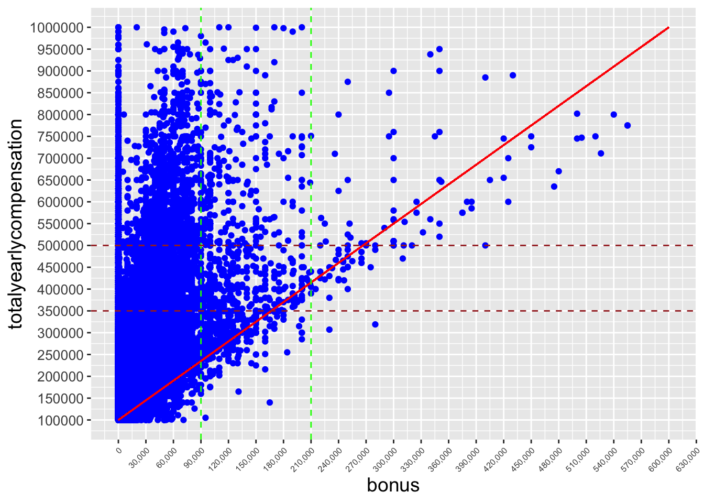

<!DOCTYPE html>
<html xmlns="http://www.w3.org/1999/xhtml" lang="en" xml:lang="en"><head>

<meta charset="utf-8">
<meta name="generator" content="quarto-1.3.361">

<meta name="viewport" content="width=device-width, initial-scale=1.0, user-scalable=yes">

<meta name="author" content="Paritosh Gandhi">
<meta name="dcterms.date" content="2023-05-23">
<meta name="description" content="Salries Analytics Levels.fyi">

<title>601_Final_Project</title>
<style>
code{white-space: pre-wrap;}
span.smallcaps{font-variant: small-caps;}
div.columns{display: flex; gap: min(4vw, 1.5em);}
div.column{flex: auto; overflow-x: auto;}
div.hanging-indent{margin-left: 1.5em; text-indent: -1.5em;}
ul.task-list{list-style: none;}
ul.task-list li input[type="checkbox"] {
  width: 0.8em;
  margin: 0 0.8em 0.2em -1em; /* quarto-specific, see https://github.com/quarto-dev/quarto-cli/issues/4556 */ 
  vertical-align: middle;
}
/* CSS for syntax highlighting */
pre > code.sourceCode { white-space: pre; position: relative; }
pre > code.sourceCode > span { display: inline-block; line-height: 1.25; }
pre > code.sourceCode > span:empty { height: 1.2em; }
.sourceCode { overflow: visible; }
code.sourceCode > span { color: inherit; text-decoration: inherit; }
div.sourceCode { margin: 1em 0; }
pre.sourceCode { margin: 0; }
@media screen {
div.sourceCode { overflow: auto; }
}
@media print {
pre > code.sourceCode { white-space: pre-wrap; }
pre > code.sourceCode > span { text-indent: -5em; padding-left: 5em; }
}
pre.numberSource code
  { counter-reset: source-line 0; }
pre.numberSource code > span
  { position: relative; left: -4em; counter-increment: source-line; }
pre.numberSource code > span > a:first-child::before
  { content: counter(source-line);
    position: relative; left: -1em; text-align: right; vertical-align: baseline;
    border: none; display: inline-block;
    -webkit-touch-callout: none; -webkit-user-select: none;
    -khtml-user-select: none; -moz-user-select: none;
    -ms-user-select: none; user-select: none;
    padding: 0 4px; width: 4em;
  }
pre.numberSource { margin-left: 3em;  padding-left: 4px; }
div.sourceCode
  {   }
@media screen {
pre > code.sourceCode > span > a:first-child::before { text-decoration: underline; }
}
</style>


<script src="../site_libs/quarto-nav/quarto-nav.js"></script>
<script src="../site_libs/quarto-nav/headroom.min.js"></script>
<script src="../site_libs/clipboard/clipboard.min.js"></script>
<script src="../site_libs/quarto-search/autocomplete.umd.js"></script>
<script src="../site_libs/quarto-search/fuse.min.js"></script>
<script src="../site_libs/quarto-search/quarto-search.js"></script>
<meta name="quarto:offset" content="../">
<link href="../images/DACSS_Round_Network.png" rel="icon" type="image/png">
<script src="../site_libs/quarto-html/quarto.js"></script>
<script src="../site_libs/quarto-html/popper.min.js"></script>
<script src="../site_libs/quarto-html/tippy.umd.min.js"></script>
<script src="../site_libs/quarto-html/anchor.min.js"></script>
<link href="../site_libs/quarto-html/tippy.css" rel="stylesheet">
<link href="../site_libs/quarto-html/quarto-syntax-highlighting.css" rel="stylesheet" class="quarto-color-scheme" id="quarto-text-highlighting-styles">
<link href="../site_libs/quarto-html/quarto-syntax-highlighting-dark.css" rel="prefetch" class="quarto-color-scheme quarto-color-alternate" id="quarto-text-highlighting-styles">
<script src="../site_libs/bootstrap/bootstrap.min.js"></script>
<link href="../site_libs/bootstrap/bootstrap-icons.css" rel="stylesheet">
<link href="../site_libs/bootstrap/bootstrap.min.css" rel="stylesheet" class="quarto-color-scheme" id="quarto-bootstrap" data-mode="light">
<link href="../site_libs/bootstrap/bootstrap-dark.min.css" rel="prefetch" class="quarto-color-scheme quarto-color-alternate" id="quarto-bootstrap" data-mode="dark">
<script id="quarto-search-options" type="application/json">{
  "location": "navbar",
  "copy-button": false,
  "collapse-after": 3,
  "panel-placement": "end",
  "type": "overlay",
  "limit": 20,
  "language": {
    "search-no-results-text": "No results",
    "search-matching-documents-text": "matching documents",
    "search-copy-link-title": "Copy link to search",
    "search-hide-matches-text": "Hide additional matches",
    "search-more-match-text": "more match in this document",
    "search-more-matches-text": "more matches in this document",
    "search-clear-button-title": "Clear",
    "search-detached-cancel-button-title": "Cancel",
    "search-submit-button-title": "Submit",
    "search-label": "Search"
  }
}</script>


<meta name="twitter:title" content="601_Final_Project">
<meta name="twitter:description" content="Salries Analytics Levels.fyi">
<meta name="twitter:image" content="https://dacss.github.io/601_Spring_2023/posts/data:image/png;base64, iVBORw0KGgoAAAANSUhEUgAAAHUAAAC9CAQAAAAntvruAAAAAmJLR0QA/4ePzL8AAAAHdElNRQfnBRgSChqC9xd0AAABP0lEQVR42u3XQQrCQBQFQSPe0ZN5CE+p24ngRoVg/S5XISBpMoJve5ymOB/9AKWW+pXH8rlxP9y1btBbLVVUqqhUUamiUkWligalbutu245+mp9b6wa91V2qN83fptpKFZUqKlVUqqhUUamiQalNc1HTXFSqqFRRqaJSRaWKShW1V0XtVVGpolJFpYpKFZUqKlU0KLVpLmqai0oVlSoqVVSqqFRRqaJBqU1zUdNcVKqoVFGpolJFpYpKFbVXRe1VUamiUkWlikoVlSoqVTQotWkuapqLShWVKipVVKqoVFGpovaqqL0qKlVUqqhUUamiUkWligalNs1FTXNRqaJSRaWKShWVKipVNCi1aS66rBfgNF8O6mV/53r0o/3UfXc16ACXKipVVKqoVFGpopf/wPfPvuUvbN6YeWfQAS5V9AQ/lDZhDrIF9wAAACV0RVh0ZGF0ZTpjcmVhdGUAMjAyMy0wNS0yNFQxODoxMDoyNiswMDowMCwURdQAAAAldEVYdGRhdGU6bW9kaWZ5ADIwMjMtMDUtMjRUMTg6MTA6MjYrMDA6MDBdSf1oAAAAPXRFWHRpY2M6Y29weXJpZ2h0AENvcHlyaWdodCAyMDA3IEFwcGxlIEluYy4sIGFsbCByaWdodHMgcmVzZXJ2ZWQunmbcKQAAACN0RVh0aWNjOmRlc2NyaXB0aW9uAEdlbmVyaWMgUkdCIFByb2ZpbGUapziOAAAAAElFTkSuQmCC">
<meta name="twitter:creator" content="@UMassDACSS">
<meta name="twitter:site" content="@UMassDACSS">
<meta name="twitter:card" content="summary_large_image">
</head>

<body class="nav-fixed">

<div id="quarto-search-results"></div>
  <header id="quarto-header" class="headroom fixed-top">
    <nav class="navbar navbar-expand-lg navbar-dark ">
      <div class="navbar-container container-fluid">
      <div class="navbar-brand-container">
    <a href="../index.html" class="navbar-brand navbar-brand-logo">
    
    </a>
  </div>
            <div id="quarto-search" class="" title="Search"></div>
          <button class="navbar-toggler" type="button" data-bs-toggle="collapse" data-bs-target="#navbarCollapse" aria-controls="navbarCollapse" aria-expanded="false" aria-label="Toggle navigation" onclick="if (window.quartoToggleHeadroom) { window.quartoToggleHeadroom(); }">
  <span class="navbar-toggler-icon"></span>
</button>
          <div class="collapse navbar-collapse" id="navbarCollapse">
            <ul class="navbar-nav navbar-nav-scroll ms-auto">
  <li class="nav-item">
    <a class="nav-link" href="https://github.com/DACSS" rel="" target="">
 <span class="menu-text"></span></a>
  </li>  
  <li class="nav-item">
    <a class="nav-link" href="../about.html" rel="" target="">
 <span class="menu-text">Contributors</span></a>
  </li>  
  <li class="nav-item">
    <a class="nav-link" href="https://umass.edu/sbs/dacss" rel="" target="">
 <span class="menu-text">DACSS</span></a>
  </li>  
  <li class="nav-item compact">
    <a class="nav-link" href="https://github.com/DACSS" rel="" target=""><i class="bi bi-github" role="img" aria-label="GitHub">
</i> 
 <span class="menu-text"></span></a>
  </li>  
</ul>
            <div class="quarto-navbar-tools">
  <a href="" class="quarto-color-scheme-toggle quarto-navigation-tool  px-1" onclick="window.quartoToggleColorScheme(); return false;" title="Toggle dark mode"><i class="bi"></i></a>
</div>
          </div> <!-- /navcollapse -->
      </div> <!-- /container-fluid -->
    </nav>
</header>
<!-- content -->
<div id="quarto-content" class="quarto-container page-columns page-rows-contents page-layout-article page-navbar">
<!-- sidebar -->
<!-- margin-sidebar -->
    <div id="quarto-margin-sidebar" class="sidebar margin-sidebar">
        <nav id="TOC" role="doc-toc" class="toc-active">
    <h2 id="toc-title">On this page</h2>
   
  <ul>
  <li><a href="#introduction" id="toc-introduction" class="nav-link active" data-scroll-target="#introduction"><strong>Introduction</strong></a></li>
  <li><a href="#data" id="toc-data" class="nav-link" data-scroll-target="#data"><strong>Data</strong></a>
  <ul class="collapse">
  <li><a href="#tidying-the-dataset" id="toc-tidying-the-dataset" class="nav-link" data-scroll-target="#tidying-the-dataset"><strong>Tidying the Dataset</strong></a></li>
  <li><a href="#points-of-interest-which-will-be-analysedsort-of-research-questions" id="toc-points-of-interest-which-will-be-analysedsort-of-research-questions" class="nav-link" data-scroll-target="#points-of-interest-which-will-be-analysedsort-of-research-questions"><strong>Points of Interest which will be Analysed(sort of research Questions)</strong></a></li>
  <li><a href="#tentative-plan-of-visualisation" id="toc-tentative-plan-of-visualisation" class="nav-link" data-scroll-target="#tentative-plan-of-visualisation"><strong>Tentative Plan of Visualisation</strong></a></li>
  <li><a href="#distribution-of-dataset" id="toc-distribution-of-dataset" class="nav-link" data-scroll-target="#distribution-of-dataset"><strong>Distribution of dataset</strong></a></li>
  <li><a href="#visualization-related-to-dataset" id="toc-visualization-related-to-dataset" class="nav-link" data-scroll-target="#visualization-related-to-dataset"><strong>Visualization related to dataset</strong></a></li>
  <li><a href="#year-wise-distribution-of-responses" id="toc-year-wise-distribution-of-responses" class="nav-link" data-scroll-target="#year-wise-distribution-of-responses"><strong>1) Year wise distribution of responses</strong></a></li>
  <li><a href="#pie-chart-showing-pie-of-each-state-for-united-states." id="toc-pie-chart-showing-pie-of-each-state-for-united-states." class="nav-link" data-scroll-target="#pie-chart-showing-pie-of-each-state-for-united-states."><strong>2) Pie-chart showing pie of each state for United States.</strong></a></li>
  <li><a href="#top-15-companies-employee-percentage." id="toc-top-15-companies-employee-percentage." class="nav-link" data-scroll-target="#top-15-companies-employee-percentage."><strong>3) Top 15 companies employee percentage.</strong></a></li>
  <li><a href="#table-showing-range-wise-distribution-of-salary-the-ranges-are-defined-by-me." id="toc-table-showing-range-wise-distribution-of-salary-the-ranges-are-defined-by-me." class="nav-link" data-scroll-target="#table-showing-range-wise-distribution-of-salary-the-ranges-are-defined-by-me."><strong>4) Table showing range wise distribution of</strong> salary the ranges are defined by me.</a></li>
  <li><a href="#violin-plot-shows-spread-of-tyc-for-each-titles" id="toc-violin-plot-shows-spread-of-tyc-for-each-titles" class="nav-link" data-scroll-target="#violin-plot-shows-spread-of-tyc-for-each-titles"><strong>5) Violin Plot shows spread of TYC for each titles</strong></a></li>
  <li><a href="#a-box-plot-for-all-countries-title-and-tyc-and-color-is-year" id="toc-a-box-plot-for-all-countries-title-and-tyc-and-color-is-year" class="nav-link" data-scroll-target="#a-box-plot-for-all-countries-title-and-tyc-and-color-is-year"><strong>6.a) Box plot for All countries title and tyc and color is year</strong></a></li>
  <li><a href="#b-box-plot-for-united-states-all-titles-tyc-and-color-year" id="toc-b-box-plot-for-united-states-all-titles-tyc-and-color-year" class="nav-link" data-scroll-target="#b-box-plot-for-united-states-all-titles-tyc-and-color-year"><strong>7.b) Box Plot for united states all titles tyc and color = year</strong></a></li>
  <li><a href="#canalyzing-salary-of-software-engineer-across-states-in-united-states." id="toc-canalyzing-salary-of-software-engineer-across-states-in-united-states." class="nav-link" data-scroll-target="#canalyzing-salary-of-software-engineer-across-states-in-united-states."><strong>8.c)Analyzing Salary of Software Engineer across states in United States.</strong></a></li>
  <li><a href="#d-title-wise-skewness-of-tyc" id="toc-d-title-wise-skewness-of-tyc" class="nav-link" data-scroll-target="#d-title-wise-skewness-of-tyc"><strong>9.d) Title wise skewness of TYC</strong></a></li>
  <li><a href="#e-tyc-vs.-base-salary" id="toc-e-tyc-vs.-base-salary" class="nav-link" data-scroll-target="#e-tyc-vs.-base-salary"><strong>11.e) TYC VS. Base salary</strong></a></li>
  <li><a href="#e-tyc-vs-bonus" id="toc-e-tyc-vs-bonus" class="nav-link" data-scroll-target="#e-tyc-vs-bonus"><strong>12.e) TYC vs Bonus</strong></a></li>
  <li><a href="#f-table-is-used-as-benchmark-for-n-total-reponses-or-employees-who-provided-responses-total_salary-sum-of-tycs-of-employees-or-responders-rest-is-self_explanatory." id="toc-f-table-is-used-as-benchmark-for-n-total-reponses-or-employees-who-provided-responses-total_salary-sum-of-tycs-of-employees-or-responders-rest-is-self_explanatory." class="nav-link" data-scroll-target="#f-table-is-used-as-benchmark-for-n-total-reponses-or-employees-who-provided-responses-total_salary-sum-of-tycs-of-employees-or-responders-rest-is-self_explanatory."><strong>13.f) Table is used as benchmark for n= total reponses or employees who provided responses, total_salary = sum of Tyc’s of employee’s or responders rest is self_explanatory.</strong></a></li>
  <li><a href="#f-below-table-shows-selected-companies-which-compare-to-table-13.f-paid-exorbitantly" id="toc-f-below-table-shows-selected-companies-which-compare-to-table-13.f-paid-exorbitantly" class="nav-link" data-scroll-target="#f-below-table-shows-selected-companies-which-compare-to-table-13.f-paid-exorbitantly"><strong>14.f) Below table shows selected companies which compare to table 13.f) paid exorbitantly</strong></a></li>
  <li><a href="#conclusion" id="toc-conclusion" class="nav-link" data-scroll-target="#conclusion"><strong>Conclusion</strong></a></li>
  <li><a href="#bibliography" id="toc-bibliography" class="nav-link" data-scroll-target="#bibliography"><strong>Bibliography</strong></a></li>
  </ul></li>
  </ul>
</nav>
    </div>
<!-- main -->
<main class="content" id="quarto-document-content">

<header id="title-block-header" class="quarto-title-block default">
<div class="quarto-title">
<div class="quarto-title-block"><div><h1 class="title">601_Final_Project</h1><button type="button" class="btn code-tools-button dropdown-toggle" id="quarto-code-tools-menu" data-bs-toggle="dropdown" aria-expanded="false"><i class="bi"></i> Code</button><ul class="dropdown-menu dropdown-menu-end" aria-labelelledby="quarto-code-tools-menu"><li><a id="quarto-show-all-code" class="dropdown-item" href="javascript:void(0)" role="button">Show All Code</a></li><li><a id="quarto-hide-all-code" class="dropdown-item" href="javascript:void(0)" role="button">Hide All Code</a></li><li><hr class="dropdown-divider"></li><li><a id="quarto-view-source" class="dropdown-item" href="javascript:void(0)" role="button">View Source</a></li></ul></div></div>
  <div class="quarto-categories">
    <div class="quarto-category">final</div>
    <div class="quarto-category">Paritosh Gandhi</div>
  </div>
  </div>

<div>
  <div class="description">
    Salries Analytics Levels.fyi
  </div>
</div>


<div class="quarto-title-meta">

    <div>
    <div class="quarto-title-meta-heading">Author</div>
    <div class="quarto-title-meta-contents">
             <p>Paritosh Gandhi </p>
          </div>
  </div>
    
    <div>
    <div class="quarto-title-meta-heading">Published</div>
    <div class="quarto-title-meta-contents">
      <p class="date">May 23, 2023</p>
    </div>
  </div>
  
    
  </div>
  

</header>

<section id="introduction" class="level1">
<h1><strong>Introduction</strong></h1>
<ul>
<li>Each and everyone amongst us is working hard today in their personal and &nbsp;profession whether as a Student, Teacher, Tutor or as an employee to achieve our financial, personal, social and other goals. In order to attain our goals we need multiple ingredients, such as good physical health , stable mental health, a supporting partner, a family which provides us a purpose and keeps us going constantly. For a lot of people around the globe financial goals are the topmost priority since it gives them a secure future. However, like everything in this world it does have its own merits and demerits. Many times I do wonder what will be the payback period, internal rate of return to my investment in international education. One of the primary reasons to choose a course related to DACSS was its flexibility which allows students to take up multiple subjects from varied departments and which might help develop themselves in their profession of interest which may also pay handsomely. The dataset provides information about compensation both pre-covid and during covid present salaries and bonuses. It might include both but particularly emphasize pre-covid levels relative to during covid. My analysis and this dataset will most likely be helpful to students who will be graduating in present time or within immediate one to two years from now to gauge probable compensations, returns on investment and demand supply. In most of the cases ,the supply of jobs in terms of the compensation &nbsp;is determined by the roles which are in particular demand presently. However, we should also keep in mind the role which would be in particular demand in the coming &nbsp;two years.Though its popularity is uncertain in the current times or in the later future,one such field of engineering particularly in demand in the immediate future is “Prompt Engineering”.</li>
</ul>
</section>
<section id="data" class="level1">
<h1><strong>Data</strong></h1>
<ul>
<li><p>The dataset consists of 62642 rows and 29 column and out of which only 10 are relevant to analysis not to forget 10 columns after tidying the data as few columns were created by separating columns into new column, this will be discussed in detail in tidying the data section. Dataset is “metadata-based dataset” which was downloaded from kaggle but the primary source of the data is website “Levels.Fyi”, and glassdoor.com which based on the responses of the people created the metadata</p></li>
<li><p>The original metadata contains the actual data to race, gender, education level but this dataset created from meta data does not contain the same information but it does contain vital information about the compensation distribution in the form of base salary, stock grants bonus. It consists of information about the company they are working and location of work etc.</p></li>
<li><p>Reading the data and calling/or listing the libraries in use</p></li>
</ul>
<div class="cell">
<details>
<summary>Code</summary>
<div class="sourceCode cell-code" id="cb1"><pre class="sourceCode r code-with-copy"><code class="sourceCode r"><span id="cb1-1"><a href="#cb1-1" aria-hidden="true" tabindex="-1"></a><span class="fu">library</span>(tidyverse)</span></code><button title="Copy to Clipboard" class="code-copy-button"><i class="bi"></i></button></pre></div>
</details>
<div class="cell-output cell-output-stderr">
<pre><code>── Attaching core tidyverse packages ──────────────────────── tidyverse 2.0.0 ──
✔ dplyr     1.1.1     ✔ readr     2.1.4
✔ forcats   1.0.0     ✔ stringr   1.5.0
✔ ggplot2   3.4.2     ✔ tibble    3.2.1
✔ lubridate 1.9.2     ✔ tidyr     1.3.0
✔ purrr     1.0.1     
── Conflicts ────────────────────────────────────────── tidyverse_conflicts() ──
✖ dplyr::filter() masks stats::filter()
✖ dplyr::lag()    masks stats::lag()
ℹ Use the ]8;;http://conflicted.r-lib.org/conflicted package]8;; to force all conflicts to become errors</code></pre>
</div>
<details>
<summary>Code</summary>
<div class="sourceCode cell-code" id="cb3"><pre class="sourceCode r code-with-copy"><code class="sourceCode r"><span id="cb3-1"><a href="#cb3-1" aria-hidden="true" tabindex="-1"></a><span class="fu">library</span>(lubridate)</span>
<span id="cb3-2"><a href="#cb3-2" aria-hidden="true" tabindex="-1"></a><span class="fu">library</span>(dplyr)</span>
<span id="cb3-3"><a href="#cb3-3" aria-hidden="true" tabindex="-1"></a><span class="fu">library</span>(stringr)</span>
<span id="cb3-4"><a href="#cb3-4" aria-hidden="true" tabindex="-1"></a><span class="fu">library</span>(ggplot2)</span>
<span id="cb3-5"><a href="#cb3-5" aria-hidden="true" tabindex="-1"></a><span class="fu">library</span>(ggrepel)</span>
<span id="cb3-6"><a href="#cb3-6" aria-hidden="true" tabindex="-1"></a><span class="fu">library</span>(plotly)</span></code><button title="Copy to Clipboard" class="code-copy-button"><i class="bi"></i></button></pre></div>
</details>
<div class="cell-output cell-output-stderr">
<pre><code>
Attaching package: 'plotly'

The following object is masked from 'package:ggplot2':

    last_plot

The following object is masked from 'package:stats':

    filter

The following object is masked from 'package:graphics':

    layout</code></pre>
</div>
<details>
<summary>Code</summary>
<div class="sourceCode cell-code" id="cb5"><pre class="sourceCode r code-with-copy"><code class="sourceCode r"><span id="cb5-1"><a href="#cb5-1" aria-hidden="true" tabindex="-1"></a><span class="fu">library</span>(tidyr)</span>
<span id="cb5-2"><a href="#cb5-2" aria-hidden="true" tabindex="-1"></a><span class="fu">library</span>(summarytools)</span></code><button title="Copy to Clipboard" class="code-copy-button"><i class="bi"></i></button></pre></div>
</details>
<div class="cell-output cell-output-stderr">
<pre><code>
Attaching package: 'summarytools'

The following object is masked from 'package:tibble':

    view</code></pre>
</div>
<details>
<summary>Code</summary>
<div class="sourceCode cell-code" id="cb7"><pre class="sourceCode r code-with-copy"><code class="sourceCode r"><span id="cb7-1"><a href="#cb7-1" aria-hidden="true" tabindex="-1"></a>dt <span class="ot">&lt;-</span> <span class="fu">read_csv</span>(<span class="st">"Data_Folder_Paritosh/Levels_Fyi_Salary_Data.csv"</span>)</span></code><button title="Copy to Clipboard" class="code-copy-button"><i class="bi"></i></button></pre></div>
</details>
<div class="cell-output cell-output-stderr">
<pre><code>Rows: 62642 Columns: 29
── Column specification ────────────────────────────────────────────────────────
Delimiter: ","
chr (10): timestamp, company, level, title, location, tag, gender, otherdeta...
dbl (19): totalyearlycompensation, yearsofexperience, yearsatcompany, basesa...

ℹ Use `spec()` to retrieve the full column specification for this data.
ℹ Specify the column types or set `show_col_types = FALSE` to quiet this message.</code></pre>
</div>
</div>
<ul>
<li><strong>listing the columns</strong></li>
</ul>
<div class="cell">
<details>
<summary>Code</summary>
<div class="sourceCode cell-code" id="cb9"><pre class="sourceCode r code-with-copy"><code class="sourceCode r"><span id="cb9-1"><a href="#cb9-1" aria-hidden="true" tabindex="-1"></a><span class="fu">colnames</span>(dt)</span></code><button title="Copy to Clipboard" class="code-copy-button"><i class="bi"></i></button></pre></div>
</details>
<div class="cell-output cell-output-stdout">
<pre><code> [1] "timestamp"               "company"                
 [3] "level"                   "title"                  
 [5] "totalyearlycompensation" "location"               
 [7] "yearsofexperience"       "yearsatcompany"         
 [9] "tag"                     "basesalary"             
[11] "stockgrantvalue"         "bonus"                  
[13] "gender"                  "otherdetails"           
[15] "cityid"                  "dmaid"                  
[17] "rowNumber"               "Masters_Degree"         
[19] "Bachelors_Degree"        "Doctorate_Degree"       
[21] "Highschool"              "Some_College"           
[23] "Race_Asian"              "Race_White"             
[25] "Race_Two_Or_More"        "Race_Black"             
[27] "Race_Hispanic"           "Race"                   
[29] "Education"              </code></pre>
</div>
</div>
<ul>
<li><p>The rows or data in the columns after column number 12 which is bonus are either “NA” or “0” or either edited so that data cannot be used most likely due to privacy reason or reasons not known hence deleting them. Before column number 12 bonus there is one column named “tag” which has nothing but “NA”.</p></li>
<li><p>After deleting column “tag” bonus will be column number 11 and the next step will be to delete rest of the columns after column “bonus”.</p></li>
<li><p><strong>Deleting column “tag”</strong></p>
<div class="cell">
<details>
<summary>Code</summary>
<div class="sourceCode cell-code" id="cb11"><pre class="sourceCode r code-with-copy"><code class="sourceCode r"><span id="cb11-1"><a href="#cb11-1" aria-hidden="true" tabindex="-1"></a>dt <span class="ot">&lt;-</span> <span class="fu">subset</span>(dt, <span class="at">select =</span> <span class="sc">-</span>tag)</span></code><button title="Copy to Clipboard" class="code-copy-button"><i class="bi"></i></button></pre></div>
</details>
</div></li>
<li><p><strong>deleting column 12 to 28</strong></p>
<div class="cell">
<details>
<summary>Code</summary>
<div class="sourceCode cell-code" id="cb12"><pre class="sourceCode r code-with-copy"><code class="sourceCode r"><span id="cb12-1"><a href="#cb12-1" aria-hidden="true" tabindex="-1"></a>dt <span class="ot">&lt;-</span> dt[, <span class="sc">-</span><span class="fu">c</span>(<span class="dv">12</span><span class="sc">:</span><span class="dv">28</span>)]</span></code><button title="Copy to Clipboard" class="code-copy-button"><i class="bi"></i></button></pre></div>
</details>
</div></li>
<li><p><strong>Updated colnames</strong></p>
<div class="cell">
<details>
<summary>Code</summary>
<div class="sourceCode cell-code" id="cb13"><pre class="sourceCode r code-with-copy"><code class="sourceCode r"><span id="cb13-1"><a href="#cb13-1" aria-hidden="true" tabindex="-1"></a><span class="fu">colnames</span>(dt)</span></code><button title="Copy to Clipboard" class="code-copy-button"><i class="bi"></i></button></pre></div>
</details>
<div class="cell-output cell-output-stdout">
<pre><code> [1] "timestamp"               "company"                
 [3] "level"                   "title"                  
 [5] "totalyearlycompensation" "location"               
 [7] "yearsofexperience"       "yearsatcompany"         
 [9] "basesalary"              "stockgrantvalue"        
[11] "bonus"                  </code></pre>
</div>
</div></li>
<li><p><strong>Handling NA values.</strong></p>
<p>Only column name “level” has 15 “NA” missing values but we are not using the column in any visualisations.</p></li>
</ul>
<p><strong>Summary of the dataset</strong></p>
<div class="cell">
<details>
<summary>Code</summary>
<div class="sourceCode cell-code" id="cb15"><pre class="sourceCode r code-with-copy"><code class="sourceCode r"><span id="cb15-1"><a href="#cb15-1" aria-hidden="true" tabindex="-1"></a><span class="fu">print</span>(summarytools<span class="sc">::</span><span class="fu">dfSummary</span>(dt,</span>
<span id="cb15-2"><a href="#cb15-2" aria-hidden="true" tabindex="-1"></a>                        <span class="at">varnumbers =</span> <span class="cn">FALSE</span>,</span>
<span id="cb15-3"><a href="#cb15-3" aria-hidden="true" tabindex="-1"></a>                        <span class="at">plain.ascii  =</span> <span class="cn">FALSE</span>, </span>
<span id="cb15-4"><a href="#cb15-4" aria-hidden="true" tabindex="-1"></a>                        <span class="at">style        =</span> <span class="st">"grid"</span>, </span>
<span id="cb15-5"><a href="#cb15-5" aria-hidden="true" tabindex="-1"></a>                        <span class="at">graph.magnif =</span> <span class="fl">0.70</span>, </span>
<span id="cb15-6"><a href="#cb15-6" aria-hidden="true" tabindex="-1"></a>                        <span class="at">valid.col    =</span> <span class="cn">FALSE</span>),</span>
<span id="cb15-7"><a href="#cb15-7" aria-hidden="true" tabindex="-1"></a>      <span class="at">method =</span> <span class="st">'render'</span>,</span>
<span id="cb15-8"><a href="#cb15-8" aria-hidden="true" tabindex="-1"></a>      <span class="at">table.classes =</span> <span class="st">'table-condensed'</span>)</span></code><button title="Copy to Clipboard" class="code-copy-button"><i class="bi"></i></button></pre></div>
</details>
<div class="cell-output-display">
<div class="container st-container">
<h3 class="anchored">Data Frame Summary</h3>
<h4 class="anchored">dt</h4>
<strong>Dimensions</strong>: 62642 x 11
  <br><strong>Duplicates</strong>: 44
<br>

<table class="table table-striped table-bordered st-table st-table-striped st-table-bordered st-multiline table-condensed table-sm small" data-quarto-postprocess="true">
<colgroup>
<col style="width: 20%">
<col style="width: 20%">
<col style="width: 20%">
<col style="width: 20%">
<col style="width: 20%">
</colgroup>
<thead>
<tr class="header">
<th class="st-protect-top-border" style="text-align: center;" data-quarto-table-cell-role="th"><strong>Variable</strong></th>
<th class="st-protect-top-border" style="text-align: center;" data-quarto-table-cell-role="th"><strong>Stats / Values</strong></th>
<th class="st-protect-top-border" style="text-align: center;" data-quarto-table-cell-role="th"><strong>Freqs (% of Valid)</strong></th>
<th class="st-protect-top-border" style="text-align: center;" data-quarto-table-cell-role="th"><strong>Graph</strong></th>
<th class="st-protect-top-border" style="text-align: center;" data-quarto-table-cell-role="th"><strong>Missing</strong></th>
</tr>
</thead>
<tbody>
<tr class="odd">
<td style="text-align: left;">timestamp [character]</td>
<td style="text-align: left; padding: 8; vertical-align: middle;"><table data-quarto-postprocess="true" class="table table-sm table-striped small">
<tbody>
<tr class="odd" style="background-color:transparent">
<td style="text-align: left; padding: 0; margin: 0; border: 0;">1. 1/10/2019 21:44:02</td>
</tr>
<tr class="even" style="background-color:transparent">
<td style="text-align: left; padding: 0; margin: 0; border: 0;">2. 10/25/2019 10:26:31</td>
</tr>
<tr class="odd" style="background-color:transparent">
<td style="text-align: left; padding: 0; margin: 0; border: 0;">3. 2/25/2020 13:25:07</td>
</tr>
<tr class="even" style="background-color:transparent">
<td style="text-align: left; padding: 0; margin: 0; border: 0;">4. 1/20/2020 7:52:18</td>
</tr>
<tr class="odd" style="background-color:transparent">
<td style="text-align: left; padding: 0; margin: 0; border: 0;">5. 1/30/2019 19:05:05</td>
</tr>
<tr class="even" style="background-color:transparent">
<td style="text-align: left; padding: 0; margin: 0; border: 0;">6. 1/7/2021 8:57:52</td>
</tr>
<tr class="odd" style="background-color:transparent">
<td style="text-align: left; padding: 0; margin: 0; border: 0;">7. 10/13/2019 18:24:16</td>
</tr>
<tr class="even" style="background-color:transparent">
<td style="text-align: left; padding: 0; margin: 0; border: 0;">8. 10/23/2019 11:32:55</td>
</tr>
<tr class="odd" style="background-color:transparent">
<td style="text-align: left; padding: 0; margin: 0; border: 0;">9. 10/3/2019 0:07:54</td>
</tr>
<tr class="even" style="background-color:transparent">
<td style="text-align: left; padding: 0; margin: 0; border: 0;">10. 10/3/2019 14:53:24</td>
</tr>
<tr class="odd" style="background-color:transparent">
<td style="text-align: left; padding: 0; margin: 0; border: 0;">[ 62551 others ]</td>
</tr>
</tbody>
</table></td>
<td style="text-align: left; padding: 0; vertical-align: middle;"><table data-quarto-postprocess="true" class="table table-sm table-striped small">
<tbody>
<tr class="odd" style="background-color:transparent">
<td style="text-align: right; padding: 0 5px 0 7px; margin: 0; border: 0;">3</td>
<td style="text-align: left; padding: 0 2px 0 0; border: 0;">(</td>
<td style="text-align: right; padding: 0; border: 0;">0.0%</td>
<td style="text-align: left; padding: 0 4px 0 2px; border: 0;">)</td>
</tr>
<tr class="even" style="background-color:transparent">
<td style="text-align: right; padding: 0 5px 0 7px; margin: 0; border: 0;">3</td>
<td style="text-align: left; padding: 0 2px 0 0; border: 0;">(</td>
<td style="text-align: right; padding: 0; border: 0;">0.0%</td>
<td style="text-align: left; padding: 0 4px 0 2px; border: 0;">)</td>
</tr>
<tr class="odd" style="background-color:transparent">
<td style="text-align: right; padding: 0 5px 0 7px; margin: 0; border: 0;">3</td>
<td style="text-align: left; padding: 0 2px 0 0; border: 0;">(</td>
<td style="text-align: right; padding: 0; border: 0;">0.0%</td>
<td style="text-align: left; padding: 0 4px 0 2px; border: 0;">)</td>
</tr>
<tr class="even" style="background-color:transparent">
<td style="text-align: right; padding: 0 5px 0 7px; margin: 0; border: 0;">2</td>
<td style="text-align: left; padding: 0 2px 0 0; border: 0;">(</td>
<td style="text-align: right; padding: 0; border: 0;">0.0%</td>
<td style="text-align: left; padding: 0 4px 0 2px; border: 0;">)</td>
</tr>
<tr class="odd" style="background-color:transparent">
<td style="text-align: right; padding: 0 5px 0 7px; margin: 0; border: 0;">2</td>
<td style="text-align: left; padding: 0 2px 0 0; border: 0;">(</td>
<td style="text-align: right; padding: 0; border: 0;">0.0%</td>
<td style="text-align: left; padding: 0 4px 0 2px; border: 0;">)</td>
</tr>
<tr class="even" style="background-color:transparent">
<td style="text-align: right; padding: 0 5px 0 7px; margin: 0; border: 0;">2</td>
<td style="text-align: left; padding: 0 2px 0 0; border: 0;">(</td>
<td style="text-align: right; padding: 0; border: 0;">0.0%</td>
<td style="text-align: left; padding: 0 4px 0 2px; border: 0;">)</td>
</tr>
<tr class="odd" style="background-color:transparent">
<td style="text-align: right; padding: 0 5px 0 7px; margin: 0; border: 0;">2</td>
<td style="text-align: left; padding: 0 2px 0 0; border: 0;">(</td>
<td style="text-align: right; padding: 0; border: 0;">0.0%</td>
<td style="text-align: left; padding: 0 4px 0 2px; border: 0;">)</td>
</tr>
<tr class="even" style="background-color:transparent">
<td style="text-align: right; padding: 0 5px 0 7px; margin: 0; border: 0;">2</td>
<td style="text-align: left; padding: 0 2px 0 0; border: 0;">(</td>
<td style="text-align: right; padding: 0; border: 0;">0.0%</td>
<td style="text-align: left; padding: 0 4px 0 2px; border: 0;">)</td>
</tr>
<tr class="odd" style="background-color:transparent">
<td style="text-align: right; padding: 0 5px 0 7px; margin: 0; border: 0;">2</td>
<td style="text-align: left; padding: 0 2px 0 0; border: 0;">(</td>
<td style="text-align: right; padding: 0; border: 0;">0.0%</td>
<td style="text-align: left; padding: 0 4px 0 2px; border: 0;">)</td>
</tr>
<tr class="even" style="background-color:transparent">
<td style="text-align: right; padding: 0 5px 0 7px; margin: 0; border: 0;">2</td>
<td style="text-align: left; padding: 0 2px 0 0; border: 0;">(</td>
<td style="text-align: right; padding: 0; border: 0;">0.0%</td>
<td style="text-align: left; padding: 0 4px 0 2px; border: 0;">)</td>
</tr>
<tr class="odd" style="background-color:transparent">
<td style="text-align: right; padding: 0 5px 0 7px; margin: 0; border: 0;">62619</td>
<td style="text-align: left; padding: 0 2px 0 0; border: 0;">(</td>
<td style="text-align: right; padding: 0; border: 0;">100.0%</td>
<td style="text-align: left; padding: 0 4px 0 2px; border: 0;">)</td>
</tr>
</tbody>
</table></td>
<td style="text-align: left; vertical-align: middle; padding: 0; background-color: transparent;"></td>
<td style="text-align: center;">0 (0.0%)</td>
</tr>
<tr class="even">
<td style="text-align: left;">company [character]</td>
<td style="text-align: left; padding: 8; vertical-align: middle;"><table data-quarto-postprocess="true" class="table table-sm table-striped small">
<tbody>
<tr class="odd" style="background-color:transparent">
<td style="text-align: left; padding: 0; margin: 0; border: 0;">1. Amazon</td>
</tr>
<tr class="even" style="background-color:transparent">
<td style="text-align: left; padding: 0; margin: 0; border: 0;">2. Microsoft</td>
</tr>
<tr class="odd" style="background-color:transparent">
<td style="text-align: left; padding: 0; margin: 0; border: 0;">3. Google</td>
</tr>
<tr class="even" style="background-color:transparent">
<td style="text-align: left; padding: 0; margin: 0; border: 0;">4. Facebook</td>
</tr>
<tr class="odd" style="background-color:transparent">
<td style="text-align: left; padding: 0; margin: 0; border: 0;">5. Apple</td>
</tr>
<tr class="even" style="background-color:transparent">
<td style="text-align: left; padding: 0; margin: 0; border: 0;">6. Oracle</td>
</tr>
<tr class="odd" style="background-color:transparent">
<td style="text-align: left; padding: 0; margin: 0; border: 0;">7. Salesforce</td>
</tr>
<tr class="even" style="background-color:transparent">
<td style="text-align: left; padding: 0; margin: 0; border: 0;">8. Intel</td>
</tr>
<tr class="odd" style="background-color:transparent">
<td style="text-align: left; padding: 0; margin: 0; border: 0;">9. Cisco</td>
</tr>
<tr class="even" style="background-color:transparent">
<td style="text-align: left; padding: 0; margin: 0; border: 0;">10. IBM</td>
</tr>
<tr class="odd" style="background-color:transparent">
<td style="text-align: left; padding: 0; margin: 0; border: 0;">[ 1623 others ]</td>
</tr>
</tbody>
</table></td>
<td style="text-align: left; padding: 0; vertical-align: middle;"><table data-quarto-postprocess="true" class="table table-sm table-striped small">
<tbody>
<tr class="odd" style="background-color:transparent">
<td style="text-align: right; padding: 0 5px 0 7px; margin: 0; border: 0;">8126</td>
<td style="text-align: left; padding: 0 2px 0 0; border: 0;">(</td>
<td style="text-align: right; padding: 0; border: 0;">13.0%</td>
<td style="text-align: left; padding: 0 4px 0 2px; border: 0;">)</td>
</tr>
<tr class="even" style="background-color:transparent">
<td style="text-align: right; padding: 0 5px 0 7px; margin: 0; border: 0;">5216</td>
<td style="text-align: left; padding: 0 2px 0 0; border: 0;">(</td>
<td style="text-align: right; padding: 0; border: 0;">8.3%</td>
<td style="text-align: left; padding: 0 4px 0 2px; border: 0;">)</td>
</tr>
<tr class="odd" style="background-color:transparent">
<td style="text-align: right; padding: 0 5px 0 7px; margin: 0; border: 0;">4330</td>
<td style="text-align: left; padding: 0 2px 0 0; border: 0;">(</td>
<td style="text-align: right; padding: 0; border: 0;">6.9%</td>
<td style="text-align: left; padding: 0 4px 0 2px; border: 0;">)</td>
</tr>
<tr class="even" style="background-color:transparent">
<td style="text-align: right; padding: 0 5px 0 7px; margin: 0; border: 0;">2990</td>
<td style="text-align: left; padding: 0 2px 0 0; border: 0;">(</td>
<td style="text-align: right; padding: 0; border: 0;">4.8%</td>
<td style="text-align: left; padding: 0 4px 0 2px; border: 0;">)</td>
</tr>
<tr class="odd" style="background-color:transparent">
<td style="text-align: right; padding: 0 5px 0 7px; margin: 0; border: 0;">2028</td>
<td style="text-align: left; padding: 0 2px 0 0; border: 0;">(</td>
<td style="text-align: right; padding: 0; border: 0;">3.2%</td>
<td style="text-align: left; padding: 0 4px 0 2px; border: 0;">)</td>
</tr>
<tr class="even" style="background-color:transparent">
<td style="text-align: right; padding: 0 5px 0 7px; margin: 0; border: 0;">1128</td>
<td style="text-align: left; padding: 0 2px 0 0; border: 0;">(</td>
<td style="text-align: right; padding: 0; border: 0;">1.8%</td>
<td style="text-align: left; padding: 0 4px 0 2px; border: 0;">)</td>
</tr>
<tr class="odd" style="background-color:transparent">
<td style="text-align: right; padding: 0 5px 0 7px; margin: 0; border: 0;">1056</td>
<td style="text-align: left; padding: 0 2px 0 0; border: 0;">(</td>
<td style="text-align: right; padding: 0; border: 0;">1.7%</td>
<td style="text-align: left; padding: 0 4px 0 2px; border: 0;">)</td>
</tr>
<tr class="even" style="background-color:transparent">
<td style="text-align: right; padding: 0 5px 0 7px; margin: 0; border: 0;">949</td>
<td style="text-align: left; padding: 0 2px 0 0; border: 0;">(</td>
<td style="text-align: right; padding: 0; border: 0;">1.5%</td>
<td style="text-align: left; padding: 0 4px 0 2px; border: 0;">)</td>
</tr>
<tr class="odd" style="background-color:transparent">
<td style="text-align: right; padding: 0 5px 0 7px; margin: 0; border: 0;">907</td>
<td style="text-align: left; padding: 0 2px 0 0; border: 0;">(</td>
<td style="text-align: right; padding: 0; border: 0;">1.4%</td>
<td style="text-align: left; padding: 0 4px 0 2px; border: 0;">)</td>
</tr>
<tr class="even" style="background-color:transparent">
<td style="text-align: right; padding: 0 5px 0 7px; margin: 0; border: 0;">907</td>
<td style="text-align: left; padding: 0 2px 0 0; border: 0;">(</td>
<td style="text-align: right; padding: 0; border: 0;">1.4%</td>
<td style="text-align: left; padding: 0 4px 0 2px; border: 0;">)</td>
</tr>
<tr class="odd" style="background-color:transparent">
<td style="text-align: right; padding: 0 5px 0 7px; margin: 0; border: 0;">35005</td>
<td style="text-align: left; padding: 0 2px 0 0; border: 0;">(</td>
<td style="text-align: right; padding: 0; border: 0;">55.9%</td>
<td style="text-align: left; padding: 0 4px 0 2px; border: 0;">)</td>
</tr>
</tbody>
</table></td>
<td style="text-align: left; vertical-align: middle; padding: 0; background-color: transparent;"></td>
<td style="text-align: center;">0 (0.0%)</td>
</tr>
<tr class="odd">
<td style="text-align: left;">level [character]</td>
<td style="text-align: left; padding: 8; vertical-align: middle;"><table data-quarto-postprocess="true" class="table table-sm table-striped small">
<tbody>
<tr class="odd" style="background-color:transparent">
<td style="text-align: left; padding: 0; margin: 0; border: 0;">1. L4</td>
</tr>
<tr class="even" style="background-color:transparent">
<td style="text-align: left; padding: 0; margin: 0; border: 0;">2. L5</td>
</tr>
<tr class="odd" style="background-color:transparent">
<td style="text-align: left; padding: 0; margin: 0; border: 0;">3. L3</td>
</tr>
<tr class="even" style="background-color:transparent">
<td style="text-align: left; padding: 0; margin: 0; border: 0;">4. L6</td>
</tr>
<tr class="odd" style="background-color:transparent">
<td style="text-align: left; padding: 0; margin: 0; border: 0;">5. Senior Software Engineer</td>
</tr>
<tr class="even" style="background-color:transparent">
<td style="text-align: left; padding: 0; margin: 0; border: 0;">6. L2</td>
</tr>
<tr class="odd" style="background-color:transparent">
<td style="text-align: left; padding: 0; margin: 0; border: 0;">7. Senior</td>
</tr>
<tr class="even" style="background-color:transparent">
<td style="text-align: left; padding: 0; margin: 0; border: 0;">8. L7</td>
</tr>
<tr class="odd" style="background-color:transparent">
<td style="text-align: left; padding: 0; margin: 0; border: 0;">9. L1</td>
</tr>
<tr class="even" style="background-color:transparent">
<td style="text-align: left; padding: 0; margin: 0; border: 0;">10. 62</td>
</tr>
<tr class="odd" style="background-color:transparent">
<td style="text-align: left; padding: 0; margin: 0; border: 0;">[ 2915 others ]</td>
</tr>
</tbody>
</table></td>
<td style="text-align: left; padding: 0; vertical-align: middle;"><table data-quarto-postprocess="true" class="table table-sm table-striped small">
<tbody>
<tr class="odd" style="background-color:transparent">
<td style="text-align: right; padding: 0 5px 0 7px; margin: 0; border: 0;">5014</td>
<td style="text-align: left; padding: 0 2px 0 0; border: 0;">(</td>
<td style="text-align: right; padding: 0; border: 0;">8.0%</td>
<td style="text-align: left; padding: 0 4px 0 2px; border: 0;">)</td>
</tr>
<tr class="even" style="background-color:transparent">
<td style="text-align: right; padding: 0 5px 0 7px; margin: 0; border: 0;">4871</td>
<td style="text-align: left; padding: 0 2px 0 0; border: 0;">(</td>
<td style="text-align: right; padding: 0; border: 0;">7.8%</td>
<td style="text-align: left; padding: 0 4px 0 2px; border: 0;">)</td>
</tr>
<tr class="odd" style="background-color:transparent">
<td style="text-align: right; padding: 0 5px 0 7px; margin: 0; border: 0;">3337</td>
<td style="text-align: left; padding: 0 2px 0 0; border: 0;">(</td>
<td style="text-align: right; padding: 0; border: 0;">5.3%</td>
<td style="text-align: left; padding: 0 4px 0 2px; border: 0;">)</td>
</tr>
<tr class="even" style="background-color:transparent">
<td style="text-align: right; padding: 0 5px 0 7px; margin: 0; border: 0;">2871</td>
<td style="text-align: left; padding: 0 2px 0 0; border: 0;">(</td>
<td style="text-align: right; padding: 0; border: 0;">4.6%</td>
<td style="text-align: left; padding: 0 4px 0 2px; border: 0;">)</td>
</tr>
<tr class="odd" style="background-color:transparent">
<td style="text-align: right; padding: 0 5px 0 7px; margin: 0; border: 0;">1443</td>
<td style="text-align: left; padding: 0 2px 0 0; border: 0;">(</td>
<td style="text-align: right; padding: 0; border: 0;">2.3%</td>
<td style="text-align: left; padding: 0 4px 0 2px; border: 0;">)</td>
</tr>
<tr class="even" style="background-color:transparent">
<td style="text-align: right; padding: 0 5px 0 7px; margin: 0; border: 0;">1163</td>
<td style="text-align: left; padding: 0 2px 0 0; border: 0;">(</td>
<td style="text-align: right; padding: 0; border: 0;">1.9%</td>
<td style="text-align: left; padding: 0 4px 0 2px; border: 0;">)</td>
</tr>
<tr class="odd" style="background-color:transparent">
<td style="text-align: right; padding: 0 5px 0 7px; margin: 0; border: 0;">1079</td>
<td style="text-align: left; padding: 0 2px 0 0; border: 0;">(</td>
<td style="text-align: right; padding: 0; border: 0;">1.7%</td>
<td style="text-align: left; padding: 0 4px 0 2px; border: 0;">)</td>
</tr>
<tr class="even" style="background-color:transparent">
<td style="text-align: right; padding: 0 5px 0 7px; margin: 0; border: 0;">919</td>
<td style="text-align: left; padding: 0 2px 0 0; border: 0;">(</td>
<td style="text-align: right; padding: 0; border: 0;">1.5%</td>
<td style="text-align: left; padding: 0 4px 0 2px; border: 0;">)</td>
</tr>
<tr class="odd" style="background-color:transparent">
<td style="text-align: right; padding: 0 5px 0 7px; margin: 0; border: 0;">765</td>
<td style="text-align: left; padding: 0 2px 0 0; border: 0;">(</td>
<td style="text-align: right; padding: 0; border: 0;">1.2%</td>
<td style="text-align: left; padding: 0 4px 0 2px; border: 0;">)</td>
</tr>
<tr class="even" style="background-color:transparent">
<td style="text-align: right; padding: 0 5px 0 7px; margin: 0; border: 0;">764</td>
<td style="text-align: left; padding: 0 2px 0 0; border: 0;">(</td>
<td style="text-align: right; padding: 0; border: 0;">1.2%</td>
<td style="text-align: left; padding: 0 4px 0 2px; border: 0;">)</td>
</tr>
<tr class="odd" style="background-color:transparent">
<td style="text-align: right; padding: 0 5px 0 7px; margin: 0; border: 0;">40401</td>
<td style="text-align: left; padding: 0 2px 0 0; border: 0;">(</td>
<td style="text-align: right; padding: 0; border: 0;">64.5%</td>
<td style="text-align: left; padding: 0 4px 0 2px; border: 0;">)</td>
</tr>
</tbody>
</table></td>
<td style="text-align: left; vertical-align: middle; padding: 0; background-color: transparent;"></td>
<td style="text-align: center;">15 (0.0%)</td>
</tr>
<tr class="even">
<td style="text-align: left;">title [character]</td>
<td style="text-align: left; padding: 8; vertical-align: middle;"><table data-quarto-postprocess="true" class="table table-sm table-striped small">
<tbody>
<tr class="odd" style="background-color:transparent">
<td style="text-align: left; padding: 0; margin: 0; border: 0;">1. Software Engineer</td>
</tr>
<tr class="even" style="background-color:transparent">
<td style="text-align: left; padding: 0; margin: 0; border: 0;">2. Product Manager</td>
</tr>
<tr class="odd" style="background-color:transparent">
<td style="text-align: left; padding: 0; margin: 0; border: 0;">3. Software Engineering Mana</td>
</tr>
<tr class="even" style="background-color:transparent">
<td style="text-align: left; padding: 0; margin: 0; border: 0;">4. Data Scientist</td>
</tr>
<tr class="odd" style="background-color:transparent">
<td style="text-align: left; padding: 0; margin: 0; border: 0;">5. Hardware Engineer</td>
</tr>
<tr class="even" style="background-color:transparent">
<td style="text-align: left; padding: 0; margin: 0; border: 0;">6. Product Designer</td>
</tr>
<tr class="odd" style="background-color:transparent">
<td style="text-align: left; padding: 0; margin: 0; border: 0;">7. Technical Program Manager</td>
</tr>
<tr class="even" style="background-color:transparent">
<td style="text-align: left; padding: 0; margin: 0; border: 0;">8. Solution Architect</td>
</tr>
<tr class="odd" style="background-color:transparent">
<td style="text-align: left; padding: 0; margin: 0; border: 0;">9. Management Consultant</td>
</tr>
<tr class="even" style="background-color:transparent">
<td style="text-align: left; padding: 0; margin: 0; border: 0;">10. Business Analyst</td>
</tr>
<tr class="odd" style="background-color:transparent">
<td style="text-align: left; padding: 0; margin: 0; border: 0;">[ 5 others ]</td>
</tr>
</tbody>
</table></td>
<td style="text-align: left; padding: 0; vertical-align: middle;"><table data-quarto-postprocess="true" class="table table-sm table-striped small">
<tbody>
<tr class="odd" style="background-color:transparent">
<td style="text-align: right; padding: 0 5px 0 7px; margin: 0; border: 0;">41231</td>
<td style="text-align: left; padding: 0 2px 0 0; border: 0;">(</td>
<td style="text-align: right; padding: 0; border: 0;">65.8%</td>
<td style="text-align: left; padding: 0 4px 0 2px; border: 0;">)</td>
</tr>
<tr class="even" style="background-color:transparent">
<td style="text-align: right; padding: 0 5px 0 7px; margin: 0; border: 0;">4673</td>
<td style="text-align: left; padding: 0 2px 0 0; border: 0;">(</td>
<td style="text-align: right; padding: 0; border: 0;">7.5%</td>
<td style="text-align: left; padding: 0 4px 0 2px; border: 0;">)</td>
</tr>
<tr class="odd" style="background-color:transparent">
<td style="text-align: right; padding: 0 5px 0 7px; margin: 0; border: 0;">3569</td>
<td style="text-align: left; padding: 0 2px 0 0; border: 0;">(</td>
<td style="text-align: right; padding: 0; border: 0;">5.7%</td>
<td style="text-align: left; padding: 0 4px 0 2px; border: 0;">)</td>
</tr>
<tr class="even" style="background-color:transparent">
<td style="text-align: right; padding: 0 5px 0 7px; margin: 0; border: 0;">2578</td>
<td style="text-align: left; padding: 0 2px 0 0; border: 0;">(</td>
<td style="text-align: right; padding: 0; border: 0;">4.1%</td>
<td style="text-align: left; padding: 0 4px 0 2px; border: 0;">)</td>
</tr>
<tr class="odd" style="background-color:transparent">
<td style="text-align: right; padding: 0 5px 0 7px; margin: 0; border: 0;">2200</td>
<td style="text-align: left; padding: 0 2px 0 0; border: 0;">(</td>
<td style="text-align: right; padding: 0; border: 0;">3.5%</td>
<td style="text-align: left; padding: 0 4px 0 2px; border: 0;">)</td>
</tr>
<tr class="even" style="background-color:transparent">
<td style="text-align: right; padding: 0 5px 0 7px; margin: 0; border: 0;">1516</td>
<td style="text-align: left; padding: 0 2px 0 0; border: 0;">(</td>
<td style="text-align: right; padding: 0; border: 0;">2.4%</td>
<td style="text-align: left; padding: 0 4px 0 2px; border: 0;">)</td>
</tr>
<tr class="odd" style="background-color:transparent">
<td style="text-align: right; padding: 0 5px 0 7px; margin: 0; border: 0;">1381</td>
<td style="text-align: left; padding: 0 2px 0 0; border: 0;">(</td>
<td style="text-align: right; padding: 0; border: 0;">2.2%</td>
<td style="text-align: left; padding: 0 4px 0 2px; border: 0;">)</td>
</tr>
<tr class="even" style="background-color:transparent">
<td style="text-align: right; padding: 0 5px 0 7px; margin: 0; border: 0;">1157</td>
<td style="text-align: left; padding: 0 2px 0 0; border: 0;">(</td>
<td style="text-align: right; padding: 0; border: 0;">1.8%</td>
<td style="text-align: left; padding: 0 4px 0 2px; border: 0;">)</td>
</tr>
<tr class="odd" style="background-color:transparent">
<td style="text-align: right; padding: 0 5px 0 7px; margin: 0; border: 0;">976</td>
<td style="text-align: left; padding: 0 2px 0 0; border: 0;">(</td>
<td style="text-align: right; padding: 0; border: 0;">1.6%</td>
<td style="text-align: left; padding: 0 4px 0 2px; border: 0;">)</td>
</tr>
<tr class="even" style="background-color:transparent">
<td style="text-align: right; padding: 0 5px 0 7px; margin: 0; border: 0;">885</td>
<td style="text-align: left; padding: 0 2px 0 0; border: 0;">(</td>
<td style="text-align: right; padding: 0; border: 0;">1.4%</td>
<td style="text-align: left; padding: 0 4px 0 2px; border: 0;">)</td>
</tr>
<tr class="odd" style="background-color:transparent">
<td style="text-align: right; padding: 0 5px 0 7px; margin: 0; border: 0;">2476</td>
<td style="text-align: left; padding: 0 2px 0 0; border: 0;">(</td>
<td style="text-align: right; padding: 0; border: 0;">4.0%</td>
<td style="text-align: left; padding: 0 4px 0 2px; border: 0;">)</td>
</tr>
</tbody>
</table></td>
<td style="text-align: left; vertical-align: middle; padding: 0; background-color: transparent;"></td>
<td style="text-align: center;">0 (0.0%)</td>
</tr>
<tr class="odd">
<td style="text-align: left;">totalyearlycompensation [numeric]</td>
<td style="text-align: left; padding: 8; vertical-align: middle;"><table data-quarto-postprocess="true" class="table table-sm table-striped small">
<tbody>
<tr class="odd" style="background-color:transparent">
<td style="text-align: left; padding: 0; margin: 0; border: 0;">Mean (sd) : 216300.4 (138033.7)</td>
</tr>
<tr class="even" style="background-color:transparent">
<td style="text-align: left; padding: 0; margin: 0; border: 0;">min ≤ med ≤ max:</td>
</tr>
<tr class="odd" style="background-color:transparent">
<td style="text-align: left; padding: 0; margin: 0; border: 0;">10000 ≤ 188000 ≤ 4980000</td>
</tr>
<tr class="even" style="background-color:transparent">
<td style="text-align: left; padding: 0; margin: 0; border: 0;">IQR (CV) : 129000 (0.6)</td>
</tr>
</tbody>
</table></td>
<td style="text-align: left; vertical-align: middle;">893 distinct values</td>
<td style="text-align: left; vertical-align: middle; padding: 0; background-color: transparent;"></td>
<td style="text-align: center;">0 (0.0%)</td>
</tr>
<tr class="even">
<td style="text-align: left;">location [character]</td>
<td style="text-align: left; padding: 8; vertical-align: middle;"><table data-quarto-postprocess="true" class="table table-sm table-striped small">
<tbody>
<tr class="odd" style="background-color:transparent">
<td style="text-align: left; padding: 0; margin: 0; border: 0;">1. Seattle, WA</td>
</tr>
<tr class="even" style="background-color:transparent">
<td style="text-align: left; padding: 0; margin: 0; border: 0;">2. San Francisco, CA</td>
</tr>
<tr class="odd" style="background-color:transparent">
<td style="text-align: left; padding: 0; margin: 0; border: 0;">3. New York, NY</td>
</tr>
<tr class="even" style="background-color:transparent">
<td style="text-align: left; padding: 0; margin: 0; border: 0;">4. Redmond, WA</td>
</tr>
<tr class="odd" style="background-color:transparent">
<td style="text-align: left; padding: 0; margin: 0; border: 0;">5. Mountain View, CA</td>
</tr>
<tr class="even" style="background-color:transparent">
<td style="text-align: left; padding: 0; margin: 0; border: 0;">6. Sunnyvale, CA</td>
</tr>
<tr class="odd" style="background-color:transparent">
<td style="text-align: left; padding: 0; margin: 0; border: 0;">7. San Jose, CA</td>
</tr>
<tr class="even" style="background-color:transparent">
<td style="text-align: left; padding: 0; margin: 0; border: 0;">8. Austin, TX</td>
</tr>
<tr class="odd" style="background-color:transparent">
<td style="text-align: left; padding: 0; margin: 0; border: 0;">9. Menlo Park, CA</td>
</tr>
<tr class="even" style="background-color:transparent">
<td style="text-align: left; padding: 0; margin: 0; border: 0;">10. Cupertino, CA</td>
</tr>
<tr class="odd" style="background-color:transparent">
<td style="text-align: left; padding: 0; margin: 0; border: 0;">[ 1040 others ]</td>
</tr>
</tbody>
</table></td>
<td style="text-align: left; padding: 0; vertical-align: middle;"><table data-quarto-postprocess="true" class="table table-sm table-striped small">
<tbody>
<tr class="odd" style="background-color:transparent">
<td style="text-align: right; padding: 0 5px 0 7px; margin: 0; border: 0;">8701</td>
<td style="text-align: left; padding: 0 2px 0 0; border: 0;">(</td>
<td style="text-align: right; padding: 0; border: 0;">13.9%</td>
<td style="text-align: left; padding: 0 4px 0 2px; border: 0;">)</td>
</tr>
<tr class="even" style="background-color:transparent">
<td style="text-align: right; padding: 0 5px 0 7px; margin: 0; border: 0;">6797</td>
<td style="text-align: left; padding: 0 2px 0 0; border: 0;">(</td>
<td style="text-align: right; padding: 0; border: 0;">10.9%</td>
<td style="text-align: left; padding: 0 4px 0 2px; border: 0;">)</td>
</tr>
<tr class="odd" style="background-color:transparent">
<td style="text-align: right; padding: 0 5px 0 7px; margin: 0; border: 0;">4562</td>
<td style="text-align: left; padding: 0 2px 0 0; border: 0;">(</td>
<td style="text-align: right; padding: 0; border: 0;">7.3%</td>
<td style="text-align: left; padding: 0 4px 0 2px; border: 0;">)</td>
</tr>
<tr class="even" style="background-color:transparent">
<td style="text-align: right; padding: 0 5px 0 7px; margin: 0; border: 0;">2649</td>
<td style="text-align: left; padding: 0 2px 0 0; border: 0;">(</td>
<td style="text-align: right; padding: 0; border: 0;">4.2%</td>
<td style="text-align: left; padding: 0 4px 0 2px; border: 0;">)</td>
</tr>
<tr class="odd" style="background-color:transparent">
<td style="text-align: right; padding: 0 5px 0 7px; margin: 0; border: 0;">2275</td>
<td style="text-align: left; padding: 0 2px 0 0; border: 0;">(</td>
<td style="text-align: right; padding: 0; border: 0;">3.6%</td>
<td style="text-align: left; padding: 0 4px 0 2px; border: 0;">)</td>
</tr>
<tr class="even" style="background-color:transparent">
<td style="text-align: right; padding: 0 5px 0 7px; margin: 0; border: 0;">2248</td>
<td style="text-align: left; padding: 0 2px 0 0; border: 0;">(</td>
<td style="text-align: right; padding: 0; border: 0;">3.6%</td>
<td style="text-align: left; padding: 0 4px 0 2px; border: 0;">)</td>
</tr>
<tr class="odd" style="background-color:transparent">
<td style="text-align: right; padding: 0 5px 0 7px; margin: 0; border: 0;">2047</td>
<td style="text-align: left; padding: 0 2px 0 0; border: 0;">(</td>
<td style="text-align: right; padding: 0; border: 0;">3.3%</td>
<td style="text-align: left; padding: 0 4px 0 2px; border: 0;">)</td>
</tr>
<tr class="even" style="background-color:transparent">
<td style="text-align: right; padding: 0 5px 0 7px; margin: 0; border: 0;">1527</td>
<td style="text-align: left; padding: 0 2px 0 0; border: 0;">(</td>
<td style="text-align: right; padding: 0; border: 0;">2.4%</td>
<td style="text-align: left; padding: 0 4px 0 2px; border: 0;">)</td>
</tr>
<tr class="odd" style="background-color:transparent">
<td style="text-align: right; padding: 0 5px 0 7px; margin: 0; border: 0;">1440</td>
<td style="text-align: left; padding: 0 2px 0 0; border: 0;">(</td>
<td style="text-align: right; padding: 0; border: 0;">2.3%</td>
<td style="text-align: left; padding: 0 4px 0 2px; border: 0;">)</td>
</tr>
<tr class="even" style="background-color:transparent">
<td style="text-align: right; padding: 0 5px 0 7px; margin: 0; border: 0;">1431</td>
<td style="text-align: left; padding: 0 2px 0 0; border: 0;">(</td>
<td style="text-align: right; padding: 0; border: 0;">2.3%</td>
<td style="text-align: left; padding: 0 4px 0 2px; border: 0;">)</td>
</tr>
<tr class="odd" style="background-color:transparent">
<td style="text-align: right; padding: 0 5px 0 7px; margin: 0; border: 0;">28965</td>
<td style="text-align: left; padding: 0 2px 0 0; border: 0;">(</td>
<td style="text-align: right; padding: 0; border: 0;">46.2%</td>
<td style="text-align: left; padding: 0 4px 0 2px; border: 0;">)</td>
</tr>
</tbody>
</table></td>
<td style="text-align: left; vertical-align: middle; padding: 0; background-color: transparent;"></td>
<td style="text-align: center;">0 (0.0%)</td>
</tr>
<tr class="odd">
<td style="text-align: left;">yearsofexperience [numeric]</td>
<td style="text-align: left; padding: 8; vertical-align: middle;"><table data-quarto-postprocess="true" class="table table-sm table-striped small">
<tbody>
<tr class="odd" style="background-color:transparent">
<td style="text-align: left; padding: 0; margin: 0; border: 0;">Mean (sd) : 7.2 (5.8)</td>
</tr>
<tr class="even" style="background-color:transparent">
<td style="text-align: left; padding: 0; margin: 0; border: 0;">min ≤ med ≤ max:</td>
</tr>
<tr class="odd" style="background-color:transparent">
<td style="text-align: left; padding: 0; margin: 0; border: 0;">0 ≤ 6 ≤ 69</td>
</tr>
<tr class="even" style="background-color:transparent">
<td style="text-align: left; padding: 0; margin: 0; border: 0;">IQR (CV) : 7 (0.8)</td>
</tr>
</tbody>
</table></td>
<td style="text-align: left; vertical-align: middle;">65 distinct values</td>
<td style="text-align: left; vertical-align: middle; padding: 0; background-color: transparent;"></td>
<td style="text-align: center;">0 (0.0%)</td>
</tr>
<tr class="even">
<td style="text-align: left;">yearsatcompany [numeric]</td>
<td style="text-align: left; padding: 8; vertical-align: middle;"><table data-quarto-postprocess="true" class="table table-sm table-striped small">
<tbody>
<tr class="odd" style="background-color:transparent">
<td style="text-align: left; padding: 0; margin: 0; border: 0;">Mean (sd) : 2.7 (3.3)</td>
</tr>
<tr class="even" style="background-color:transparent">
<td style="text-align: left; padding: 0; margin: 0; border: 0;">min ≤ med ≤ max:</td>
</tr>
<tr class="odd" style="background-color:transparent">
<td style="text-align: left; padding: 0; margin: 0; border: 0;">0 ≤ 2 ≤ 69</td>
</tr>
<tr class="even" style="background-color:transparent">
<td style="text-align: left; padding: 0; margin: 0; border: 0;">IQR (CV) : 4 (1.2)</td>
</tr>
</tbody>
</table></td>
<td style="text-align: left; vertical-align: middle;">81 distinct values</td>
<td style="text-align: left; vertical-align: middle; padding: 0; background-color: transparent;"></td>
<td style="text-align: center;">0 (0.0%)</td>
</tr>
<tr class="odd">
<td style="text-align: left;">basesalary [numeric]</td>
<td style="text-align: left; padding: 8; vertical-align: middle;"><table data-quarto-postprocess="true" class="table table-sm table-striped small">
<tbody>
<tr class="odd" style="background-color:transparent">
<td style="text-align: left; padding: 0; margin: 0; border: 0;">Mean (sd) : 136687.3 (61369.3)</td>
</tr>
<tr class="even" style="background-color:transparent">
<td style="text-align: left; padding: 0; margin: 0; border: 0;">min ≤ med ≤ max:</td>
</tr>
<tr class="odd" style="background-color:transparent">
<td style="text-align: left; padding: 0; margin: 0; border: 0;">0 ≤ 140000 ≤ 1659870</td>
</tr>
<tr class="even" style="background-color:transparent">
<td style="text-align: left; padding: 0; margin: 0; border: 0;">IQR (CV) : 62000 (0.4)</td>
</tr>
</tbody>
</table></td>
<td style="text-align: left; vertical-align: middle;">482 distinct values</td>
<td style="text-align: left; vertical-align: middle; padding: 0; background-color: transparent;"></td>
<td style="text-align: center;">0 (0.0%)</td>
</tr>
<tr class="even">
<td style="text-align: left;">stockgrantvalue [numeric]</td>
<td style="text-align: left; padding: 8; vertical-align: middle;"><table data-quarto-postprocess="true" class="table table-sm table-striped small">
<tbody>
<tr class="odd" style="background-color:transparent">
<td style="text-align: left; padding: 0; margin: 0; border: 0;">Mean (sd) : 51486.1 (81874.6)</td>
</tr>
<tr class="even" style="background-color:transparent">
<td style="text-align: left; padding: 0; margin: 0; border: 0;">min ≤ med ≤ max:</td>
</tr>
<tr class="odd" style="background-color:transparent">
<td style="text-align: left; padding: 0; margin: 0; border: 0;">0 ≤ 25000 ≤ 2800000</td>
</tr>
<tr class="even" style="background-color:transparent">
<td style="text-align: left; padding: 0; margin: 0; border: 0;">IQR (CV) : 65000 (1.6)</td>
</tr>
</tbody>
</table></td>
<td style="text-align: left; vertical-align: middle;">612 distinct values</td>
<td style="text-align: left; vertical-align: middle; padding: 0; background-color: transparent;"></td>
<td style="text-align: center;">0 (0.0%)</td>
</tr>
<tr class="odd">
<td style="text-align: left;">bonus [numeric]</td>
<td style="text-align: left; padding: 8; vertical-align: middle;"><table data-quarto-postprocess="true" class="table table-sm table-striped small">
<tbody>
<tr class="odd" style="background-color:transparent">
<td style="text-align: left; padding: 0; margin: 0; border: 0;">Mean (sd) : 19334.7 (26781.3)</td>
</tr>
<tr class="even" style="background-color:transparent">
<td style="text-align: left; padding: 0; margin: 0; border: 0;">min ≤ med ≤ max:</td>
</tr>
<tr class="odd" style="background-color:transparent">
<td style="text-align: left; padding: 0; margin: 0; border: 0;">0 ≤ 14000 ≤ 1e+06</td>
</tr>
<tr class="even" style="background-color:transparent">
<td style="text-align: left; padding: 0; margin: 0; border: 0;">IQR (CV) : 25000 (1.4)</td>
</tr>
</tbody>
</table></td>
<td style="text-align: left; vertical-align: middle;">335 distinct values</td>
<td style="text-align: left; vertical-align: middle; padding: 0; background-color: transparent;"></td>
<td style="text-align: center;">0 (0.0%)</td>
</tr>
</tbody>
</table>

<p>Generated by <a href="https://github.com/dcomtois/summarytools">summarytools</a> 1.0.1 (<a href="https://www.r-project.org/">R</a> version 4.2.2)<br>2023-05-24</p>
</div>
</div>
</div>
<ul>
<li><strong>A few times “TYC” is used for total yearly compensation, points of interest for analysis are labelled in alphabetical order and visualisation are labelled 1.a), 2.b) the number represents the order of visualisation and the alphabet refers to research related point the visualization it is referring to and if there is not alphabet for. eg 1) 2) than it is just numbering to the plot provided and the plot is just for explanation and not referring to points of interest.</strong></li>
</ul>
<section id="tidying-the-dataset" class="level2">
<h2 class="anchored" data-anchor-id="tidying-the-dataset"><strong>Tidying the Dataset</strong></h2>
<ul>
<li>Our First Column “timestamp” contains date and time together date is in mm/dd/yyyy format and time is in time/minutes/seconds 24 hour format. Our aim is to split “timestamp” into three columns namely “date”, “time” and “Year” which will initially help us to know the time frame in years over which the data for the dataset was collected and in the later stage will help us to learn changes in total compensation over the period of years for a Job_title within the state or across nation/nations.</li>
</ul>
<div class="cell">
<details>
<summary>Code</summary>
<div class="sourceCode cell-code" id="cb16"><pre class="sourceCode r code-with-copy"><code class="sourceCode r"><span id="cb16-1"><a href="#cb16-1" aria-hidden="true" tabindex="-1"></a><span class="co">#separation of time stamp into date,time and year to obatin details during what timeframe in years the data is distributed</span></span>
<span id="cb16-2"><a href="#cb16-2" aria-hidden="true" tabindex="-1"></a>dt <span class="ot">&lt;-</span> dt <span class="sc">%&gt;%</span> <span class="fu">separate</span>(timestamp, <span class="at">into =</span> <span class="fu">c</span>(<span class="st">"date"</span>,<span class="st">"time"</span>,<span class="st">"year"</span>), <span class="at">sep =</span> <span class="st">" "</span>) <span class="sc">%&gt;%</span> </span>
<span id="cb16-3"><a href="#cb16-3" aria-hidden="true" tabindex="-1"></a>  <span class="fu">mutate</span>(<span class="at">year =</span> <span class="fu">year</span>(<span class="fu">mdy</span>(date))) </span></code><button title="Copy to Clipboard" class="code-copy-button"><i class="bi"></i></button></pre></div>
</details>
</div>
<p>2) Replacing 4 piece String of South Korea “Suwon, KG, Korea, South” and “Seoul, KG, Korea, South” into 3 pieces so that we can further divide the location column into 3 new columns namely “City”, “State”, “Country” so our new Strings will be “Seoul, KG, South Korea” and “Suwon, KG, South Korea”.</p>
<div class="cell">
<details>
<summary>Code</summary>
<div class="sourceCode cell-code" id="cb17"><pre class="sourceCode r code-with-copy"><code class="sourceCode r"><span id="cb17-1"><a href="#cb17-1" aria-hidden="true" tabindex="-1"></a><span class="co"># converting 4 pice string into 3 piece so that it can be further separated into city,state,country</span></span>
<span id="cb17-2"><a href="#cb17-2" aria-hidden="true" tabindex="-1"></a>dt <span class="ot">&lt;-</span> dt <span class="sc">%&gt;%</span> <span class="fu">mutate</span>(<span class="at">location =</span> <span class="fu">str_replace</span>(location, <span class="st">"Seoul, KG, Korea, South"</span>, <span class="st">"Seoul, KG, South Korea"</span>))</span>
<span id="cb17-3"><a href="#cb17-3" aria-hidden="true" tabindex="-1"></a></span>
<span id="cb17-4"><a href="#cb17-4" aria-hidden="true" tabindex="-1"></a></span>
<span id="cb17-5"><a href="#cb17-5" aria-hidden="true" tabindex="-1"></a>dt <span class="ot">&lt;-</span> dt <span class="sc">%&gt;%</span> <span class="fu">mutate</span>(<span class="at">location =</span> <span class="fu">str_replace</span>(location, <span class="st">"Suwon, KG, Korea, South"</span>, <span class="st">"Suwon, KG, South Korea"</span>))</span></code><button title="Copy to Clipboard" class="code-copy-button"><i class="bi"></i></button></pre></div>
</details>
</div>
<p>3) The second step which we conducted before has reduced the string types from two,three and four pieces to two pieces and three pieces. The next will create 3 new columns “City”, “State”, “Country” and will divide “Location” into three pieces and for 79 countries apart from United States which will have “NA” initially in “country” column which will be updated in the next step we will have complete dataset.</p>
<div class="cell">
<details>
<summary>Code</summary>
<div class="sourceCode cell-code" id="cb18"><pre class="sourceCode r code-with-copy"><code class="sourceCode r"><span id="cb18-1"><a href="#cb18-1" aria-hidden="true" tabindex="-1"></a><span class="co">#separating location into city state and country so that we can carry out an independent study on individual</span></span>
<span id="cb18-2"><a href="#cb18-2" aria-hidden="true" tabindex="-1"></a>dt <span class="ot">&lt;-</span> dt <span class="sc">%&gt;%</span></span>
<span id="cb18-3"><a href="#cb18-3" aria-hidden="true" tabindex="-1"></a>  <span class="fu">separate</span>(location, <span class="fu">c</span>(<span class="st">"city"</span>, <span class="st">"state"</span>, <span class="st">"country"</span>), <span class="at">sep =</span> <span class="st">", "</span>) <span class="sc">%&gt;%</span></span>
<span id="cb18-4"><a href="#cb18-4" aria-hidden="true" tabindex="-1"></a>  <span class="fu">mutate</span>(<span class="at">location_type =</span> <span class="fu">case_when</span>(</span>
<span id="cb18-5"><a href="#cb18-5" aria-hidden="true" tabindex="-1"></a>    <span class="fu">nchar</span>(country) <span class="sc">&gt;</span> <span class="dv">2</span> <span class="sc">&amp;</span> <span class="fu">nchar</span>(state) <span class="sc">&gt;</span> <span class="dv">2</span> <span class="sc">~</span> <span class="st">"City, State, Country"</span>,</span>
<span id="cb18-6"><a href="#cb18-6" aria-hidden="true" tabindex="-1"></a>    <span class="fu">nchar</span>(country) <span class="sc">==</span> <span class="dv">2</span> <span class="sc">&amp;</span> <span class="fu">nchar</span>(state) <span class="sc">&gt;</span> <span class="dv">2</span> <span class="sc">~</span> <span class="st">"City, State"</span>,</span>
<span id="cb18-7"><a href="#cb18-7" aria-hidden="true" tabindex="-1"></a>    <span class="fu">nchar</span>(country) <span class="sc">&gt;</span> <span class="dv">2</span> <span class="sc">&amp;</span> <span class="fu">nchar</span>(state) <span class="sc">&lt;=</span> <span class="dv">2</span> <span class="sc">~</span> <span class="st">"City, Country"</span>,</span>
<span id="cb18-8"><a href="#cb18-8" aria-hidden="true" tabindex="-1"></a>    <span class="cn">TRUE</span> <span class="sc">~</span> <span class="st">"Unknown"</span></span>
<span id="cb18-9"><a href="#cb18-9" aria-hidden="true" tabindex="-1"></a>  ))</span></code><button title="Copy to Clipboard" class="code-copy-button"><i class="bi"></i></button></pre></div>
</details>
</div>
<p>4) As our location column only had 2 pieces of string for United States so while separating it into 3 new column “City”, “State”, “Country” the “Country” column had white spaces now filling it with the name “United States”.</p>
<div class="cell">
<details>
<summary>Code</summary>
<div class="sourceCode cell-code" id="cb19"><pre class="sourceCode r code-with-copy"><code class="sourceCode r"><span id="cb19-1"><a href="#cb19-1" aria-hidden="true" tabindex="-1"></a><span class="co">#Checking for NA and replacing it with United States </span></span>
<span id="cb19-2"><a href="#cb19-2" aria-hidden="true" tabindex="-1"></a>dt <span class="ot">&lt;-</span> dt <span class="sc">%&gt;%</span></span>
<span id="cb19-3"><a href="#cb19-3" aria-hidden="true" tabindex="-1"></a>  <span class="fu">mutate</span>(<span class="at">country =</span> <span class="fu">case_when</span>(</span>
<span id="cb19-4"><a href="#cb19-4" aria-hidden="true" tabindex="-1"></a>    <span class="fu">is.na</span>(country) <span class="sc">~</span> <span class="st">"United States"</span>,</span>
<span id="cb19-5"><a href="#cb19-5" aria-hidden="true" tabindex="-1"></a>    <span class="cn">TRUE</span> <span class="sc">~</span> country</span>
<span id="cb19-6"><a href="#cb19-6" aria-hidden="true" tabindex="-1"></a>  ))</span></code><button title="Copy to Clipboard" class="code-copy-button"><i class="bi"></i></button></pre></div>
</details>
</div>
</section>
<section id="points-of-interest-which-will-be-analysedsort-of-research-questions" class="level2">
<h2 class="anchored" data-anchor-id="points-of-interest-which-will-be-analysedsort-of-research-questions"><strong>Points of Interest which will be Analysed(sort of research Questions)</strong></h2>
<p>A comparative study on total compensation,bonuses and stock grants of certain title’s during the years 2017-2021 when there was a spike in salaries in United States. We will be studying the changes in compensation pre and post covid related increase in salary in United States, Overall world, and in few states in United States.</p>
<p>a) Whether there were changes in salary in the time span of 4 years in the world and across all roles or a few of them.</p>
<p>b) Did the changes in compensation in the timespan within U.S had the same or different effect on the world compensation.</p>
<p>c) There was Salary hike of a certain job role in 2020, we will know whether it was all over united states or not.</p>
<p>d) To know the skewness of data across titles.</p>
<p>e) Knowing the patterns between total yearly compensation and base salary, bonus and stock grants.</p>
<p>f) Can we say that reason for layoffs apart from inflation,slow down, and people spending less time on certain apps/sites is to meet the requirement of employees companies ended up paying exorbitantly.</p>
</section>
<section id="tentative-plan-of-visualisation" class="level2">
<h2 class="anchored" data-anchor-id="tentative-plan-of-visualisation"><strong>Tentative Plan of Visualisation</strong></h2>
</section>
<section id="distribution-of-dataset" class="level2">
<h2 class="anchored" data-anchor-id="distribution-of-dataset"><strong>Distribution of dataset</strong></h2>
<ul>
<li><p>As the dataset is large in my view with about 62k rows I guess we need to use visualisation’s to understand the distribution of datasets. the visualisation plan for distribution of dataset is as below.</p>
<p>1) Bar chart :- number/percentage(y-axis) of responses &amp;&amp; year(x-axis)</p>
<p>Bar chart :- number/percentage(y-axis) of responses &amp;&amp; Top 15 countries in terms of responses(x-axis) [This bar chart has been excluded the reason being around 84.35% of responders are from United states, India being the second one with 4.51% of share followed by canada, United Kingdom and Germany with 2.86%, 1.9% and 0.91%, it did not make much sense to plot this graph to follow the good practices as it was just creating redundancy.]</p>
<p>2) Pie-chart :- State wise pie of top 15 states in terms of responses.</p>
<p>3) Bar-chart :- number/percenatage(y-axis) &amp;&amp; Top 15 companies in terms of responses.</p>
<p><strong>Visualisation of Salaries</strong></p>
<p>4) table:- shows how “total yearly compensation” is distributed across ranges defined by me.</p>
<p>5) Violin Plot:- Title’s on x -axis and Tyc(Total Yearly Compensation) on y-axis so we can visualize their spread.</p>
<p>6.a)Box Plot:- Title’s on x-axis Tyc on y-axis Colors show different years will help us to change in patterns of tyc across title’s year over year in overall data.</p>
<p>7.b)Box-Plot:- this box-plot is similar to previous box plot the only difference is the plot is focusing on responses only from United States.</p>
<p>8.c)Box-Plot :- Title “Software Engineering” for which the responses are highest in the dataset was selected and its total yearly compensation is plotted on y-axis and x axis are states where the patterns are being studies colors show year.</p></li>
<li><p>Omitted Box-Plots and facet’s:- Box-plots for countries other than united states, India, and tyc of titles such as Product Manager, Software Engineering Manager, Data Scientist across states was omitted due absence of meaningful patterns or less diversity in the dataset or to create plots that make sense. Before plotting titles mentioned such as P.M, S.E.M, Data Scientist across states facet grid but for every title other than software engineer the plot provided same information as of box plot for U.S.</p></li>
<li><p>9.d) Combination of Scatter, Bar, Line Plot :- Title’s were plotted on x-axis and and average _salary of titles on y-axis median salary was plotted as points using scatter plots and points were connected using line plot.</p></li>
<li><p>10.e), 11.e), 12.e) 3 Scatter Plots showing tyc on y axis and on x-axis bonus, stock grant value, base salary to look for patterns.</p></li>
<li><p>13.f), 14.f) table shows patterns of salary across companies to learn whether company is over paying compared to peers which might have led to depreciation of stock price and higher amount of layoffs.</p></li>
<li><p><strong>A few times “TYC” is used for total yearly compensation, points of interest for analysis are labelled in alphabetical order and visualisation are labelled 1.a), 2.b) the number represents the order/numbering given to visualisation’s or plot and the alphabet refers to research related point the visualization is referring to and if the alphabet is absent for. eg 1) ,2) than it is just numbering/order to the plot provided and the plot is just for explanation and not referring to points of interest.</strong></p></li>
</ul>
</section>
<section id="visualization-related-to-dataset" class="level2">
<h2 class="anchored" data-anchor-id="visualization-related-to-dataset"><strong>Visualization related to dataset</strong></h2>
</section>
<section id="year-wise-distribution-of-responses" class="level2">
<h2 class="anchored" data-anchor-id="year-wise-distribution-of-responses"><strong>1) Year wise distribution of responses</strong></h2>
<div class="cell">
<details>
<summary>Code</summary>
<div class="sourceCode cell-code" id="cb20"><pre class="sourceCode r code-with-copy"><code class="sourceCode r"><span id="cb20-1"><a href="#cb20-1" aria-hidden="true" tabindex="-1"></a><span class="co">#yearwise number and percentage of responses </span></span>
<span id="cb20-2"><a href="#cb20-2" aria-hidden="true" tabindex="-1"></a>dt <span class="sc">%&gt;%</span> </span>
<span id="cb20-3"><a href="#cb20-3" aria-hidden="true" tabindex="-1"></a>  <span class="fu">count</span>(year) <span class="sc">%&gt;%</span> </span>
<span id="cb20-4"><a href="#cb20-4" aria-hidden="true" tabindex="-1"></a>  <span class="fu">arrange</span>(<span class="fu">desc</span>(n)) <span class="sc">%&gt;%</span> </span>
<span id="cb20-5"><a href="#cb20-5" aria-hidden="true" tabindex="-1"></a>  <span class="fu">mutate</span>(<span class="at">percentage =</span> n<span class="sc">/</span><span class="fu">sum</span>(n)) <span class="sc">%&gt;%</span> </span>
<span id="cb20-6"><a href="#cb20-6" aria-hidden="true" tabindex="-1"></a>  <span class="fu">mutate</span>(<span class="at">label =</span> <span class="fu">paste0</span>(<span class="fu">sprintf</span>(<span class="st">"%.1f"</span>, percentage<span class="sc">*</span><span class="dv">100</span>), <span class="st">"% ("</span>, n, <span class="st">")"</span>)) <span class="sc">%&gt;%</span></span>
<span id="cb20-7"><a href="#cb20-7" aria-hidden="true" tabindex="-1"></a>  <span class="fu">ggplot</span>(<span class="fu">aes</span>(<span class="at">x =</span> <span class="fu">reorder</span>(year, <span class="sc">-</span>percentage), <span class="at">y =</span> percentage)) <span class="sc">+</span></span>
<span id="cb20-8"><a href="#cb20-8" aria-hidden="true" tabindex="-1"></a>  <span class="fu">geom_bar</span>(<span class="at">stat =</span> <span class="st">"identity"</span>, <span class="at">fill =</span> <span class="st">"brown"</span>) <span class="sc">+</span></span>
<span id="cb20-9"><a href="#cb20-9" aria-hidden="true" tabindex="-1"></a>  <span class="fu">labs</span>(<span class="at">x =</span> <span class="st">"Dataset spread for 5 years"</span>, <span class="at">y =</span> <span class="st">"Percentage,Total = 62642 "</span>,<span class="at">title =</span> <span class="st">"Year-wise Distribution"</span>) <span class="sc">+</span></span>
<span id="cb20-10"><a href="#cb20-10" aria-hidden="true" tabindex="-1"></a>  <span class="fu">theme</span>(<span class="at">axis.text.x =</span> <span class="fu">element_text</span>(<span class="at">angle =</span> <span class="dv">0</span>, <span class="at">vjust =</span> <span class="fl">0.5</span>, <span class="at">hjust=</span><span class="dv">1</span>, <span class="at">size =</span> <span class="dv">8</span>)) <span class="sc">+</span></span>
<span id="cb20-11"><a href="#cb20-11" aria-hidden="true" tabindex="-1"></a>  <span class="fu">scale_y_continuous</span>(<span class="at">labels =</span> scales<span class="sc">::</span>percent,</span>
<span id="cb20-12"><a href="#cb20-12" aria-hidden="true" tabindex="-1"></a>                     <span class="at">limits =</span> <span class="fu">c</span>(<span class="dv">0</span>,<span class="fl">0.40</span>),</span>
<span id="cb20-13"><a href="#cb20-13" aria-hidden="true" tabindex="-1"></a>                     <span class="at">breaks =</span> <span class="fu">seq</span>(<span class="dv">0</span>,<span class="fl">0.40</span>,<span class="fl">0.05</span>)) <span class="sc">+</span></span>
<span id="cb20-14"><a href="#cb20-14" aria-hidden="true" tabindex="-1"></a>  <span class="fu">geom_text</span>(<span class="fu">aes</span>(<span class="at">label =</span> label), <span class="at">hjust =</span> <span class="fl">0.4</span>, <span class="at">vjust =</span> <span class="fl">0.2</span>, <span class="at">size =</span> <span class="dv">4</span>)</span></code><button title="Copy to Clipboard" class="code-copy-button"><i class="bi"></i></button></pre></div>
</details>
<div class="cell-output-display">
<p></p>
</div>
</div>
<ul>
<li>From the bar chart and percentage it it is visible that about 75% responses were provided during the year’s 2020 and 2021 and and about 18% are from the 2019 hence the data is much concentrated in the range 2019-2021. We should not forget to acknowledge that there are 3895 rows for the year 2018 which is significant and whether it is relevant or not can be known during further analysis of dataset.</li>
</ul>
</section>
<section id="pie-chart-showing-pie-of-each-state-for-united-states." class="level2">
<h2 class="anchored" data-anchor-id="pie-chart-showing-pie-of-each-state-for-united-states."><strong>2) Pie-chart showing pie of each state for United States.</strong></h2>
<div class="cell">
<details>
<summary>Code</summary>
<div class="sourceCode cell-code" id="cb21"><pre class="sourceCode r code-with-copy"><code class="sourceCode r"><span id="cb21-1"><a href="#cb21-1" aria-hidden="true" tabindex="-1"></a><span class="co">#statewise distribution of responses across United States</span></span>
<span id="cb21-2"><a href="#cb21-2" aria-hidden="true" tabindex="-1"></a>dt <span class="sc">%&gt;%</span>  </span>
<span id="cb21-3"><a href="#cb21-3" aria-hidden="true" tabindex="-1"></a>  <span class="fu">select</span>(country, state) <span class="sc">%&gt;%</span> </span>
<span id="cb21-4"><a href="#cb21-4" aria-hidden="true" tabindex="-1"></a>  <span class="fu">filter</span>(country <span class="sc">==</span> <span class="st">"United States"</span>) <span class="sc">%&gt;%</span> </span>
<span id="cb21-5"><a href="#cb21-5" aria-hidden="true" tabindex="-1"></a>  <span class="fu">count</span>(state) <span class="sc">%&gt;%</span> </span>
<span id="cb21-6"><a href="#cb21-6" aria-hidden="true" tabindex="-1"></a>  <span class="fu">arrange</span>(<span class="fu">desc</span>(n)) <span class="sc">%&gt;%</span> </span>
<span id="cb21-7"><a href="#cb21-7" aria-hidden="true" tabindex="-1"></a>  <span class="fu">mutate</span>(<span class="at">percentage =</span> n <span class="sc">/</span> <span class="fu">sum</span>(n) <span class="sc">*</span> <span class="dv">100</span>) <span class="sc">%&gt;%</span> </span>
<span id="cb21-8"><a href="#cb21-8" aria-hidden="true" tabindex="-1"></a>  <span class="fu">slice</span>(<span class="dv">1</span><span class="sc">:</span><span class="dv">10</span>) <span class="sc">%&gt;%</span> </span>
<span id="cb21-9"><a href="#cb21-9" aria-hidden="true" tabindex="-1"></a><span class="fu">ggplot</span>(<span class="fu">aes</span>(<span class="at">x =</span> <span class="st">""</span>, <span class="at">y =</span> percentage, <span class="at">fill =</span> state)) <span class="sc">+</span></span>
<span id="cb21-10"><a href="#cb21-10" aria-hidden="true" tabindex="-1"></a>  <span class="fu">geom_bar</span>(<span class="at">stat =</span> <span class="st">"identity"</span>, <span class="at">width =</span> <span class="dv">1</span>, <span class="at">color =</span> <span class="st">"white"</span>) <span class="sc">+</span></span>
<span id="cb21-11"><a href="#cb21-11" aria-hidden="true" tabindex="-1"></a>  <span class="fu">geom_text</span>(<span class="fu">aes</span>(<span class="at">label =</span> <span class="fu">paste0</span>(<span class="fu">round</span>(percentage, <span class="dv">1</span>), <span class="st">"%"</span>,state,n)), </span>
<span id="cb21-12"><a href="#cb21-12" aria-hidden="true" tabindex="-1"></a>            <span class="at">position =</span> <span class="fu">position_stack</span>(<span class="at">vjust =</span> <span class="fl">0.5</span>), </span>
<span id="cb21-13"><a href="#cb21-13" aria-hidden="true" tabindex="-1"></a>            <span class="at">color =</span> <span class="st">"white"</span>, <span class="at">size =</span> <span class="dv">3</span>) <span class="sc">+</span></span>
<span id="cb21-14"><a href="#cb21-14" aria-hidden="true" tabindex="-1"></a>  <span class="fu">coord_polar</span>(<span class="st">"y"</span>, <span class="at">start =</span> <span class="dv">0</span>) <span class="sc">+</span></span>
<span id="cb21-15"><a href="#cb21-15" aria-hidden="true" tabindex="-1"></a>  <span class="fu">labs</span>(<span class="at">fill =</span> <span class="st">"State"</span>, <span class="at">x =</span> <span class="cn">NULL</span>, <span class="at">y =</span> <span class="cn">NULL</span>, <span class="at">title =</span> <span class="st">"Top 10 States in the US"</span>, <span class="at">subtitle =</span> <span class="st">"Percentage &amp; counts"</span>) <span class="sc">+</span></span>
<span id="cb21-16"><a href="#cb21-16" aria-hidden="true" tabindex="-1"></a>  <span class="fu">theme_void</span>() <span class="sc">+</span></span>
<span id="cb21-17"><a href="#cb21-17" aria-hidden="true" tabindex="-1"></a>   <span class="fu">scale_fill_manual</span>(<span class="at">values =</span> <span class="fu">c</span>(<span class="st">"#1f77b4"</span>, <span class="st">"#ff7f0e"</span>, <span class="st">"#2ca02c"</span>, <span class="st">"#d62728"</span>, <span class="st">"#9467bd"</span>, <span class="st">"#8c564b"</span>, <span class="st">"#e377c2"</span>, <span class="st">"#7f7f7f"</span>, <span class="st">"#bcbd22"</span>, <span class="st">"#17becf"</span>)) <span class="sc">+</span></span>
<span id="cb21-18"><a href="#cb21-18" aria-hidden="true" tabindex="-1"></a>  <span class="co">#scale_fill_brewer(palette = "Set3")</span></span>
<span id="cb21-19"><a href="#cb21-19" aria-hidden="true" tabindex="-1"></a>  <span class="fu">theme</span>(<span class="at">panel.border =</span> <span class="fu">element_blank</span>(),</span>
<span id="cb21-20"><a href="#cb21-20" aria-hidden="true" tabindex="-1"></a>        <span class="at">plot.title =</span> <span class="fu">element_text</span>(<span class="at">hjust =</span> <span class="fl">0.5</span>, <span class="at">size =</span> <span class="dv">16</span>),</span>
<span id="cb21-21"><a href="#cb21-21" aria-hidden="true" tabindex="-1"></a>        <span class="at">plot.subtitle =</span> <span class="fu">element_text</span>(<span class="at">hjust =</span> <span class="fl">0.5</span>, <span class="at">size =</span> <span class="dv">14</span>))</span></code><button title="Copy to Clipboard" class="code-copy-button"><i class="bi"></i></button></pre></div>
</details>
<div class="cell-output-display">
<p></p>
</div>
</div>
<p>The Pie-chart is self - explanatory showing the share of top-10 states in terms of numbers in dataset. States in the shades of Blue “CA” and “WA” dominate the share followed by NY(in Brown) and TX(in Grey) with 8.9% and 5.1%.</p>
</section>
<section id="top-15-companies-employee-percentage." class="level2">
<h2 class="anchored" data-anchor-id="top-15-companies-employee-percentage."><strong>3) Top 15 companies employee percentage.</strong></h2>
<div class="cell">
<details>
<summary>Code</summary>
<div class="sourceCode cell-code" id="cb22"><pre class="sourceCode r code-with-copy"><code class="sourceCode r"><span id="cb22-1"><a href="#cb22-1" aria-hidden="true" tabindex="-1"></a><span class="co"># distribution of data by companies</span></span>
<span id="cb22-2"><a href="#cb22-2" aria-hidden="true" tabindex="-1"></a>dt <span class="sc">%&gt;%</span></span>
<span id="cb22-3"><a href="#cb22-3" aria-hidden="true" tabindex="-1"></a>  <span class="fu">count</span>(company) <span class="sc">%&gt;%</span></span>
<span id="cb22-4"><a href="#cb22-4" aria-hidden="true" tabindex="-1"></a>  <span class="fu">arrange</span>(<span class="fu">desc</span>(n)) <span class="sc">%&gt;%</span></span>
<span id="cb22-5"><a href="#cb22-5" aria-hidden="true" tabindex="-1"></a>  <span class="fu">mutate</span>(<span class="at">percentage =</span> n<span class="sc">/</span><span class="fu">sum</span>(n)) <span class="sc">%&gt;%</span> </span>
<span id="cb22-6"><a href="#cb22-6" aria-hidden="true" tabindex="-1"></a>  <span class="fu">slice</span>(<span class="dv">1</span><span class="sc">:</span><span class="dv">15</span>) <span class="sc">%&gt;%</span> </span>
<span id="cb22-7"><a href="#cb22-7" aria-hidden="true" tabindex="-1"></a>  <span class="fu">ggplot</span>(<span class="fu">aes</span>(<span class="at">x =</span> <span class="fu">reorder</span>(company, <span class="sc">-</span>percentage), <span class="at">y =</span> percentage)) <span class="sc">+</span></span>
<span id="cb22-8"><a href="#cb22-8" aria-hidden="true" tabindex="-1"></a>  <span class="fu">geom_bar</span>(<span class="at">stat =</span> <span class="st">"identity"</span>, <span class="at">fill =</span> <span class="st">"blue"</span>) <span class="sc">+</span></span>
<span id="cb22-9"><a href="#cb22-9" aria-hidden="true" tabindex="-1"></a>  <span class="fu">xlab</span>(<span class="st">"Company"</span>) <span class="sc">+</span></span>
<span id="cb22-10"><a href="#cb22-10" aria-hidden="true" tabindex="-1"></a>  <span class="fu">ylab</span>(<span class="st">"Percentage"</span>) <span class="sc">+</span></span>
<span id="cb22-11"><a href="#cb22-11" aria-hidden="true" tabindex="-1"></a>  <span class="fu">ggtitle</span>(<span class="st">"Top 15 Companies"</span>) <span class="sc">+</span></span>
<span id="cb22-12"><a href="#cb22-12" aria-hidden="true" tabindex="-1"></a>  <span class="fu">theme</span>(<span class="at">axis.text.x =</span> <span class="fu">element_text</span>(<span class="at">angle =</span> <span class="dv">45</span>, <span class="at">vjust =</span> <span class="fl">0.5</span>, <span class="at">hjust =</span> <span class="fl">0.5</span>)) <span class="sc">+</span></span>
<span id="cb22-13"><a href="#cb22-13" aria-hidden="true" tabindex="-1"></a>  <span class="fu">scale_y_continuous</span>(<span class="at">labels =</span> scales<span class="sc">::</span>percent,</span>
<span id="cb22-14"><a href="#cb22-14" aria-hidden="true" tabindex="-1"></a>                     <span class="at">limits =</span> <span class="fu">c</span>(<span class="dv">0</span>,<span class="fl">0.15</span>),</span>
<span id="cb22-15"><a href="#cb22-15" aria-hidden="true" tabindex="-1"></a>                     <span class="at">breaks =</span> <span class="fu">seq</span>(<span class="dv">0</span>,<span class="fl">0.15</span>,<span class="fl">0.01</span>))</span></code><button title="Copy to Clipboard" class="code-copy-button"><i class="bi"></i></button></pre></div>
</details>
<div class="cell-output-display">
<p></p>
</div>
</div>
<ul>
<li>Though the dataset in much concentrated towards America Countrywise and california Statewise but the scenario is different when it comes to companies as there are 1633 distinct in total as around 35 % is share is with Facebook, Amazon, Apple, Microsoft, Google while rest of the companies share range from 1.8%(oracle) to 0.008%.</li>
</ul>
</section>
<section id="table-showing-range-wise-distribution-of-salary-the-ranges-are-defined-by-me." class="level2">
<h2 class="anchored" data-anchor-id="table-showing-range-wise-distribution-of-salary-the-ranges-are-defined-by-me."><strong>4) Table showing range wise distribution of</strong> salary the ranges are defined by me.</h2>
<div class="cell">
<details>
<summary>Code</summary>
<div class="sourceCode cell-code" id="cb23"><pre class="sourceCode r code-with-copy"><code class="sourceCode r"><span id="cb23-1"><a href="#cb23-1" aria-hidden="true" tabindex="-1"></a><span class="co"># ranges were defined by me and range wise number of responders are visualised in a tabular form</span></span>
<span id="cb23-2"><a href="#cb23-2" aria-hidden="true" tabindex="-1"></a>dt <span class="sc">%&gt;%</span></span>
<span id="cb23-3"><a href="#cb23-3" aria-hidden="true" tabindex="-1"></a>  <span class="fu">mutate</span>(<span class="at">salary_range =</span> <span class="fu">case_when</span>(</span>
<span id="cb23-4"><a href="#cb23-4" aria-hidden="true" tabindex="-1"></a>    totalyearlycompensation <span class="sc">&gt;</span> <span class="dv">0</span> <span class="sc">&amp;</span> totalyearlycompensation <span class="sc">&lt;=</span> <span class="dv">100000</span> <span class="sc">~</span> <span class="st">"0k to 100k"</span>,</span>
<span id="cb23-5"><a href="#cb23-5" aria-hidden="true" tabindex="-1"></a>    totalyearlycompensation <span class="sc">&gt;</span> <span class="dv">100000</span> <span class="sc">&amp;</span> totalyearlycompensation <span class="sc">&lt;=</span> <span class="dv">300000</span> <span class="sc">~</span> <span class="st">"100k to 300k"</span>,</span>
<span id="cb23-6"><a href="#cb23-6" aria-hidden="true" tabindex="-1"></a>    totalyearlycompensation <span class="sc">&gt;</span> <span class="dv">300000</span> <span class="sc">&amp;</span> totalyearlycompensation <span class="sc">&lt;=</span> <span class="dv">500000</span> <span class="sc">~</span> <span class="st">"300k to 500k"</span>,</span>
<span id="cb23-7"><a href="#cb23-7" aria-hidden="true" tabindex="-1"></a>    totalyearlycompensation <span class="sc">&gt;=</span> <span class="dv">500000</span> <span class="sc">~</span> <span class="st">"more than 500k"</span></span>
<span id="cb23-8"><a href="#cb23-8" aria-hidden="true" tabindex="-1"></a>  )) <span class="sc">%&gt;%</span></span>
<span id="cb23-9"><a href="#cb23-9" aria-hidden="true" tabindex="-1"></a>  <span class="fu">group_by</span>(salary_range) <span class="sc">%&gt;%</span></span>
<span id="cb23-10"><a href="#cb23-10" aria-hidden="true" tabindex="-1"></a>  <span class="fu">summarise</span>(<span class="at">count =</span> <span class="fu">n</span>())</span></code><button title="Copy to Clipboard" class="code-copy-button"><i class="bi"></i></button></pre></div>
</details>
<div class="cell-output cell-output-stdout">
<pre><code># A tibble: 4 × 2
  salary_range   count
  &lt;chr&gt;          &lt;int&gt;
1 0k to 100k      8438
2 100k to 300k   43144
3 300k to 500k    8883
4 more than 500k  2177</code></pre>
</div>
</div>
<p>This shows responders with salary more than 500k are approx 3% and this will be used as ceiling for Total yearly compensation in most of our visualizations.</p>
</section>
<section id="violin-plot-shows-spread-of-tyc-for-each-titles" class="level2">
<h2 class="anchored" data-anchor-id="violin-plot-shows-spread-of-tyc-for-each-titles"><strong>5) Violin Plot shows spread of TYC for each titles</strong></h2>
<div class="cell">
<details>
<summary>Code</summary>
<div class="sourceCode cell-code" id="cb25"><pre class="sourceCode r code-with-copy"><code class="sourceCode r"><span id="cb25-1"><a href="#cb25-1" aria-hidden="true" tabindex="-1"></a><span class="co"># Distribution of Total yearly compensation across titles</span></span>
<span id="cb25-2"><a href="#cb25-2" aria-hidden="true" tabindex="-1"></a>dt <span class="sc">%&gt;%</span></span>
<span id="cb25-3"><a href="#cb25-3" aria-hidden="true" tabindex="-1"></a>  <span class="fu">select</span>(title,totalyearlycompensation) <span class="sc">%&gt;%</span> </span>
<span id="cb25-4"><a href="#cb25-4" aria-hidden="true" tabindex="-1"></a>  <span class="fu">ggplot</span>(<span class="fu">aes</span>(<span class="at">x =</span> title, <span class="at">y =</span> totalyearlycompensation, <span class="at">fill =</span> title)) <span class="sc">+</span></span>
<span id="cb25-5"><a href="#cb25-5" aria-hidden="true" tabindex="-1"></a>  <span class="fu">geom_violin</span>() <span class="sc">+</span></span>
<span id="cb25-6"><a href="#cb25-6" aria-hidden="true" tabindex="-1"></a>  <span class="fu">labs</span>(<span class="at">x =</span> <span class="st">"Title's"</span>, <span class="at">title =</span> <span class="st">"Violin Plot for Title's"</span>) <span class="sc">+</span></span>
<span id="cb25-7"><a href="#cb25-7" aria-hidden="true" tabindex="-1"></a>  <span class="fu">scale_y_continuous</span>(<span class="at">limits =</span> <span class="fu">c</span>(<span class="dv">50000</span>, <span class="dv">500000</span>), <span class="at">breaks =</span> <span class="fu">seq</span>(<span class="dv">50000</span>, <span class="dv">500000</span>, <span class="at">by =</span> <span class="dv">50000</span>)) <span class="sc">+</span></span>
<span id="cb25-8"><a href="#cb25-8" aria-hidden="true" tabindex="-1"></a>  <span class="fu">theme</span>(<span class="at">axis.text.x =</span> </span>
<span id="cb25-9"><a href="#cb25-9" aria-hidden="true" tabindex="-1"></a>          <span class="fu">element_blank</span>())</span></code><button title="Copy to Clipboard" class="code-copy-button"><i class="bi"></i></button></pre></div>
</details>
<div class="cell-output-display">
<p></p>
</div>
</div>
<ul>
<li>From the plot it is visible that most of the STEM related fields namely Data Scientist, Software Engineer, Software Engineering Manager, Solution Architect, Technical Program manager etc. are less oblong and more flatter signifying more diverse and high salary ranges or even outliers. While Business Analyst and Mechanical Engineer and Recruiter’s salary is more concentrated downwards range 80k and 100k for business analyst and Mechanical Engineer.</li>
</ul>
</section>
<section id="a-box-plot-for-all-countries-title-and-tyc-and-color-is-year" class="level2">
<h2 class="anchored" data-anchor-id="a-box-plot-for-all-countries-title-and-tyc-and-color-is-year"><strong>6.a) Box plot for All countries title and tyc and color is year</strong></h2>
<div class="cell">
<details>
<summary>Code</summary>
<div class="sourceCode cell-code" id="cb26"><pre class="sourceCode r code-with-copy"><code class="sourceCode r"><span id="cb26-1"><a href="#cb26-1" aria-hidden="true" tabindex="-1"></a><span class="co"># Box-Plot ! for title and year wise tyc around the world </span></span>
<span id="cb26-2"><a href="#cb26-2" aria-hidden="true" tabindex="-1"></a>dt <span class="sc">%&gt;%</span> </span>
<span id="cb26-3"><a href="#cb26-3" aria-hidden="true" tabindex="-1"></a>  <span class="fu">select</span>(year,title,totalyearlycompensation) <span class="sc">%&gt;%</span> </span>
<span id="cb26-4"><a href="#cb26-4" aria-hidden="true" tabindex="-1"></a>  <span class="fu">group_by</span>(year, title,totalyearlycompensation) <span class="sc">%&gt;%</span></span>
<span id="cb26-5"><a href="#cb26-5" aria-hidden="true" tabindex="-1"></a>  <span class="fu">summarise</span>(<span class="at">count =</span> <span class="fu">n</span>()) <span class="sc">%&gt;%</span></span>
<span id="cb26-6"><a href="#cb26-6" aria-hidden="true" tabindex="-1"></a>  <span class="fu">rename</span>(<span class="st">"Job Title"</span> <span class="ot">=</span> title) <span class="sc">%&gt;%</span></span>
<span id="cb26-7"><a href="#cb26-7" aria-hidden="true" tabindex="-1"></a>  <span class="fu">ggplot</span>(<span class="fu">aes</span>(<span class="at">x =</span> <span class="st">`</span><span class="at">Job Title</span><span class="st">`</span>, <span class="at">y =</span> totalyearlycompensation, <span class="at">color =</span> <span class="fu">factor</span>(year))) <span class="sc">+</span></span>
<span id="cb26-8"><a href="#cb26-8" aria-hidden="true" tabindex="-1"></a>  <span class="fu">geom_boxplot</span>(<span class="at">width =</span> <span class="fl">0.70</span>) <span class="sc">+</span></span>
<span id="cb26-9"><a href="#cb26-9" aria-hidden="true" tabindex="-1"></a>  <span class="fu">labs</span>(<span class="at">x =</span> <span class="st">"Job Title's"</span>, <span class="at">y =</span> <span class="st">"Total Yearly Compensation"</span>, <span class="at">title =</span> <span class="st">"Title's Vs.TYC All Nations"</span>,<span class="at">color =</span> <span class="st">"Year"</span>) <span class="sc">+</span></span>
<span id="cb26-10"><a href="#cb26-10" aria-hidden="true" tabindex="-1"></a>  <span class="fu">theme</span>(<span class="at">plot.title =</span> <span class="fu">element_text</span>(<span class="at">hjust =</span> <span class="fl">0.5</span>, <span class="at">size =</span> <span class="dv">12</span>),</span>
<span id="cb26-11"><a href="#cb26-11" aria-hidden="true" tabindex="-1"></a>        <span class="at">axis.text.x =</span> <span class="fu">element_text</span>(<span class="at">angle =</span> <span class="dv">45</span>, <span class="at">hjust =</span> <span class="dv">1</span>, <span class="at">size =</span> <span class="dv">8</span>),</span>
<span id="cb26-12"><a href="#cb26-12" aria-hidden="true" tabindex="-1"></a>        <span class="at">axis.text.y =</span> <span class="fu">element_text</span>(<span class="at">size =</span> <span class="dv">8</span>),</span>
<span id="cb26-13"><a href="#cb26-13" aria-hidden="true" tabindex="-1"></a>        <span class="at">axis.title =</span> <span class="fu">element_text</span>(<span class="at">size =</span> <span class="dv">12</span>),</span>
<span id="cb26-14"><a href="#cb26-14" aria-hidden="true" tabindex="-1"></a>        <span class="at">legend.title =</span> <span class="fu">element_text</span>(<span class="at">size =</span> <span class="dv">12</span>),</span>
<span id="cb26-15"><a href="#cb26-15" aria-hidden="true" tabindex="-1"></a>        <span class="at">legend.text =</span> <span class="fu">element_text</span>(<span class="at">size =</span> <span class="dv">12</span>)) <span class="sc">+</span></span>
<span id="cb26-16"><a href="#cb26-16" aria-hidden="true" tabindex="-1"></a>  <span class="fu">scale_y_continuous</span>(<span class="at">limits =</span> <span class="fu">c</span>(<span class="dv">10000</span>, <span class="dv">500000</span>), <span class="at">breaks =</span> <span class="fu">seq</span>(<span class="dv">10000</span>, <span class="dv">800000</span>, <span class="at">by =</span> <span class="dv">25000</span>)) </span></code><button title="Copy to Clipboard" class="code-copy-button"><i class="bi"></i></button></pre></div>
</details>
<div class="cell-output cell-output-stderr">
<pre><code>`summarise()` has grouped output by 'year', 'title'. You can override using the
`.groups` argument.</code></pre>
</div>
<div class="cell-output-display">
<p></p>
</div>
</div>
<p>Combined Analysis of Both box -plot is carried out after the second box-plot .</p>
</section>
<section id="b-box-plot-for-united-states-all-titles-tyc-and-color-year" class="level2">
<h2 class="anchored" data-anchor-id="b-box-plot-for-united-states-all-titles-tyc-and-color-year"><strong>7.b) Box Plot for united states all titles tyc and color = year</strong></h2>
<div class="cell">
<details>
<summary>Code</summary>
<div class="sourceCode cell-code" id="cb28"><pre class="sourceCode r code-with-copy"><code class="sourceCode r"><span id="cb28-1"><a href="#cb28-1" aria-hidden="true" tabindex="-1"></a><span class="co"># Box-Plot 2 for year wise and title wise salary in UNited States</span></span>
<span id="cb28-2"><a href="#cb28-2" aria-hidden="true" tabindex="-1"></a>dt <span class="sc">%&gt;%</span> </span>
<span id="cb28-3"><a href="#cb28-3" aria-hidden="true" tabindex="-1"></a>  <span class="fu">select</span>(country,year,title,totalyearlycompensation) <span class="sc">%&gt;%</span> </span>
<span id="cb28-4"><a href="#cb28-4" aria-hidden="true" tabindex="-1"></a>  <span class="fu">filter</span>(country <span class="sc">==</span> <span class="st">"United States"</span>) <span class="sc">%&gt;%</span> </span>
<span id="cb28-5"><a href="#cb28-5" aria-hidden="true" tabindex="-1"></a>  <span class="fu">group_by</span>(year, title,totalyearlycompensation) <span class="sc">%&gt;%</span></span>
<span id="cb28-6"><a href="#cb28-6" aria-hidden="true" tabindex="-1"></a>  <span class="fu">summarise</span>(<span class="at">count =</span> <span class="fu">n</span>()) <span class="sc">%&gt;%</span></span>
<span id="cb28-7"><a href="#cb28-7" aria-hidden="true" tabindex="-1"></a>  <span class="fu">rename</span>(<span class="st">"Job Title"</span> <span class="ot">=</span> title) <span class="sc">%&gt;%</span></span>
<span id="cb28-8"><a href="#cb28-8" aria-hidden="true" tabindex="-1"></a>  <span class="fu">ggplot</span>(<span class="fu">aes</span>(<span class="at">x =</span> <span class="st">`</span><span class="at">Job Title</span><span class="st">`</span>, <span class="at">y =</span> totalyearlycompensation, <span class="at">color =</span> <span class="fu">factor</span>(year))) <span class="sc">+</span></span>
<span id="cb28-9"><a href="#cb28-9" aria-hidden="true" tabindex="-1"></a>  <span class="fu">geom_boxplot</span>(<span class="at">width =</span> <span class="fl">0.80</span>) <span class="sc">+</span></span>
<span id="cb28-10"><a href="#cb28-10" aria-hidden="true" tabindex="-1"></a>  <span class="fu">labs</span>(<span class="at">x =</span> <span class="st">"Job Title's"</span>, <span class="at">y =</span> <span class="st">"Total Yearly Compensation"</span>, <span class="at">color =</span> <span class="st">"Year"</span>, <span class="at">title =</span> <span class="st">"TYC in United states for various Job roles"</span>) <span class="sc">+</span></span>
<span id="cb28-11"><a href="#cb28-11" aria-hidden="true" tabindex="-1"></a>  <span class="fu">theme</span>(<span class="at">plot.title =</span> <span class="fu">element_text</span>(<span class="at">hjust =</span> <span class="fl">0.5</span>, <span class="at">size =</span> <span class="dv">12</span>),</span>
<span id="cb28-12"><a href="#cb28-12" aria-hidden="true" tabindex="-1"></a>        <span class="at">axis.text.x =</span> <span class="fu">element_text</span>(<span class="at">angle =</span> <span class="dv">45</span>, <span class="at">hjust =</span> <span class="dv">1</span>, <span class="at">size =</span> <span class="dv">8</span>),</span>
<span id="cb28-13"><a href="#cb28-13" aria-hidden="true" tabindex="-1"></a>        <span class="at">axis.text.y =</span> <span class="fu">element_text</span>(<span class="at">size =</span> <span class="dv">6</span>),</span>
<span id="cb28-14"><a href="#cb28-14" aria-hidden="true" tabindex="-1"></a>        <span class="at">axis.title =</span> <span class="fu">element_text</span>(<span class="at">size =</span> <span class="dv">12</span>),</span>
<span id="cb28-15"><a href="#cb28-15" aria-hidden="true" tabindex="-1"></a>        <span class="at">legend.title =</span> <span class="fu">element_text</span>(<span class="at">size =</span> <span class="dv">12</span>),</span>
<span id="cb28-16"><a href="#cb28-16" aria-hidden="true" tabindex="-1"></a>        <span class="at">legend.text =</span> <span class="fu">element_text</span>(<span class="at">size =</span> <span class="dv">12</span>)) <span class="sc">+</span></span>
<span id="cb28-17"><a href="#cb28-17" aria-hidden="true" tabindex="-1"></a>  <span class="fu">scale_y_continuous</span>(<span class="at">limits =</span> <span class="fu">c</span>(<span class="dv">10000</span>, <span class="dv">450000</span>), <span class="at">breaks =</span> <span class="fu">seq</span>(<span class="dv">10000</span>, <span class="dv">450000</span>, <span class="at">by =</span> <span class="dv">25000</span>)) </span></code><button title="Copy to Clipboard" class="code-copy-button"><i class="bi"></i></button></pre></div>
</details>
<div class="cell-output cell-output-stderr">
<pre><code>`summarise()` has grouped output by 'year', 'title'. You can override using the
`.groups` argument.</code></pre>
</div>
<div class="cell-output-display">
<p></p>
</div>
</div>
<p>Combined Analysis of Two Box-Plots is as Below:- We will be focusing on Median value of salaries.</p>
<p>Business Analyst:- Salary of Business Analyst are rising in united states from 2018 to 2021 but overall world there was not significant change.</p>
<p>Data Scientist :- Salary if Data Scientist is constant or in a very mild uptrend close to insignificant in United States and in Overall world it appears in a slight downtrend which might be insignificant.</p>
<p>Human Resource:- Salary of Human Resource Professionals are dropping overall world and in United States.</p>
<p>Management Consultant:- Salary of a management consultant has not much changed in overall world and United States and data for it minimal only limited for the year 2020-2021.</p>
<p>Marketing:- Salary of Marketing Professionals have been in downward trend post 2019 both in United States and overall world.</p>
<p>Mechanical Engineer :- Salary of Mechanical Engineer has risen post 2018 both in overall world and in United States.</p>
<p>Product Designer:- Salary of Production Designer has not changed much both overall world and in United States.</p>
<p>Product Manager :- Both overall and united states salary rise in 2020 post 2017.</p>
<p>Recruiter :- Salary dropped from 2019 levels in United States and overall.</p>
<p>Sales:- Salary dropped from 2019 levels in United States and overall.</p>
<p>Software Engineer:- United states and overall rise upto year 2020 and then constant.</p>
<p>Software Engineering manager:- Slight decrease in both U.S and World from 2018 surprisingly even during covid period of 2020.</p>
<p>Solutions architect:- Decline from 2018 levels in both U.S and world but decline is greater in world than united states.</p>
<p>Technical Program manager:- no previous data before 2020 after which it is constant i world and united states.</p>
<p><strong>To Conclude covid related effect in the year 2020 on technical roles such as Business analyst, Mechanical Engineer, Product Manager, Software Engineer saw a rise in median total yearly compensation in United States.</strong></p>
</section>
<section id="canalyzing-salary-of-software-engineer-across-states-in-united-states." class="level2">
<h2 class="anchored" data-anchor-id="canalyzing-salary-of-software-engineer-across-states-in-united-states."><strong>8.c)Analyzing Salary of Software Engineer across states in United States.</strong></h2>
<div class="cell">
<details>
<summary>Code</summary>
<div class="sourceCode cell-code" id="cb30"><pre class="sourceCode r code-with-copy"><code class="sourceCode r"><span id="cb30-1"><a href="#cb30-1" aria-hidden="true" tabindex="-1"></a><span class="co"># box plot-3 to know year wise tyc of software engineer across states in U.S in 4 years</span></span>
<span id="cb30-2"><a href="#cb30-2" aria-hidden="true" tabindex="-1"></a>dt <span class="sc">%&gt;%</span> </span>
<span id="cb30-3"><a href="#cb30-3" aria-hidden="true" tabindex="-1"></a>  <span class="fu">select</span>(country,year,title,totalyearlycompensation,state) <span class="sc">%&gt;%</span> </span>
<span id="cb30-4"><a href="#cb30-4" aria-hidden="true" tabindex="-1"></a>  <span class="fu">filter</span>(country <span class="sc">==</span> <span class="st">"United States"</span>,state <span class="sc">==</span> <span class="fu">c</span>(<span class="st">"CO"</span>,<span class="st">"DC"</span>,<span class="st">"IL"</span>,<span class="st">"MA"</span>,<span class="st">"NY"</span>,<span class="st">"OR"</span>,<span class="st">"TX"</span>,<span class="st">"VA"</span>,<span class="st">"WA"</span>),title <span class="sc">==</span> <span class="st">"Software Engineer"</span>) <span class="sc">%&gt;%</span> </span>
<span id="cb30-5"><a href="#cb30-5" aria-hidden="true" tabindex="-1"></a>  <span class="fu">group_by</span>(year, title,totalyearlycompensation,state) <span class="sc">%&gt;%</span></span>
<span id="cb30-6"><a href="#cb30-6" aria-hidden="true" tabindex="-1"></a>  <span class="fu">summarise</span>(<span class="at">count =</span> <span class="fu">n</span>()) <span class="sc">%&gt;%</span></span>
<span id="cb30-7"><a href="#cb30-7" aria-hidden="true" tabindex="-1"></a>  <span class="fu">rename</span>(<span class="st">"Job Title"</span> <span class="ot">=</span> title) <span class="sc">%&gt;%</span></span>
<span id="cb30-8"><a href="#cb30-8" aria-hidden="true" tabindex="-1"></a>  <span class="fu">ggplot</span>(<span class="fu">aes</span>(<span class="at">x =</span> <span class="st">`</span><span class="at">state</span><span class="st">`</span>, <span class="at">y =</span> totalyearlycompensation, <span class="at">color =</span> <span class="fu">factor</span>(year))) <span class="sc">+</span></span>
<span id="cb30-9"><a href="#cb30-9" aria-hidden="true" tabindex="-1"></a>  <span class="fu">geom_boxplot</span>(<span class="at">width =</span> <span class="fl">0.80</span>) <span class="sc">+</span></span>
<span id="cb30-10"><a href="#cb30-10" aria-hidden="true" tabindex="-1"></a>  <span class="fu">labs</span>(<span class="at">x =</span> <span class="st">"States"</span>, <span class="at">y =</span> <span class="st">"Total Yearly Compensation"</span>, <span class="at">color =</span> <span class="st">"Year"</span>,<span class="at">title =</span> <span class="st">"TYC across states for Software Engineers"</span> ) <span class="sc">+</span></span>
<span id="cb30-11"><a href="#cb30-11" aria-hidden="true" tabindex="-1"></a>  <span class="fu">theme</span>(<span class="at">plot.title =</span> <span class="fu">element_text</span>(<span class="at">hjust =</span> <span class="fl">0.5</span>, <span class="at">size =</span> <span class="dv">16</span>),</span>
<span id="cb30-12"><a href="#cb30-12" aria-hidden="true" tabindex="-1"></a>        <span class="at">axis.text.x =</span> <span class="fu">element_text</span>(<span class="at">angle =</span> <span class="dv">0</span>, <span class="at">hjust =</span> <span class="dv">1</span>, <span class="at">size =</span> <span class="dv">10</span>),</span>
<span id="cb30-13"><a href="#cb30-13" aria-hidden="true" tabindex="-1"></a>        <span class="at">axis.text.y =</span> <span class="fu">element_text</span>(<span class="at">size =</span> <span class="dv">10</span>),</span>
<span id="cb30-14"><a href="#cb30-14" aria-hidden="true" tabindex="-1"></a>        <span class="at">axis.title =</span> <span class="fu">element_text</span>(<span class="at">size =</span> <span class="dv">14</span>),</span>
<span id="cb30-15"><a href="#cb30-15" aria-hidden="true" tabindex="-1"></a>        <span class="at">legend.title =</span> <span class="fu">element_text</span>(<span class="at">size =</span> <span class="dv">14</span>),</span>
<span id="cb30-16"><a href="#cb30-16" aria-hidden="true" tabindex="-1"></a>        <span class="at">legend.text =</span> <span class="fu">element_text</span>(<span class="at">size =</span> <span class="dv">12</span>)) <span class="sc">+</span></span>
<span id="cb30-17"><a href="#cb30-17" aria-hidden="true" tabindex="-1"></a>  <span class="fu">scale_y_continuous</span>(<span class="at">limits =</span> <span class="fu">c</span>(<span class="dv">10000</span>, <span class="dv">500000</span>), <span class="at">breaks =</span> <span class="fu">seq</span>(<span class="dv">10000</span>, <span class="dv">800000</span>, <span class="at">by =</span> <span class="dv">25000</span>))</span></code><button title="Copy to Clipboard" class="code-copy-button"><i class="bi"></i></button></pre></div>
</details>
<div class="cell-output cell-output-stderr">
<pre><code>`summarise()` has grouped output by 'year', 'title', 'totalyearlycompensation'.
You can override using the `.groups` argument.</code></pre>
</div>
<div class="cell-output-display">
<p></p>
</div>
</div>
<p>Median Salary of a Software Engineer has been rising in the data overall from 2019 while in United States it is rising since 2018, But, similar pattern is not visible when it comes to individual states for eg. in Colarado there was a rise till uptill 2020 but in 2021 median salary dropped from around 210k to 150k and Surprisingly in Texas median salary dropped in the year 2020 and in Washington there was not a spike visible in 2020 and a slight downward trend. In Illinois(IL) as well there was a drop in median Salary in the year 2020. Though the inference cannot be assumed as conclusive and the trend’s and statistics are an outcome of responses provided.</p>
</section>
<section id="d-title-wise-skewness-of-tyc" class="level2">
<h2 class="anchored" data-anchor-id="d-title-wise-skewness-of-tyc"><strong>9.d) Title wise skewness of TYC</strong></h2>
<div class="cell">
<details>
<summary>Code</summary>
<div class="sourceCode cell-code" id="cb32"><pre class="sourceCode r code-with-copy"><code class="sourceCode r"><span id="cb32-1"><a href="#cb32-1" aria-hidden="true" tabindex="-1"></a>dt <span class="sc">%&gt;%</span></span>
<span id="cb32-2"><a href="#cb32-2" aria-hidden="true" tabindex="-1"></a>  <span class="fu">group_by</span>(<span class="st">`</span><span class="at">title</span><span class="st">`</span>) <span class="sc">%&gt;%</span></span>
<span id="cb32-3"><a href="#cb32-3" aria-hidden="true" tabindex="-1"></a>  <span class="fu">summarise</span>(<span class="at">average_salary =</span> <span class="fu">mean</span>(totalyearlycompensation), </span>
<span id="cb32-4"><a href="#cb32-4" aria-hidden="true" tabindex="-1"></a>            <span class="at">median_salary =</span> <span class="fu">median</span>(totalyearlycompensation)) <span class="sc">%&gt;%</span> </span>
<span id="cb32-5"><a href="#cb32-5" aria-hidden="true" tabindex="-1"></a>  <span class="fu">arrange</span>(<span class="fu">desc</span>(average_salary)) <span class="sc">%&gt;%</span> </span>
<span id="cb32-6"><a href="#cb32-6" aria-hidden="true" tabindex="-1"></a>  <span class="fu">ggplot</span>(<span class="fu">aes</span>(<span class="at">x =</span> <span class="fu">reorder</span>(<span class="st">`</span><span class="at">title</span><span class="st">`</span>, <span class="sc">-</span>average_salary), <span class="at">y =</span> average_salary)) <span class="sc">+</span></span>
<span id="cb32-7"><a href="#cb32-7" aria-hidden="true" tabindex="-1"></a>           <span class="fu">geom_bar</span>(<span class="at">position =</span> <span class="st">"dodge"</span>, <span class="at">stat =</span> <span class="st">"identity"</span>) <span class="sc">+</span></span>
<span id="cb32-8"><a href="#cb32-8" aria-hidden="true" tabindex="-1"></a>  <span class="fu">geom_point</span>(<span class="fu">aes</span>(<span class="at">x =</span> title, <span class="at">y =</span> median_salary), <span class="at">color =</span> <span class="st">"green"</span>, <span class="at">linewidth =</span> <span class="dv">3</span>) <span class="sc">+</span></span>
<span id="cb32-9"><a href="#cb32-9" aria-hidden="true" tabindex="-1"></a>  <span class="fu">geom_line</span>(<span class="fu">aes</span>(<span class="at">x =</span> title, <span class="at">y =</span> median_salary, <span class="at">group =</span> <span class="dv">1</span>), <span class="at">color =</span> <span class="st">"blue"</span>, <span class="at">size =</span> <span class="dv">1</span>) <span class="sc">+</span></span>
<span id="cb32-10"><a href="#cb32-10" aria-hidden="true" tabindex="-1"></a>  <span class="fu">theme</span>(<span class="at">axis.text.x =</span> <span class="fu">element_text</span>(<span class="at">angle =</span> <span class="dv">45</span>, <span class="at">hjust =</span> <span class="dv">1</span>, <span class="at">size =</span> <span class="dv">6</span>)) <span class="sc">+</span></span>
<span id="cb32-11"><a href="#cb32-11" aria-hidden="true" tabindex="-1"></a>  <span class="fu">labs</span>( <span class="at">x =</span> <span class="st">"Title's"</span>, <span class="at">y =</span> <span class="st">"Average Salary"</span>, <span class="at">title =</span> <span class="st">"Avg. Salary Vs. Median Salary"</span> )</span></code><button title="Copy to Clipboard" class="code-copy-button"><i class="bi"></i></button></pre></div>
</details>
<div class="cell-output-display">
<p></p>
</div>
</div>
<ul>
<li>For title’s Software Engineering manager, Product Manager, Sales, Hardware Engineer, Product Designer, Software Engineer, Data Scientist, Marketing, Mechanical Engineer the average salary or Mean Salary is higher than the median salary which might be due to the outliers are pulling overall average upwards. Hence, for this titles the data is right skewed or positively skewed.</li>
</ul>
<!-- -->
<p>##<strong>10.e) TYC vs.&nbsp;Stock Grant Value</strong></p>
<div class="cell">
<details>
<summary>Code</summary>
<div class="sourceCode cell-code" id="cb33"><pre class="sourceCode r code-with-copy"><code class="sourceCode r"><span id="cb33-1"><a href="#cb33-1" aria-hidden="true" tabindex="-1"></a><span class="co">#Tyc on yaxis and Stock grant value on x-axis</span></span>
<span id="cb33-2"><a href="#cb33-2" aria-hidden="true" tabindex="-1"></a>dt <span class="sc">%&gt;%</span> </span>
<span id="cb33-3"><a href="#cb33-3" aria-hidden="true" tabindex="-1"></a>  <span class="fu">select</span>(totalyearlycompensation,stockgrantvalue) <span class="sc">%&gt;%</span> </span>
<span id="cb33-4"><a href="#cb33-4" aria-hidden="true" tabindex="-1"></a>  <span class="fu">ggplot</span>(<span class="fu">aes</span>(<span class="at">y =</span> totalyearlycompensation)) <span class="sc">+</span></span>
<span id="cb33-5"><a href="#cb33-5" aria-hidden="true" tabindex="-1"></a>  <span class="fu">geom_point</span>(<span class="fu">aes</span>(<span class="at">x =</span> stockgrantvalue)) <span class="sc">+</span></span>
<span id="cb33-6"><a href="#cb33-6" aria-hidden="true" tabindex="-1"></a>  <span class="fu">scale_y_continuous</span>(<span class="at">limits =</span> <span class="fu">c</span>(<span class="dv">100000</span>, <span class="dv">500000</span>), <span class="at">breaks =</span> <span class="fu">seq</span>(<span class="dv">100000</span>, <span class="dv">500000</span>, <span class="at">by =</span> <span class="dv">50000</span>)) <span class="sc">+</span></span>
<span id="cb33-7"><a href="#cb33-7" aria-hidden="true" tabindex="-1"></a>  <span class="fu">scale_x_continuous</span>(<span class="at">limits =</span> <span class="fu">c</span>(<span class="dv">0</span>,<span class="dv">600000</span>), <span class="at">breaks =</span> <span class="fu">seq</span>(<span class="dv">0</span>, <span class="dv">600000</span>, <span class="at">by =</span> <span class="dv">50000</span>), <span class="at">labels =</span> scales <span class="sc">::</span> comma) <span class="sc">+</span></span>
<span id="cb33-8"><a href="#cb33-8" aria-hidden="true" tabindex="-1"></a>  <span class="fu">theme</span>(<span class="at">plot.title =</span> <span class="fu">element_text</span>(<span class="at">hjust =</span> <span class="fl">0.5</span>, <span class="at">size =</span> <span class="dv">16</span>),</span>
<span id="cb33-9"><a href="#cb33-9" aria-hidden="true" tabindex="-1"></a>        <span class="at">axis.text.x =</span> <span class="fu">element_text</span>(<span class="at">angle =</span> <span class="dv">45</span>, <span class="at">hjust =</span> <span class="dv">1</span>, <span class="at">size =</span> <span class="dv">10</span>),</span>
<span id="cb33-10"><a href="#cb33-10" aria-hidden="true" tabindex="-1"></a>        <span class="at">axis.text.y =</span> <span class="fu">element_text</span>(<span class="at">size =</span> <span class="dv">10</span>),</span>
<span id="cb33-11"><a href="#cb33-11" aria-hidden="true" tabindex="-1"></a>        <span class="at">axis.title =</span> <span class="fu">element_text</span>(<span class="at">size =</span> <span class="dv">14</span>),</span>
<span id="cb33-12"><a href="#cb33-12" aria-hidden="true" tabindex="-1"></a>        <span class="at">legend.title =</span> <span class="fu">element_text</span>(<span class="at">size =</span> <span class="dv">14</span>),</span>
<span id="cb33-13"><a href="#cb33-13" aria-hidden="true" tabindex="-1"></a>        <span class="at">legend.text =</span> <span class="fu">element_text</span>(<span class="at">size =</span> <span class="dv">12</span>))</span></code><button title="Copy to Clipboard" class="code-copy-button"><i class="bi"></i></button></pre></div>
</details>
<div class="cell-output-display">
<p></p>
</div>
</div>
<ul>
<li>As we above 50k stock grant value it begins to lose it share and probably base salary and bonus might be gaining. once stock grant value rises above 200k there are more variation with respect to tyc and variations are at peak after 300k stock grants the variations might be due to outliers.</li>
</ul>
</section>
<section id="e-tyc-vs.-base-salary" class="level2">
<h2 class="anchored" data-anchor-id="e-tyc-vs.-base-salary"><strong>11.e) TYC VS. Base salary</strong></h2>
<pre><code>::: {.cell}

```{.r .cell-code}
# TYC on y axis and base salary on x axis
dt %&gt;% 
  select(basesalary,totalyearlycompensation) %&gt;% 
  ggplot(aes(y = totalyearlycompensation)) +
  geom_point(aes(x = basesalary)) +
   geom_vline(xintercept = c(300000,360000), linetype = "dashed", color = "green") +
  geom_hline(yintercept= c(350000,450000), linetype = "dashed", color = "brown") +
  scale_y_continuous(limits = c(100000, 1000000), breaks = seq(100000, 1000000, by = 50000)) +
  scale_x_continuous(limits = c(0,600000), breaks = seq(0, 600000, by = 60000), labels = scales :: comma) +
  theme(plot.title = element_text(hjust = 0.5, size = 16),
        axis.text.x = element_text(angle = 45, hjust = 1, size = 10),
        axis.text.y = element_text(size = 10),
        axis.title = element_text(size = 14),
        legend.title = element_text(size = 14),
        legend.text = element_text(size = 12))
```

::: {.cell-output-display}
{width=672}
:::
:::</code></pre>
<ul>
<li>The base salary range of 300k to 360k is where base salary gets range bound even though tyc on y axis is seen rising once the range breaks from base salary peak of 360k. Post 360k variations in base salary is visible may be due to outliers.</li>
</ul>
</section>
<section id="e-tyc-vs-bonus" class="level2">
<h2 class="anchored" data-anchor-id="e-tyc-vs-bonus"><strong>12.e) TYC vs Bonus</strong></h2>
<div class="cell">
<details>
<summary>Code</summary>
<div class="sourceCode cell-code" id="cb35"><pre class="sourceCode r code-with-copy"><code class="sourceCode r"><span id="cb35-1"><a href="#cb35-1" aria-hidden="true" tabindex="-1"></a><span class="co"># tyc on y axis and bonus on x axis</span></span>
<span id="cb35-2"><a href="#cb35-2" aria-hidden="true" tabindex="-1"></a>dt <span class="sc">%&gt;%</span> </span>
<span id="cb35-3"><a href="#cb35-3" aria-hidden="true" tabindex="-1"></a>  <span class="fu">select</span>(totalyearlycompensation,bonus) <span class="sc">%&gt;%</span> </span>
<span id="cb35-4"><a href="#cb35-4" aria-hidden="true" tabindex="-1"></a>  <span class="fu">ggplot</span>(<span class="fu">aes</span>(<span class="at">y =</span> totalyearlycompensation)) <span class="sc">+</span></span>
<span id="cb35-5"><a href="#cb35-5" aria-hidden="true" tabindex="-1"></a>  <span class="fu">geom_point</span>(<span class="fu">aes</span>(<span class="at">x =</span> bonus), <span class="at">color =</span> <span class="st">"blue"</span>) <span class="sc">+</span></span>
<span id="cb35-6"><a href="#cb35-6" aria-hidden="true" tabindex="-1"></a>  <span class="fu">geom_segment</span>(<span class="fu">aes</span>(<span class="at">x =</span> <span class="dv">0</span>, <span class="at">y =</span> <span class="dv">100000</span>, <span class="at">xend =</span> <span class="dv">600000</span>, <span class="at">yend =</span> <span class="dv">1000000</span>), <span class="at">color =</span> <span class="st">"red"</span>) <span class="sc">+</span></span>
<span id="cb35-7"><a href="#cb35-7" aria-hidden="true" tabindex="-1"></a>   <span class="fu">geom_vline</span>(<span class="at">xintercept =</span> <span class="fu">c</span>(<span class="dv">90000</span>, <span class="dv">210000</span>), <span class="at">linetype =</span> <span class="st">"dashed"</span>, <span class="at">color =</span> <span class="st">"green"</span>) <span class="sc">+</span></span>
<span id="cb35-8"><a href="#cb35-8" aria-hidden="true" tabindex="-1"></a>   <span class="fu">geom_hline</span>(<span class="at">yintercept =</span> <span class="fu">c</span>(<span class="dv">350000</span>, <span class="dv">500000</span>), <span class="at">linetype =</span> <span class="st">"dashed"</span>, <span class="at">color =</span> <span class="st">"brown"</span>) <span class="sc">+</span></span>
<span id="cb35-9"><a href="#cb35-9" aria-hidden="true" tabindex="-1"></a>  <span class="fu">scale_y_continuous</span>(<span class="at">limits =</span> <span class="fu">c</span>(<span class="dv">100000</span>, <span class="dv">1000000</span>), <span class="at">breaks =</span> <span class="fu">seq</span>(<span class="dv">100000</span>, <span class="dv">1000000</span>, <span class="at">by =</span> <span class="dv">50000</span>)) <span class="sc">+</span></span>
<span id="cb35-10"><a href="#cb35-10" aria-hidden="true" tabindex="-1"></a>  <span class="fu">scale_x_continuous</span>(<span class="at">limits =</span> <span class="fu">c</span>(<span class="dv">0</span>,<span class="dv">600000</span>), <span class="at">breaks =</span> <span class="fu">seq</span>(<span class="dv">0</span>, <span class="dv">6000000</span>, <span class="at">by =</span> <span class="dv">30000</span>), <span class="at">labels =</span> scales <span class="sc">::</span> comma) <span class="sc">+</span></span>
<span id="cb35-11"><a href="#cb35-11" aria-hidden="true" tabindex="-1"></a>  <span class="fu">theme</span>(<span class="at">plot.title =</span> <span class="fu">element_text</span>(<span class="at">hjust =</span> <span class="fl">0.5</span>, <span class="at">size =</span> <span class="dv">16</span>),</span>
<span id="cb35-12"><a href="#cb35-12" aria-hidden="true" tabindex="-1"></a>        <span class="at">axis.text.x =</span> <span class="fu">element_text</span>(<span class="at">angle =</span> <span class="dv">45</span>, <span class="at">hjust =</span> <span class="dv">1</span>, <span class="at">size =</span> <span class="dv">6</span>),</span>
<span id="cb35-13"><a href="#cb35-13" aria-hidden="true" tabindex="-1"></a>        <span class="at">axis.text.y =</span> <span class="fu">element_text</span>(<span class="at">size =</span> <span class="dv">10</span>),</span>
<span id="cb35-14"><a href="#cb35-14" aria-hidden="true" tabindex="-1"></a>        <span class="at">axis.title =</span> <span class="fu">element_text</span>(<span class="at">size =</span> <span class="dv">14</span>),</span>
<span id="cb35-15"><a href="#cb35-15" aria-hidden="true" tabindex="-1"></a>        <span class="at">legend.title =</span> <span class="fu">element_text</span>(<span class="at">size =</span> <span class="dv">14</span>),</span>
<span id="cb35-16"><a href="#cb35-16" aria-hidden="true" tabindex="-1"></a>        <span class="at">legend.text =</span> <span class="fu">element_text</span>(<span class="at">size =</span> <span class="dv">12</span>))</span></code><button title="Copy to Clipboard" class="code-copy-button"><i class="bi"></i></button></pre></div>
</details>
<div class="cell-output-display">
<p></p>
</div>
</div>
<ul>
<li>once the total yearly compensation is more than 500k the bonus is highly variable. Total yearly compensation at 500k and bonus at 40% of Total Yearly Compensation at 210k the variation in the data is pretty high once 210k breaks it might be due to less number responses for total yearly compensation higher than 500k.</li>
</ul>
</section>
<section id="f-table-is-used-as-benchmark-for-n-total-reponses-or-employees-who-provided-responses-total_salary-sum-of-tycs-of-employees-or-responders-rest-is-self_explanatory." class="level2">
<h2 class="anchored" data-anchor-id="f-table-is-used-as-benchmark-for-n-total-reponses-or-employees-who-provided-responses-total_salary-sum-of-tycs-of-employees-or-responders-rest-is-self_explanatory."><strong>13.f) Table is used as benchmark for n= total reponses or employees who provided responses, total_salary = sum of Tyc’s of employee’s or responders rest is self_explanatory.</strong></h2>
<div class="cell">
<details>
<summary>Code</summary>
<div class="sourceCode cell-code" id="cb36"><pre class="sourceCode r code-with-copy"><code class="sourceCode r"><span id="cb36-1"><a href="#cb36-1" aria-hidden="true" tabindex="-1"></a>dt <span class="sc">%&gt;%</span> </span>
<span id="cb36-2"><a href="#cb36-2" aria-hidden="true" tabindex="-1"></a>  <span class="fu">group_by</span>(<span class="st">`</span><span class="at">company</span><span class="st">`</span>) <span class="sc">%&gt;%</span></span>
<span id="cb36-3"><a href="#cb36-3" aria-hidden="true" tabindex="-1"></a>  <span class="fu">summarise</span>(<span class="at">total_salary=</span> <span class="fu">sum</span>(totalyearlycompensation), <span class="at">total =</span> <span class="fu">n</span>(), <span class="at">median_company =</span> <span class="fu">median</span>(totalyearlycompensation)) <span class="sc">%&gt;%</span>  </span>
<span id="cb36-4"><a href="#cb36-4" aria-hidden="true" tabindex="-1"></a>  <span class="fu">arrange</span>(<span class="fu">desc</span>(total_salary)) <span class="sc">%&gt;%</span> </span>
<span id="cb36-5"><a href="#cb36-5" aria-hidden="true" tabindex="-1"></a>  <span class="fu">mutate</span>(<span class="at">salary_employee =</span> total_salary<span class="sc">/</span>total) </span></code><button title="Copy to Clipboard" class="code-copy-button"><i class="bi"></i></button></pre></div>
</details>
<div class="cell-output cell-output-stdout">
<pre><code># A tibble: 1,633 × 5
   company    total_salary total median_company salary_employee
   &lt;chr&gt;             &lt;dbl&gt; &lt;int&gt;          &lt;dbl&gt;           &lt;dbl&gt;
 1 Amazon       1847460250  8126         205000         227352.
 2 Google       1226647000  4330         252000         283290.
 3 Microsoft    1087541406  5216         187000         208501.
 4 Facebook     1030136500  2990         294000         344527.
 5 Apple         563642500  2028         252000         277930.
 6 Salesforce    275140500  1056         235500         260550.
 7 Uber          268090000   880         272500         304648.
 8 Oracle        239780500  1128         190000         212571.
 9 LinkedIn      215684000   701         271000         307680.
10 Cisco         177992000   907         180000         196243.
# … with 1,623 more rows</code></pre>
</div>
</div>
<ul>
<li><p>salary_employee:- which is (sum of total yearly compensation of all responders) divided by total responses for company) if we look at individual companies it provide us vital information about current depreciation in stock prices and layoff in some companies.</p></li>
<li><p>check out the next table and compare the last column from first table and second it is observed in the second table the salary_employee is well above 300k and as per news analysis the companies in the second table have faced much difficulties due to depreciation of stock prices and laying off more employees which i believe from the analysis is due to very high salary_employee compared to peers.</p></li>
</ul>
</section>
<section id="f-below-table-shows-selected-companies-which-compare-to-table-13.f-paid-exorbitantly" class="level2">
<h2 class="anchored" data-anchor-id="f-below-table-shows-selected-companies-which-compare-to-table-13.f-paid-exorbitantly"><strong>14.f) Below table shows selected companies which compare to table 13.f) paid exorbitantly</strong></h2>
<div class="cell">
<details>
<summary>Code</summary>
<div class="sourceCode cell-code" id="cb38"><pre class="sourceCode r code-with-copy"><code class="sourceCode r"><span id="cb38-1"><a href="#cb38-1" aria-hidden="true" tabindex="-1"></a>dt <span class="sc">%&gt;%</span> </span>
<span id="cb38-2"><a href="#cb38-2" aria-hidden="true" tabindex="-1"></a>  <span class="fu">filter</span>( company <span class="sc">==</span> <span class="fu">c</span>(<span class="st">"Facebook"</span>,<span class="st">"Netflix"</span>,<span class="st">"Twitter"</span>,<span class="st">"Lyft"</span>,<span class="st">"Airbnb"</span>,<span class="st">"Snap"</span>)) <span class="sc">%&gt;%</span> </span>
<span id="cb38-3"><a href="#cb38-3" aria-hidden="true" tabindex="-1"></a> <span class="fu">group_by</span>(<span class="st">`</span><span class="at">company</span><span class="st">`</span>) <span class="sc">%&gt;%</span></span>
<span id="cb38-4"><a href="#cb38-4" aria-hidden="true" tabindex="-1"></a>  <span class="fu">summarise</span>(<span class="at">total_salary=</span> <span class="fu">sum</span>(totalyearlycompensation), <span class="at">total =</span> <span class="fu">n</span>(), <span class="at">median_company =</span> <span class="fu">median</span>(totalyearlycompensation)) <span class="sc">%&gt;%</span>  </span>
<span id="cb38-5"><a href="#cb38-5" aria-hidden="true" tabindex="-1"></a>  <span class="fu">arrange</span>(<span class="fu">desc</span>(total_salary)) <span class="sc">%&gt;%</span> </span>
<span id="cb38-6"><a href="#cb38-6" aria-hidden="true" tabindex="-1"></a>  <span class="fu">mutate</span>(<span class="at">salary_employee =</span> total_salary<span class="sc">/</span>total) </span></code><button title="Copy to Clipboard" class="code-copy-button"><i class="bi"></i></button></pre></div>
</details>
<div class="cell-output cell-output-stdout">
<pre><code># A tibble: 6 × 5
  company  total_salary total median_company salary_employee
  &lt;chr&gt;           &lt;dbl&gt; &lt;int&gt;          &lt;dbl&gt;           &lt;dbl&gt;
1 Facebook    169963000   493         293000         344753.
2 Twitter      19996000    65         280000         307631.
3 Lyft         18618000    48         392500         387875 
4 Netflix      18493000    42         440500         440310.
5 Airbnb       15179000    40         376500         379475 
6 Snap          9816000    27         360000         363556.</code></pre>
</div>
</div>
</section>
<section id="conclusion" class="level2">
<h2 class="anchored" data-anchor-id="conclusion"><strong>Conclusion</strong></h2>
<p>conclusion is provided for each research question as it labelled above in alphabetical order.</p>
<p>a) ,b) combined :- 1) Business Analyst:- were paid more in 2021 than in 2018 in united states but worldwide there was not much change.</p>
<p>2) Data Scientist:- Salary has not changed much in United States but in Overall world it is dropping</p>
<p>3) for hardware engineer there is not a significant change but worldwide it is dropping</p>
<p>4) Product Manager:- in U.S their salary has risen from 2018 to 2021 but worldwide there is not much change.</p>
<p>5) Software Engineering Manager:- both worldwide and in U.S their salary is dropping but the downward trend is faster in the world.</p>
<p>roles such as Project Manager, Software Engineer, Mechanical Engineer and Business Analyst saw covid related hike in compensation in United States in the year 2020.</p>
<p>Rest of the Job roles followed almost same pattern as United States.</p>
<p><strong>Assumption Reasoning:- Salary for responders outside of U.S is assumed to be in USD the reson being i had a look at the compensations in India and it did not make any sense in local currency terms if the responders provided the salary in local terms it might be converted to Purchasing power parity terns as it made sense looking at the numbers.</strong></p>
<p>c) There were a few states which were outliers and did not follow the same trend patterns as the whole united states followed for “Software Engineer” a detailed explanation is provided under the plot 8.c).</p>
<p>d) for certain job roles such as Software Engineering manager, Product Manager, Sales, Hardware Engineer, Product Designer, Software Engineer, Data Scientist, Marketing, Mechanical Engineer the data is positively skewed.</p>
<p>e) TYC vs.&nbsp;Stock Grant Value :- As we above 50k stock grant value it begins to lose it share and probably base salary and bonus might be gaining. once stock grant value rises above 200k there are more variation with respect to tyc and variations are at peak after 300k stock grants the variations might be due to outliers.</p>
<p>e) TYC VS. Base salary:- The base salary range of 300k to 360k is where base salary gets range bound even though tyc on y axis is seen rising once the range breaks from base salary peak of 360k. Post 360k variations in base salary is visible may be due to outliers.</p>
<p>e) TYC vs Bonus:- once the total yearly compensation is more than 500k the bonus is highly variable. Total yearly compensation at 500k and bonus at 40% of Total Yearly Compensation at 210k the variation in the data is pretty high once 210k breaks it might be due to less number responses for total yearly compensation higher than 500k.</p>
<p>f) Comparing table 13.f) and 14.f) companies like Facebook, Twitter, Netflix, Snap, Lyft Airbnb paid their employees exorbitantly and it affected their Stock prices and also they had Layoff more employees.</p>
</section>
<section id="bibliography" class="level2">
<h2 class="anchored" data-anchor-id="bibliography"><strong>Bibliography</strong></h2>
<p>1) R Graph Gallery :- https://r-graph-gallery.com/</p>
<p>2) Data Programming 101 youtube :- https://www.youtube.com/@RProgramming101</p>
<p>3) Other youtube ggplot2 webinar:- https://www.youtube.com/watch?v=h29g21z0a68&amp;t=4223s , https://www.youtube.com/watch?v=0m4yywqNPVY&amp;t=430s</p>
<p>4) Youtube BioinfQuests channel, lubridate :- https://www.youtube.com/watch?v=mutrbBdEbUM</p>
<p>5) Data Source :- https://www.kaggle.com/datasets/jackogozaly/data-science-and-stem-salaries,</p>
<p>kaggle got the dataset from the responses at glassdoor and website :- https://www.levels.fyi/?compare=Tata%20Consultancy%20Services,Accenture,Infosys&amp;track=Software%20Engineer</p>
<p>6) Dacss 601 Tutorials and Challenges.</p>
<p>7) reorder from Rpub:- https://www.rpubs.com/dvdunne/reorder_ggplot_barchart_axis</p>


<!-- -->

</section>
</section>

</main> <!-- /main -->
<script id="quarto-html-after-body" type="application/javascript">
window.document.addEventListener("DOMContentLoaded", function (event) {
  const toggleBodyColorMode = (bsSheetEl) => {
    const mode = bsSheetEl.getAttribute("data-mode");
    const bodyEl = window.document.querySelector("body");
    if (mode === "dark") {
      bodyEl.classList.add("quarto-dark");
      bodyEl.classList.remove("quarto-light");
    } else {
      bodyEl.classList.add("quarto-light");
      bodyEl.classList.remove("quarto-dark");
    }
  }
  const toggleBodyColorPrimary = () => {
    const bsSheetEl = window.document.querySelector("link#quarto-bootstrap");
    if (bsSheetEl) {
      toggleBodyColorMode(bsSheetEl);
    }
  }
  toggleBodyColorPrimary();  
  const disableStylesheet = (stylesheets) => {
    for (let i=0; i < stylesheets.length; i++) {
      const stylesheet = stylesheets[i];
      stylesheet.rel = 'prefetch';
    }
  }
  const enableStylesheet = (stylesheets) => {
    for (let i=0; i < stylesheets.length; i++) {
      const stylesheet = stylesheets[i];
      stylesheet.rel = 'stylesheet';
    }
  }
  const manageTransitions = (selector, allowTransitions) => {
    const els = window.document.querySelectorAll(selector);
    for (let i=0; i < els.length; i++) {
      const el = els[i];
      if (allowTransitions) {
        el.classList.remove('notransition');
      } else {
        el.classList.add('notransition');
      }
    }
  }
  const toggleColorMode = (alternate) => {
    // Switch the stylesheets
    const alternateStylesheets = window.document.querySelectorAll('link.quarto-color-scheme.quarto-color-alternate');
    manageTransitions('#quarto-margin-sidebar .nav-link', false);
    if (alternate) {
      enableStylesheet(alternateStylesheets);
      for (const sheetNode of alternateStylesheets) {
        if (sheetNode.id === "quarto-bootstrap") {
          toggleBodyColorMode(sheetNode);
        }
      }
    } else {
      disableStylesheet(alternateStylesheets);
      toggleBodyColorPrimary();
    }
    manageTransitions('#quarto-margin-sidebar .nav-link', true);
    // Switch the toggles
    const toggles = window.document.querySelectorAll('.quarto-color-scheme-toggle');
    for (let i=0; i < toggles.length; i++) {
      const toggle = toggles[i];
      if (toggle) {
        if (alternate) {
          toggle.classList.add("alternate");     
        } else {
          toggle.classList.remove("alternate");
        }
      }
    }
    // Hack to workaround the fact that safari doesn't
    // properly recolor the scrollbar when toggling (#1455)
    if (navigator.userAgent.indexOf('Safari') > 0 && navigator.userAgent.indexOf('Chrome') == -1) {
      manageTransitions("body", false);
      window.scrollTo(0, 1);
      setTimeout(() => {
        window.scrollTo(0, 0);
        manageTransitions("body", true);
      }, 40);  
    }
  }
  const isFileUrl = () => { 
    return window.location.protocol === 'file:';
  }
  const hasAlternateSentinel = () => {  
    let styleSentinel = getColorSchemeSentinel();
    if (styleSentinel !== null) {
      return styleSentinel === "alternate";
    } else {
      return false;
    }
  }
  const setStyleSentinel = (alternate) => {
    const value = alternate ? "alternate" : "default";
    if (!isFileUrl()) {
      window.localStorage.setItem("quarto-color-scheme", value);
    } else {
      localAlternateSentinel = value;
    }
  }
  const getColorSchemeSentinel = () => {
    if (!isFileUrl()) {
      const storageValue = window.localStorage.getItem("quarto-color-scheme");
      return storageValue != null ? storageValue : localAlternateSentinel;
    } else {
      return localAlternateSentinel;
    }
  }
  let localAlternateSentinel = 'default';
  // Dark / light mode switch
  window.quartoToggleColorScheme = () => {
    // Read the current dark / light value 
    let toAlternate = !hasAlternateSentinel();
    toggleColorMode(toAlternate);
    setStyleSentinel(toAlternate);
  };
  // Ensure there is a toggle, if there isn't float one in the top right
  if (window.document.querySelector('.quarto-color-scheme-toggle') === null) {
    const a = window.document.createElement('a');
    a.classList.add('top-right');
    a.classList.add('quarto-color-scheme-toggle');
    a.href = "";
    a.onclick = function() { try { window.quartoToggleColorScheme(); } catch {} return false; };
    const i = window.document.createElement("i");
    i.classList.add('bi');
    a.appendChild(i);
    window.document.body.appendChild(a);
  }
  // Switch to dark mode if need be
  if (hasAlternateSentinel()) {
    toggleColorMode(true);
  } else {
    toggleColorMode(false);
  }
  const icon = "";
  const anchorJS = new window.AnchorJS();
  anchorJS.options = {
    placement: 'right',
    icon: icon
  };
  anchorJS.add('.anchored');
  const isCodeAnnotation = (el) => {
    for (const clz of el.classList) {
      if (clz.startsWith('code-annotation-')) {                     
        return true;
      }
    }
    return false;
  }
  const clipboard = new window.ClipboardJS('.code-copy-button', {
    text: function(trigger) {
      const codeEl = trigger.previousElementSibling.cloneNode(true);
      for (const childEl of codeEl.children) {
        if (isCodeAnnotation(childEl)) {
          childEl.remove();
        }
      }
      return codeEl.innerText;
    }
  });
  clipboard.on('success', function(e) {
    // button target
    const button = e.trigger;
    // don't keep focus
    button.blur();
    // flash "checked"
    button.classList.add('code-copy-button-checked');
    var currentTitle = button.getAttribute("title");
    button.setAttribute("title", "Copied!");
    let tooltip;
    if (window.bootstrap) {
      button.setAttribute("data-bs-toggle", "tooltip");
      button.setAttribute("data-bs-placement", "left");
      button.setAttribute("data-bs-title", "Copied!");
      tooltip = new bootstrap.Tooltip(button, 
        { trigger: "manual", 
          customClass: "code-copy-button-tooltip",
          offset: [0, -8]});
      tooltip.show();    
    }
    setTimeout(function() {
      if (tooltip) {
        tooltip.hide();
        button.removeAttribute("data-bs-title");
        button.removeAttribute("data-bs-toggle");
        button.removeAttribute("data-bs-placement");
      }
      button.setAttribute("title", currentTitle);
      button.classList.remove('code-copy-button-checked');
    }, 1000);
    // clear code selection
    e.clearSelection();
  });
  const viewSource = window.document.getElementById('quarto-view-source') ||
                     window.document.getElementById('quarto-code-tools-source');
  if (viewSource) {
    const sourceUrl = viewSource.getAttribute("data-quarto-source-url");
    viewSource.addEventListener("click", function(e) {
      if (sourceUrl) {
        // rstudio viewer pane
        if (/\bcapabilities=\b/.test(window.location)) {
          window.open(sourceUrl);
        } else {
          window.location.href = sourceUrl;
        }
      } else {
        const modal = new bootstrap.Modal(document.getElementById('quarto-embedded-source-code-modal'));
        modal.show();
      }
      return false;
    });
  }
  function toggleCodeHandler(show) {
    return function(e) {
      const detailsSrc = window.document.querySelectorAll(".cell > details > .sourceCode");
      for (let i=0; i<detailsSrc.length; i++) {
        const details = detailsSrc[i].parentElement;
        if (show) {
          details.open = true;
        } else {
          details.removeAttribute("open");
        }
      }
      const cellCodeDivs = window.document.querySelectorAll(".cell > .sourceCode");
      const fromCls = show ? "hidden" : "unhidden";
      const toCls = show ? "unhidden" : "hidden";
      for (let i=0; i<cellCodeDivs.length; i++) {
        const codeDiv = cellCodeDivs[i];
        if (codeDiv.classList.contains(fromCls)) {
          codeDiv.classList.remove(fromCls);
          codeDiv.classList.add(toCls);
        } 
      }
      return false;
    }
  }
  const hideAllCode = window.document.getElementById("quarto-hide-all-code");
  if (hideAllCode) {
    hideAllCode.addEventListener("click", toggleCodeHandler(false));
  }
  const showAllCode = window.document.getElementById("quarto-show-all-code");
  if (showAllCode) {
    showAllCode.addEventListener("click", toggleCodeHandler(true));
  }
  function tippyHover(el, contentFn) {
    const config = {
      allowHTML: true,
      content: contentFn,
      maxWidth: 500,
      delay: 100,
      arrow: false,
      appendTo: function(el) {
          return el.parentElement;
      },
      interactive: true,
      interactiveBorder: 10,
      theme: 'quarto',
      placement: 'bottom-start'
    };
    window.tippy(el, config); 
  }
  const noterefs = window.document.querySelectorAll('a[role="doc-noteref"]');
  for (var i=0; i<noterefs.length; i++) {
    const ref = noterefs[i];
    tippyHover(ref, function() {
      // use id or data attribute instead here
      let href = ref.getAttribute('data-footnote-href') || ref.getAttribute('href');
      try { href = new URL(href).hash; } catch {}
      const id = href.replace(/^#\/?/, "");
      const note = window.document.getElementById(id);
      return note.innerHTML;
    });
  }
      let selectedAnnoteEl;
      const selectorForAnnotation = ( cell, annotation) => {
        let cellAttr = 'data-code-cell="' + cell + '"';
        let lineAttr = 'data-code-annotation="' +  annotation + '"';
        const selector = 'span[' + cellAttr + '][' + lineAttr + ']';
        return selector;
      }
      const selectCodeLines = (annoteEl) => {
        const doc = window.document;
        const targetCell = annoteEl.getAttribute("data-target-cell");
        const targetAnnotation = annoteEl.getAttribute("data-target-annotation");
        const annoteSpan = window.document.querySelector(selectorForAnnotation(targetCell, targetAnnotation));
        const lines = annoteSpan.getAttribute("data-code-lines").split(",");
        const lineIds = lines.map((line) => {
          return targetCell + "-" + line;
        })
        let top = null;
        let height = null;
        let parent = null;
        if (lineIds.length > 0) {
            //compute the position of the single el (top and bottom and make a div)
            const el = window.document.getElementById(lineIds[0]);
            top = el.offsetTop;
            height = el.offsetHeight;
            parent = el.parentElement.parentElement;
          if (lineIds.length > 1) {
            const lastEl = window.document.getElementById(lineIds[lineIds.length - 1]);
            const bottom = lastEl.offsetTop + lastEl.offsetHeight;
            height = bottom - top;
          }
          if (top !== null && height !== null && parent !== null) {
            // cook up a div (if necessary) and position it 
            let div = window.document.getElementById("code-annotation-line-highlight");
            if (div === null) {
              div = window.document.createElement("div");
              div.setAttribute("id", "code-annotation-line-highlight");
              div.style.position = 'absolute';
              parent.appendChild(div);
            }
            div.style.top = top - 2 + "px";
            div.style.height = height + 4 + "px";
            let gutterDiv = window.document.getElementById("code-annotation-line-highlight-gutter");
            if (gutterDiv === null) {
              gutterDiv = window.document.createElement("div");
              gutterDiv.setAttribute("id", "code-annotation-line-highlight-gutter");
              gutterDiv.style.position = 'absolute';
              const codeCell = window.document.getElementById(targetCell);
              const gutter = codeCell.querySelector('.code-annotation-gutter');
              gutter.appendChild(gutterDiv);
            }
            gutterDiv.style.top = top - 2 + "px";
            gutterDiv.style.height = height + 4 + "px";
          }
          selectedAnnoteEl = annoteEl;
        }
      };
      const unselectCodeLines = () => {
        const elementsIds = ["code-annotation-line-highlight", "code-annotation-line-highlight-gutter"];
        elementsIds.forEach((elId) => {
          const div = window.document.getElementById(elId);
          if (div) {
            div.remove();
          }
        });
        selectedAnnoteEl = undefined;
      };
      // Attach click handler to the DT
      const annoteDls = window.document.querySelectorAll('dt[data-target-cell]');
      for (const annoteDlNode of annoteDls) {
        annoteDlNode.addEventListener('click', (event) => {
          const clickedEl = event.target;
          if (clickedEl !== selectedAnnoteEl) {
            unselectCodeLines();
            const activeEl = window.document.querySelector('dt[data-target-cell].code-annotation-active');
            if (activeEl) {
              activeEl.classList.remove('code-annotation-active');
            }
            selectCodeLines(clickedEl);
            clickedEl.classList.add('code-annotation-active');
          } else {
            // Unselect the line
            unselectCodeLines();
            clickedEl.classList.remove('code-annotation-active');
          }
        });
      }
  const findCites = (el) => {
    const parentEl = el.parentElement;
    if (parentEl) {
      const cites = parentEl.dataset.cites;
      if (cites) {
        return {
          el,
          cites: cites.split(' ')
        };
      } else {
        return findCites(el.parentElement)
      }
    } else {
      return undefined;
    }
  };
  var bibliorefs = window.document.querySelectorAll('a[role="doc-biblioref"]');
  for (var i=0; i<bibliorefs.length; i++) {
    const ref = bibliorefs[i];
    const citeInfo = findCites(ref);
    if (citeInfo) {
      tippyHover(citeInfo.el, function() {
        var popup = window.document.createElement('div');
        citeInfo.cites.forEach(function(cite) {
          var citeDiv = window.document.createElement('div');
          citeDiv.classList.add('hanging-indent');
          citeDiv.classList.add('csl-entry');
          var biblioDiv = window.document.getElementById('ref-' + cite);
          if (biblioDiv) {
            citeDiv.innerHTML = biblioDiv.innerHTML;
          }
          popup.appendChild(citeDiv);
        });
        return popup.innerHTML;
      });
    }
  }
});
</script>
<script src="https://giscus.app/client.js" data-repo="DACSS/601_Spring_2023" data-repo-id="R_kgDOI4JcJA" data-category="Announcements" data-category-id="" data-mapping="title" data-reactions-enabled="1" data-emit-metadata="0" data-input-position="top" data-theme="light" data-lang="en" crossorigin="anonymous" async="">
</script><div class="modal fade" id="quarto-embedded-source-code-modal" tabindex="-1" aria-labelledby="quarto-embedded-source-code-modal-label" aria-hidden="true"><div class="modal-dialog modal-dialog-scrollable"><div class="modal-content"><div class="modal-header"><h5 class="modal-title" id="quarto-embedded-source-code-modal-label">Source Code</h5><button class="btn-close" data-bs-dismiss="modal"></button></div><div class="modal-body"><div class="">
<div class="sourceCode" id="cb40" data-shortcodes="false"><pre class="sourceCode markdown code-with-copy"><code class="sourceCode markdown"><span id="cb40-1"><a href="#cb40-1" aria-hidden="true" tabindex="-1"></a><span class="co">---</span></span>
<span id="cb40-2"><a href="#cb40-2" aria-hidden="true" tabindex="-1"></a><span class="an">title:</span><span class="co"> "601_Final_Project"</span></span>
<span id="cb40-3"><a href="#cb40-3" aria-hidden="true" tabindex="-1"></a><span class="an">author:</span><span class="co"> "Paritosh Gandhi"</span></span>
<span id="cb40-4"><a href="#cb40-4" aria-hidden="true" tabindex="-1"></a><span class="an">description:</span><span class="co"> "Salries Analytics Levels.fyi"</span></span>
<span id="cb40-5"><a href="#cb40-5" aria-hidden="true" tabindex="-1"></a><span class="an">date:</span><span class="co"> "05/23/2023"</span></span>
<span id="cb40-6"><a href="#cb40-6" aria-hidden="true" tabindex="-1"></a><span class="an">format:</span></span>
<span id="cb40-7"><a href="#cb40-7" aria-hidden="true" tabindex="-1"></a><span class="co">  html:</span></span>
<span id="cb40-8"><a href="#cb40-8" aria-hidden="true" tabindex="-1"></a><span class="co">    toc: true</span></span>
<span id="cb40-9"><a href="#cb40-9" aria-hidden="true" tabindex="-1"></a><span class="co">    code-fold: true</span></span>
<span id="cb40-10"><a href="#cb40-10" aria-hidden="true" tabindex="-1"></a><span class="co">    code-copy: true</span></span>
<span id="cb40-11"><a href="#cb40-11" aria-hidden="true" tabindex="-1"></a><span class="co">    code-tools: true</span></span>
<span id="cb40-12"><a href="#cb40-12" aria-hidden="true" tabindex="-1"></a><span class="an">categories:</span></span>
<span id="cb40-13"><a href="#cb40-13" aria-hidden="true" tabindex="-1"></a><span class="co">  - final</span></span>
<span id="cb40-14"><a href="#cb40-14" aria-hidden="true" tabindex="-1"></a><span class="co">  - Paritosh Gandhi</span></span>
<span id="cb40-15"><a href="#cb40-15" aria-hidden="true" tabindex="-1"></a><span class="co">---</span></span>
<span id="cb40-16"><a href="#cb40-16" aria-hidden="true" tabindex="-1"></a><span class="fu"># **Introduction**</span></span>
<span id="cb40-17"><a href="#cb40-17" aria-hidden="true" tabindex="-1"></a></span>
<span id="cb40-18"><a href="#cb40-18" aria-hidden="true" tabindex="-1"></a><span class="ss">-   </span>Each and everyone amongst us is working hard today in their personal and &nbsp;profession whether as a Student, Teacher, Tutor or as an employee to achieve our financial, personal, social and other goals. In order to attain our goals we need multiple ingredients, such as good physical health , stable mental health, a supporting partner, a family which provides us a purpose and keeps us going constantly. For a lot of people around the globe financial goals are the topmost priority since it gives them a secure future. However, like everything in this world it does have its own merits and demerits. Many times I do wonder what will be the payback period, internal rate of return to my investment in international education. One of the primary reasons to choose a course related to DACSS was its flexibility which allows students to take up multiple subjects from varied departments and which might help develop themselves in their profession of interest which may also pay handsomely. The dataset provides information about compensation both pre-covid and during covid present salaries and bonuses. It might include both but particularly emphasize pre-covid levels relative to during covid. My analysis and this dataset will most likely be helpful to students who will be graduating in present time or within immediate one to two years from now to gauge probable compensations, returns on investment and demand supply. In most of the cases ,the supply of jobs in terms of the compensation &nbsp;is determined by the roles which are in particular demand presently. However, we should also keep in mind the role which would be in particular demand in the coming &nbsp;two years.Though its popularity is uncertain in the current times or in the later future,one such field of engineering particularly in demand in the immediate future is "Prompt Engineering".</span>
<span id="cb40-19"><a href="#cb40-19" aria-hidden="true" tabindex="-1"></a></span>
<span id="cb40-20"><a href="#cb40-20" aria-hidden="true" tabindex="-1"></a><span class="fu"># **Data**</span></span>
<span id="cb40-21"><a href="#cb40-21" aria-hidden="true" tabindex="-1"></a></span>
<span id="cb40-22"><a href="#cb40-22" aria-hidden="true" tabindex="-1"></a><span class="ss">-   </span>The dataset consists of 62642 rows and 29 column and out of which only 10 are relevant to analysis not to forget 10 columns after tidying the data as few columns were created by separating columns into new column, this will be discussed in detail in tidying the data section. Dataset is "metadata-based dataset" which was downloaded from kaggle but the primary source of the data is website "Levels.Fyi", and glassdoor.com which based on the responses of the people created the metadata</span>
<span id="cb40-23"><a href="#cb40-23" aria-hidden="true" tabindex="-1"></a></span>
<span id="cb40-24"><a href="#cb40-24" aria-hidden="true" tabindex="-1"></a><span class="ss">-   </span>The original metadata contains the actual data to race, gender, education level but this dataset created from meta data does not contain the same information but it does contain vital information about the compensation distribution in the form of base salary, stock grants bonus. It consists of information about the company they are working and location of work etc.</span>
<span id="cb40-25"><a href="#cb40-25" aria-hidden="true" tabindex="-1"></a></span>
<span id="cb40-26"><a href="#cb40-26" aria-hidden="true" tabindex="-1"></a><span class="ss">-   </span>Reading the data and calling/or listing the libraries in use</span>
<span id="cb40-27"><a href="#cb40-27" aria-hidden="true" tabindex="-1"></a></span>
<span id="cb40-28"><a href="#cb40-28" aria-hidden="true" tabindex="-1"></a><span class="in">```{r warning = FALSE}</span></span>
<span id="cb40-29"><a href="#cb40-29" aria-hidden="true" tabindex="-1"></a><span class="fu">library</span>(tidyverse)</span>
<span id="cb40-30"><a href="#cb40-30" aria-hidden="true" tabindex="-1"></a><span class="fu">library</span>(lubridate)</span>
<span id="cb40-31"><a href="#cb40-31" aria-hidden="true" tabindex="-1"></a><span class="fu">library</span>(dplyr)</span>
<span id="cb40-32"><a href="#cb40-32" aria-hidden="true" tabindex="-1"></a><span class="fu">library</span>(stringr)</span>
<span id="cb40-33"><a href="#cb40-33" aria-hidden="true" tabindex="-1"></a><span class="fu">library</span>(ggplot2)</span>
<span id="cb40-34"><a href="#cb40-34" aria-hidden="true" tabindex="-1"></a><span class="fu">library</span>(ggrepel)</span>
<span id="cb40-35"><a href="#cb40-35" aria-hidden="true" tabindex="-1"></a><span class="fu">library</span>(plotly)</span>
<span id="cb40-36"><a href="#cb40-36" aria-hidden="true" tabindex="-1"></a><span class="fu">library</span>(tidyr)</span>
<span id="cb40-37"><a href="#cb40-37" aria-hidden="true" tabindex="-1"></a><span class="fu">library</span>(summarytools)</span>
<span id="cb40-38"><a href="#cb40-38" aria-hidden="true" tabindex="-1"></a></span>
<span id="cb40-39"><a href="#cb40-39" aria-hidden="true" tabindex="-1"></a>dt <span class="ot">&lt;-</span> <span class="fu">read_csv</span>(<span class="st">"Data_Folder_Paritosh/Levels_Fyi_Salary_Data.csv"</span>)</span>
<span id="cb40-40"><a href="#cb40-40" aria-hidden="true" tabindex="-1"></a></span>
<span id="cb40-41"><a href="#cb40-41" aria-hidden="true" tabindex="-1"></a><span class="in">```</span></span>
<span id="cb40-42"><a href="#cb40-42" aria-hidden="true" tabindex="-1"></a></span>
<span id="cb40-43"><a href="#cb40-43" aria-hidden="true" tabindex="-1"></a><span class="ss">-   </span>**listing the columns**</span>
<span id="cb40-44"><a href="#cb40-44" aria-hidden="true" tabindex="-1"></a></span>
<span id="cb40-45"><a href="#cb40-45" aria-hidden="true" tabindex="-1"></a><span class="in">```{r warning=FALSE}</span></span>
<span id="cb40-46"><a href="#cb40-46" aria-hidden="true" tabindex="-1"></a><span class="fu">colnames</span>(dt)</span>
<span id="cb40-47"><a href="#cb40-47" aria-hidden="true" tabindex="-1"></a><span class="in">```</span></span>
<span id="cb40-48"><a href="#cb40-48" aria-hidden="true" tabindex="-1"></a></span>
<span id="cb40-49"><a href="#cb40-49" aria-hidden="true" tabindex="-1"></a><span class="ss">-   </span>The rows or data in the columns after column number 12 which is bonus are either "NA" or "0" or either edited so that data cannot be used most likely due to privacy reason or reasons not known hence deleting them. Before column number 12 bonus there is one column named "tag" which has nothing but "NA".</span>
<span id="cb40-50"><a href="#cb40-50" aria-hidden="true" tabindex="-1"></a></span>
<span id="cb40-51"><a href="#cb40-51" aria-hidden="true" tabindex="-1"></a><span class="ss">-   </span>After deleting column "tag" bonus will be column number 11 and the next step will be to delete rest of the columns after column "bonus".</span>
<span id="cb40-52"><a href="#cb40-52" aria-hidden="true" tabindex="-1"></a></span>
<span id="cb40-53"><a href="#cb40-53" aria-hidden="true" tabindex="-1"></a><span class="ss">-   </span>**Deleting column "tag"**</span>
<span id="cb40-54"><a href="#cb40-54" aria-hidden="true" tabindex="-1"></a></span>
<span id="cb40-55"><a href="#cb40-55" aria-hidden="true" tabindex="-1"></a>    <span class="in">```{r warning=FALSE}</span></span>
<span id="cb40-56"><a href="#cb40-56" aria-hidden="true" tabindex="-1"></a>    dt <span class="ot">&lt;-</span> <span class="fu">subset</span>(dt, <span class="at">select =</span> <span class="sc">-</span>tag)</span>
<span id="cb40-57"><a href="#cb40-57" aria-hidden="true" tabindex="-1"></a>    <span class="in">```</span></span>
<span id="cb40-58"><a href="#cb40-58" aria-hidden="true" tabindex="-1"></a></span>
<span id="cb40-59"><a href="#cb40-59" aria-hidden="true" tabindex="-1"></a><span class="ss">-   </span>**deleting column 12 to 28**</span>
<span id="cb40-60"><a href="#cb40-60" aria-hidden="true" tabindex="-1"></a></span>
<span id="cb40-61"><a href="#cb40-61" aria-hidden="true" tabindex="-1"></a>    <span class="in">```{r warning=FALSE}</span></span>
<span id="cb40-62"><a href="#cb40-62" aria-hidden="true" tabindex="-1"></a>    dt <span class="ot">&lt;-</span> dt[, <span class="sc">-</span><span class="fu">c</span>(<span class="dv">12</span><span class="sc">:</span><span class="dv">28</span>)]</span>
<span id="cb40-63"><a href="#cb40-63" aria-hidden="true" tabindex="-1"></a>    <span class="in">```</span></span>
<span id="cb40-64"><a href="#cb40-64" aria-hidden="true" tabindex="-1"></a></span>
<span id="cb40-65"><a href="#cb40-65" aria-hidden="true" tabindex="-1"></a><span class="ss">-   </span>**Updated colnames**</span>
<span id="cb40-66"><a href="#cb40-66" aria-hidden="true" tabindex="-1"></a></span>
<span id="cb40-67"><a href="#cb40-67" aria-hidden="true" tabindex="-1"></a>    <span class="in">```{r warning=FALSE}</span></span>
<span id="cb40-68"><a href="#cb40-68" aria-hidden="true" tabindex="-1"></a>    <span class="fu">colnames</span>(dt)</span>
<span id="cb40-69"><a href="#cb40-69" aria-hidden="true" tabindex="-1"></a>    <span class="in">```</span></span>
<span id="cb40-70"><a href="#cb40-70" aria-hidden="true" tabindex="-1"></a></span>
<span id="cb40-71"><a href="#cb40-71" aria-hidden="true" tabindex="-1"></a><span class="ss">-   </span>**Handling NA values.**</span>
<span id="cb40-72"><a href="#cb40-72" aria-hidden="true" tabindex="-1"></a></span>
<span id="cb40-73"><a href="#cb40-73" aria-hidden="true" tabindex="-1"></a>    Only column name "level" has 15 "NA" missing values but we are not using the column in any visualisations.</span>
<span id="cb40-74"><a href="#cb40-74" aria-hidden="true" tabindex="-1"></a></span>
<span id="cb40-75"><a href="#cb40-75" aria-hidden="true" tabindex="-1"></a>**Summary of the dataset**</span>
<span id="cb40-76"><a href="#cb40-76" aria-hidden="true" tabindex="-1"></a></span>
<span id="cb40-77"><a href="#cb40-77" aria-hidden="true" tabindex="-1"></a><span class="in">```{r warning=FALSE}</span></span>
<span id="cb40-78"><a href="#cb40-78" aria-hidden="true" tabindex="-1"></a></span>
<span id="cb40-79"><a href="#cb40-79" aria-hidden="true" tabindex="-1"></a><span class="fu">print</span>(summarytools<span class="sc">::</span><span class="fu">dfSummary</span>(dt,</span>
<span id="cb40-80"><a href="#cb40-80" aria-hidden="true" tabindex="-1"></a>                        <span class="at">varnumbers =</span> <span class="cn">FALSE</span>,</span>
<span id="cb40-81"><a href="#cb40-81" aria-hidden="true" tabindex="-1"></a>                        <span class="at">plain.ascii  =</span> <span class="cn">FALSE</span>, </span>
<span id="cb40-82"><a href="#cb40-82" aria-hidden="true" tabindex="-1"></a>                        <span class="at">style        =</span> <span class="st">"grid"</span>, </span>
<span id="cb40-83"><a href="#cb40-83" aria-hidden="true" tabindex="-1"></a>                        <span class="at">graph.magnif =</span> <span class="fl">0.70</span>, </span>
<span id="cb40-84"><a href="#cb40-84" aria-hidden="true" tabindex="-1"></a>                        <span class="at">valid.col    =</span> <span class="cn">FALSE</span>),</span>
<span id="cb40-85"><a href="#cb40-85" aria-hidden="true" tabindex="-1"></a>      <span class="at">method =</span> <span class="st">'render'</span>,</span>
<span id="cb40-86"><a href="#cb40-86" aria-hidden="true" tabindex="-1"></a>      <span class="at">table.classes =</span> <span class="st">'table-condensed'</span>)</span>
<span id="cb40-87"><a href="#cb40-87" aria-hidden="true" tabindex="-1"></a></span>
<span id="cb40-88"><a href="#cb40-88" aria-hidden="true" tabindex="-1"></a></span>
<span id="cb40-89"><a href="#cb40-89" aria-hidden="true" tabindex="-1"></a><span class="in">```</span></span>
<span id="cb40-90"><a href="#cb40-90" aria-hidden="true" tabindex="-1"></a></span>
<span id="cb40-91"><a href="#cb40-91" aria-hidden="true" tabindex="-1"></a><span class="ss">-   </span>**A few times "TYC" is used for total yearly compensation, points of interest for analysis are labelled in alphabetical order and visualisation are labelled 1.a), 2.b) the number represents the order of visualisation and the alphabet refers to research related point the visualization it is referring to and if there is not alphabet for. eg 1) 2) than it is just numbering to the plot provided and the plot is just for explanation and not referring to points of interest.**</span>
<span id="cb40-92"><a href="#cb40-92" aria-hidden="true" tabindex="-1"></a></span>
<span id="cb40-93"><a href="#cb40-93" aria-hidden="true" tabindex="-1"></a><span class="fu">## **Tidying the Dataset**</span></span>
<span id="cb40-94"><a href="#cb40-94" aria-hidden="true" tabindex="-1"></a></span>
<span id="cb40-95"><a href="#cb40-95" aria-hidden="true" tabindex="-1"></a><span class="ss">-   </span>Our First Column "timestamp" contains date and time together date is in mm/dd/yyyy format and time is in time/minutes/seconds 24 hour format. Our aim is to split "timestamp" into three columns namely "date", "time" and "Year" which will initially help us to know the time frame in years over which the data for the dataset was collected and in the later stage will help us to learn changes in total compensation over the period of years for a Job_title within the state or across nation/nations.</span>
<span id="cb40-96"><a href="#cb40-96" aria-hidden="true" tabindex="-1"></a></span>
<span id="cb40-97"><a href="#cb40-97" aria-hidden="true" tabindex="-1"></a><span class="in">```{r warning=FALSE}</span></span>
<span id="cb40-98"><a href="#cb40-98" aria-hidden="true" tabindex="-1"></a><span class="co">#separation of time stamp into date,time and year to obatin details during what timeframe in years the data is distributed</span></span>
<span id="cb40-99"><a href="#cb40-99" aria-hidden="true" tabindex="-1"></a>dt <span class="ot">&lt;-</span> dt <span class="sc">%&gt;%</span> <span class="fu">separate</span>(timestamp, <span class="at">into =</span> <span class="fu">c</span>(<span class="st">"date"</span>,<span class="st">"time"</span>,<span class="st">"year"</span>), <span class="at">sep =</span> <span class="st">" "</span>) <span class="sc">%&gt;%</span> </span>
<span id="cb40-100"><a href="#cb40-100" aria-hidden="true" tabindex="-1"></a>  <span class="fu">mutate</span>(<span class="at">year =</span> <span class="fu">year</span>(<span class="fu">mdy</span>(date))) </span>
<span id="cb40-101"><a href="#cb40-101" aria-hidden="true" tabindex="-1"></a><span class="in">```</span></span>
<span id="cb40-102"><a href="#cb40-102" aria-hidden="true" tabindex="-1"></a></span>
<span id="cb40-103"><a href="#cb40-103" aria-hidden="true" tabindex="-1"></a>2<span class="sc">\)</span> Replacing 4 piece String of South Korea "Suwon, KG, Korea, South" and "Seoul, KG, Korea, South" into 3 pieces so that we can further divide the location column into 3 new columns namely "City", "State", "Country" so our new Strings will be "Seoul, KG, South Korea" and "Suwon, KG, South Korea".</span>
<span id="cb40-104"><a href="#cb40-104" aria-hidden="true" tabindex="-1"></a></span>
<span id="cb40-105"><a href="#cb40-105" aria-hidden="true" tabindex="-1"></a><span class="in">```{r warning=FALSE}</span></span>
<span id="cb40-106"><a href="#cb40-106" aria-hidden="true" tabindex="-1"></a><span class="co"># converting 4 pice string into 3 piece so that it can be further separated into city,state,country</span></span>
<span id="cb40-107"><a href="#cb40-107" aria-hidden="true" tabindex="-1"></a>dt <span class="ot">&lt;-</span> dt <span class="sc">%&gt;%</span> <span class="fu">mutate</span>(<span class="at">location =</span> <span class="fu">str_replace</span>(location, <span class="st">"Seoul, KG, Korea, South"</span>, <span class="st">"Seoul, KG, South Korea"</span>))</span>
<span id="cb40-108"><a href="#cb40-108" aria-hidden="true" tabindex="-1"></a></span>
<span id="cb40-109"><a href="#cb40-109" aria-hidden="true" tabindex="-1"></a></span>
<span id="cb40-110"><a href="#cb40-110" aria-hidden="true" tabindex="-1"></a>dt <span class="ot">&lt;-</span> dt <span class="sc">%&gt;%</span> <span class="fu">mutate</span>(<span class="at">location =</span> <span class="fu">str_replace</span>(location, <span class="st">"Suwon, KG, Korea, South"</span>, <span class="st">"Suwon, KG, South Korea"</span>))</span>
<span id="cb40-111"><a href="#cb40-111" aria-hidden="true" tabindex="-1"></a><span class="in">```</span></span>
<span id="cb40-112"><a href="#cb40-112" aria-hidden="true" tabindex="-1"></a></span>
<span id="cb40-113"><a href="#cb40-113" aria-hidden="true" tabindex="-1"></a>3<span class="sc">\)</span> The second step which we conducted before has reduced the string types from two,three and four pieces to two pieces and three pieces. The next will create 3 new columns "City", "State", "Country" and will divide "Location" into three pieces and for 79 countries apart from United States which will have "NA" initially in "country" column which will be updated in the next step we will have complete dataset.</span>
<span id="cb40-114"><a href="#cb40-114" aria-hidden="true" tabindex="-1"></a></span>
<span id="cb40-115"><a href="#cb40-115" aria-hidden="true" tabindex="-1"></a><span class="in">```{r warning = FALSE}</span></span>
<span id="cb40-116"><a href="#cb40-116" aria-hidden="true" tabindex="-1"></a><span class="co">#separating location into city state and country so that we can carry out an independent study on individual</span></span>
<span id="cb40-117"><a href="#cb40-117" aria-hidden="true" tabindex="-1"></a>dt <span class="ot">&lt;-</span> dt <span class="sc">%&gt;%</span></span>
<span id="cb40-118"><a href="#cb40-118" aria-hidden="true" tabindex="-1"></a>  <span class="fu">separate</span>(location, <span class="fu">c</span>(<span class="st">"city"</span>, <span class="st">"state"</span>, <span class="st">"country"</span>), <span class="at">sep =</span> <span class="st">", "</span>) <span class="sc">%&gt;%</span></span>
<span id="cb40-119"><a href="#cb40-119" aria-hidden="true" tabindex="-1"></a>  <span class="fu">mutate</span>(<span class="at">location_type =</span> <span class="fu">case_when</span>(</span>
<span id="cb40-120"><a href="#cb40-120" aria-hidden="true" tabindex="-1"></a>    <span class="fu">nchar</span>(country) <span class="sc">&gt;</span> <span class="dv">2</span> <span class="sc">&amp;</span> <span class="fu">nchar</span>(state) <span class="sc">&gt;</span> <span class="dv">2</span> <span class="sc">~</span> <span class="st">"City, State, Country"</span>,</span>
<span id="cb40-121"><a href="#cb40-121" aria-hidden="true" tabindex="-1"></a>    <span class="fu">nchar</span>(country) <span class="sc">==</span> <span class="dv">2</span> <span class="sc">&amp;</span> <span class="fu">nchar</span>(state) <span class="sc">&gt;</span> <span class="dv">2</span> <span class="sc">~</span> <span class="st">"City, State"</span>,</span>
<span id="cb40-122"><a href="#cb40-122" aria-hidden="true" tabindex="-1"></a>    <span class="fu">nchar</span>(country) <span class="sc">&gt;</span> <span class="dv">2</span> <span class="sc">&amp;</span> <span class="fu">nchar</span>(state) <span class="sc">&lt;=</span> <span class="dv">2</span> <span class="sc">~</span> <span class="st">"City, Country"</span>,</span>
<span id="cb40-123"><a href="#cb40-123" aria-hidden="true" tabindex="-1"></a>    <span class="cn">TRUE</span> <span class="sc">~</span> <span class="st">"Unknown"</span></span>
<span id="cb40-124"><a href="#cb40-124" aria-hidden="true" tabindex="-1"></a>  ))</span>
<span id="cb40-125"><a href="#cb40-125" aria-hidden="true" tabindex="-1"></a><span class="in">```</span></span>
<span id="cb40-126"><a href="#cb40-126" aria-hidden="true" tabindex="-1"></a></span>
<span id="cb40-127"><a href="#cb40-127" aria-hidden="true" tabindex="-1"></a>4<span class="sc">\)</span> As our location column only had 2 pieces of string for United States so while separating it into 3 new column "City", "State", "Country" the "Country" column had white spaces now filling it with the name "United States".</span>
<span id="cb40-128"><a href="#cb40-128" aria-hidden="true" tabindex="-1"></a></span>
<span id="cb40-129"><a href="#cb40-129" aria-hidden="true" tabindex="-1"></a><span class="in">```{r warning=FALSE}</span></span>
<span id="cb40-130"><a href="#cb40-130" aria-hidden="true" tabindex="-1"></a><span class="co">#Checking for NA and replacing it with United States </span></span>
<span id="cb40-131"><a href="#cb40-131" aria-hidden="true" tabindex="-1"></a>dt <span class="ot">&lt;-</span> dt <span class="sc">%&gt;%</span></span>
<span id="cb40-132"><a href="#cb40-132" aria-hidden="true" tabindex="-1"></a>  <span class="fu">mutate</span>(<span class="at">country =</span> <span class="fu">case_when</span>(</span>
<span id="cb40-133"><a href="#cb40-133" aria-hidden="true" tabindex="-1"></a>    <span class="fu">is.na</span>(country) <span class="sc">~</span> <span class="st">"United States"</span>,</span>
<span id="cb40-134"><a href="#cb40-134" aria-hidden="true" tabindex="-1"></a>    <span class="cn">TRUE</span> <span class="sc">~</span> country</span>
<span id="cb40-135"><a href="#cb40-135" aria-hidden="true" tabindex="-1"></a>  ))</span>
<span id="cb40-136"><a href="#cb40-136" aria-hidden="true" tabindex="-1"></a><span class="in">```</span></span>
<span id="cb40-137"><a href="#cb40-137" aria-hidden="true" tabindex="-1"></a></span>
<span id="cb40-138"><a href="#cb40-138" aria-hidden="true" tabindex="-1"></a><span class="fu">## **Points of Interest which will be Analysed(sort of research Questions)**</span></span>
<span id="cb40-139"><a href="#cb40-139" aria-hidden="true" tabindex="-1"></a></span>
<span id="cb40-140"><a href="#cb40-140" aria-hidden="true" tabindex="-1"></a>A comparative study on total compensation,bonuses and stock grants of certain title's during the years 2017-2021 when there was a spike in salaries in United States. We will be studying the changes in compensation pre and post covid related increase in salary in United States, Overall world, and in few states in United States.</span>
<span id="cb40-141"><a href="#cb40-141" aria-hidden="true" tabindex="-1"></a></span>
<span id="cb40-142"><a href="#cb40-142" aria-hidden="true" tabindex="-1"></a>a<span class="sc">\)</span> Whether there were changes in salary in the time span of 4 years in the world and across all roles or a few of them.</span>
<span id="cb40-143"><a href="#cb40-143" aria-hidden="true" tabindex="-1"></a></span>
<span id="cb40-144"><a href="#cb40-144" aria-hidden="true" tabindex="-1"></a>b<span class="sc">\)</span> Did the changes in compensation in the timespan within U.S had the same or different effect on the world compensation.</span>
<span id="cb40-145"><a href="#cb40-145" aria-hidden="true" tabindex="-1"></a></span>
<span id="cb40-146"><a href="#cb40-146" aria-hidden="true" tabindex="-1"></a>c<span class="sc">\)</span> There was Salary hike of a certain job role in 2020, we will know whether it was all over united states or not.</span>
<span id="cb40-147"><a href="#cb40-147" aria-hidden="true" tabindex="-1"></a></span>
<span id="cb40-148"><a href="#cb40-148" aria-hidden="true" tabindex="-1"></a>d<span class="sc">\)</span> To know the skewness of data across titles.</span>
<span id="cb40-149"><a href="#cb40-149" aria-hidden="true" tabindex="-1"></a></span>
<span id="cb40-150"><a href="#cb40-150" aria-hidden="true" tabindex="-1"></a>e<span class="sc">\)</span> Knowing the patterns between total yearly compensation and base salary, bonus and stock grants.</span>
<span id="cb40-151"><a href="#cb40-151" aria-hidden="true" tabindex="-1"></a></span>
<span id="cb40-152"><a href="#cb40-152" aria-hidden="true" tabindex="-1"></a>f<span class="sc">\)</span> Can we say that reason for layoffs apart from inflation,slow down, and people spending less time on certain apps/sites is to meet the requirement of employees companies ended up paying exorbitantly.</span>
<span id="cb40-153"><a href="#cb40-153" aria-hidden="true" tabindex="-1"></a></span>
<span id="cb40-154"><a href="#cb40-154" aria-hidden="true" tabindex="-1"></a><span class="fu">## **Tentative Plan of Visualisation**</span></span>
<span id="cb40-155"><a href="#cb40-155" aria-hidden="true" tabindex="-1"></a></span>
<span id="cb40-156"><a href="#cb40-156" aria-hidden="true" tabindex="-1"></a><span class="fu">## **Distribution of dataset**</span></span>
<span id="cb40-157"><a href="#cb40-157" aria-hidden="true" tabindex="-1"></a></span>
<span id="cb40-158"><a href="#cb40-158" aria-hidden="true" tabindex="-1"></a><span class="ss">-   </span>As the dataset is large in my view with about 62k rows I guess we need to use visualisation's to understand the distribution of datasets. the visualisation plan for distribution of dataset is as below.</span>
<span id="cb40-159"><a href="#cb40-159" aria-hidden="true" tabindex="-1"></a></span>
<span id="cb40-160"><a href="#cb40-160" aria-hidden="true" tabindex="-1"></a>    1<span class="sc">\)</span> Bar chart :- number/percentage(y-axis) of responses &amp;&amp; year(x-axis)</span>
<span id="cb40-161"><a href="#cb40-161" aria-hidden="true" tabindex="-1"></a></span>
<span id="cb40-162"><a href="#cb40-162" aria-hidden="true" tabindex="-1"></a>    Bar chart :- number/percentage(y-axis) of responses &amp;&amp; Top 15 countries in terms of responses(x-axis) <span class="sc">\[</span>This bar chart has been excluded the reason being around 84.35% of responders are from United states, India being the second one with 4.51% of share followed by canada, United Kingdom and Germany with 2.86%, 1.9% and 0.91%, it did not make much sense to plot this graph to follow the good practices as it was just creating redundancy.<span class="sc">\]</span></span>
<span id="cb40-163"><a href="#cb40-163" aria-hidden="true" tabindex="-1"></a></span>
<span id="cb40-164"><a href="#cb40-164" aria-hidden="true" tabindex="-1"></a>    2<span class="sc">\)</span> Pie-chart :- State wise pie of top 15 states in terms of responses.</span>
<span id="cb40-165"><a href="#cb40-165" aria-hidden="true" tabindex="-1"></a></span>
<span id="cb40-166"><a href="#cb40-166" aria-hidden="true" tabindex="-1"></a>    3<span class="sc">\)</span> Bar-chart :- number/percenatage(y-axis) &amp;&amp; Top 15 companies in terms of responses.</span>
<span id="cb40-167"><a href="#cb40-167" aria-hidden="true" tabindex="-1"></a></span>
<span id="cb40-168"><a href="#cb40-168" aria-hidden="true" tabindex="-1"></a>    **Visualisation of Salaries**</span>
<span id="cb40-169"><a href="#cb40-169" aria-hidden="true" tabindex="-1"></a></span>
<span id="cb40-170"><a href="#cb40-170" aria-hidden="true" tabindex="-1"></a>    4<span class="sc">\)</span> table:- shows how "total yearly compensation" is distributed across ranges defined by me.</span>
<span id="cb40-171"><a href="#cb40-171" aria-hidden="true" tabindex="-1"></a></span>
<span id="cb40-172"><a href="#cb40-172" aria-hidden="true" tabindex="-1"></a>    5<span class="sc">\)</span> Violin Plot:- Title's on x -axis and Tyc(Total Yearly Compensation) on y-axis so we can visualize their spread.</span>
<span id="cb40-173"><a href="#cb40-173" aria-hidden="true" tabindex="-1"></a></span>
<span id="cb40-174"><a href="#cb40-174" aria-hidden="true" tabindex="-1"></a>    6.a)Box Plot:- Title's on x-axis Tyc on y-axis Colors show different years will help us to change in patterns of tyc across title's year over year in overall data.</span>
<span id="cb40-175"><a href="#cb40-175" aria-hidden="true" tabindex="-1"></a></span>
<span id="cb40-176"><a href="#cb40-176" aria-hidden="true" tabindex="-1"></a>    7.b)Box-Plot:- this box-plot is similar to previous box plot the only difference is the plot is focusing on responses only from United States.</span>
<span id="cb40-177"><a href="#cb40-177" aria-hidden="true" tabindex="-1"></a></span>
<span id="cb40-178"><a href="#cb40-178" aria-hidden="true" tabindex="-1"></a>    8.c)Box-Plot :- Title "Software Engineering" for which the responses are highest in the dataset was selected and its total yearly compensation is plotted on y-axis and x axis are states where the patterns are being studies colors show year.</span>
<span id="cb40-179"><a href="#cb40-179" aria-hidden="true" tabindex="-1"></a></span>
<span id="cb40-180"><a href="#cb40-180" aria-hidden="true" tabindex="-1"></a><span class="ss">-   </span>Omitted Box-Plots and facet's:- Box-plots for countries other than united states, India, and tyc of titles such as Product Manager, Software Engineering Manager, Data Scientist across states was omitted due absence of meaningful patterns or less diversity in the dataset or to create plots that make sense. Before plotting titles mentioned such as P.M, S.E.M, Data Scientist across states facet grid but for every title other than software engineer the plot provided same information as of box plot for U.S.</span>
<span id="cb40-181"><a href="#cb40-181" aria-hidden="true" tabindex="-1"></a></span>
<span id="cb40-182"><a href="#cb40-182" aria-hidden="true" tabindex="-1"></a><span class="ss">-   </span>9.d) Combination of Scatter, Bar, Line Plot :- Title's were plotted on x-axis and and average <span class="sc">\_</span>salary of titles on y-axis median salary was plotted as points using scatter plots and points were connected using line plot.</span>
<span id="cb40-183"><a href="#cb40-183" aria-hidden="true" tabindex="-1"></a></span>
<span id="cb40-184"><a href="#cb40-184" aria-hidden="true" tabindex="-1"></a><span class="ss">-   </span>10.e), 11.e), 12.e) 3 Scatter Plots showing tyc on y axis and on x-axis bonus, stock grant value, base salary to look for patterns.</span>
<span id="cb40-185"><a href="#cb40-185" aria-hidden="true" tabindex="-1"></a></span>
<span id="cb40-186"><a href="#cb40-186" aria-hidden="true" tabindex="-1"></a><span class="ss">-   </span>13.f), 14.f) table shows patterns of salary across companies to learn whether company is over paying compared to peers which might have led to depreciation of stock price and higher amount of layoffs.</span>
<span id="cb40-187"><a href="#cb40-187" aria-hidden="true" tabindex="-1"></a></span>
<span id="cb40-188"><a href="#cb40-188" aria-hidden="true" tabindex="-1"></a><span class="ss">-   </span>**A few times "TYC" is used for total yearly compensation, points of interest for analysis are labelled in alphabetical order and visualisation are labelled 1.a), 2.b) the number represents the order/numbering given to visualisation's or plot and the alphabet refers to research related point the visualization is referring to and if the alphabet is absent for. eg 1) ,2) than it is just numbering/order to the plot provided and the plot is just for explanation and not referring to points of interest.**</span>
<span id="cb40-189"><a href="#cb40-189" aria-hidden="true" tabindex="-1"></a></span>
<span id="cb40-190"><a href="#cb40-190" aria-hidden="true" tabindex="-1"></a><span class="fu">## **Visualization related to dataset**</span></span>
<span id="cb40-191"><a href="#cb40-191" aria-hidden="true" tabindex="-1"></a></span>
<span id="cb40-192"><a href="#cb40-192" aria-hidden="true" tabindex="-1"></a><span class="fu">## **1) Year wise distribution of responses**</span></span>
<span id="cb40-193"><a href="#cb40-193" aria-hidden="true" tabindex="-1"></a></span>
<span id="cb40-194"><a href="#cb40-194" aria-hidden="true" tabindex="-1"></a><span class="in">```{r warning=FALSE}</span></span>
<span id="cb40-195"><a href="#cb40-195" aria-hidden="true" tabindex="-1"></a><span class="co">#yearwise number and percentage of responses </span></span>
<span id="cb40-196"><a href="#cb40-196" aria-hidden="true" tabindex="-1"></a>dt <span class="sc">%&gt;%</span> </span>
<span id="cb40-197"><a href="#cb40-197" aria-hidden="true" tabindex="-1"></a>  <span class="fu">count</span>(year) <span class="sc">%&gt;%</span> </span>
<span id="cb40-198"><a href="#cb40-198" aria-hidden="true" tabindex="-1"></a>  <span class="fu">arrange</span>(<span class="fu">desc</span>(n)) <span class="sc">%&gt;%</span> </span>
<span id="cb40-199"><a href="#cb40-199" aria-hidden="true" tabindex="-1"></a>  <span class="fu">mutate</span>(<span class="at">percentage =</span> n<span class="sc">/</span><span class="fu">sum</span>(n)) <span class="sc">%&gt;%</span> </span>
<span id="cb40-200"><a href="#cb40-200" aria-hidden="true" tabindex="-1"></a>  <span class="fu">mutate</span>(<span class="at">label =</span> <span class="fu">paste0</span>(<span class="fu">sprintf</span>(<span class="st">"%.1f"</span>, percentage<span class="sc">*</span><span class="dv">100</span>), <span class="st">"% ("</span>, n, <span class="st">")"</span>)) <span class="sc">%&gt;%</span></span>
<span id="cb40-201"><a href="#cb40-201" aria-hidden="true" tabindex="-1"></a>  <span class="fu">ggplot</span>(<span class="fu">aes</span>(<span class="at">x =</span> <span class="fu">reorder</span>(year, <span class="sc">-</span>percentage), <span class="at">y =</span> percentage)) <span class="sc">+</span></span>
<span id="cb40-202"><a href="#cb40-202" aria-hidden="true" tabindex="-1"></a>  <span class="fu">geom_bar</span>(<span class="at">stat =</span> <span class="st">"identity"</span>, <span class="at">fill =</span> <span class="st">"brown"</span>) <span class="sc">+</span></span>
<span id="cb40-203"><a href="#cb40-203" aria-hidden="true" tabindex="-1"></a>  <span class="fu">labs</span>(<span class="at">x =</span> <span class="st">"Dataset spread for 5 years"</span>, <span class="at">y =</span> <span class="st">"Percentage,Total = 62642 "</span>,<span class="at">title =</span> <span class="st">"Year-wise Distribution"</span>) <span class="sc">+</span></span>
<span id="cb40-204"><a href="#cb40-204" aria-hidden="true" tabindex="-1"></a>  <span class="fu">theme</span>(<span class="at">axis.text.x =</span> <span class="fu">element_text</span>(<span class="at">angle =</span> <span class="dv">0</span>, <span class="at">vjust =</span> <span class="fl">0.5</span>, <span class="at">hjust=</span><span class="dv">1</span>, <span class="at">size =</span> <span class="dv">8</span>)) <span class="sc">+</span></span>
<span id="cb40-205"><a href="#cb40-205" aria-hidden="true" tabindex="-1"></a>  <span class="fu">scale_y_continuous</span>(<span class="at">labels =</span> scales<span class="sc">::</span>percent,</span>
<span id="cb40-206"><a href="#cb40-206" aria-hidden="true" tabindex="-1"></a>                     <span class="at">limits =</span> <span class="fu">c</span>(<span class="dv">0</span>,<span class="fl">0.40</span>),</span>
<span id="cb40-207"><a href="#cb40-207" aria-hidden="true" tabindex="-1"></a>                     <span class="at">breaks =</span> <span class="fu">seq</span>(<span class="dv">0</span>,<span class="fl">0.40</span>,<span class="fl">0.05</span>)) <span class="sc">+</span></span>
<span id="cb40-208"><a href="#cb40-208" aria-hidden="true" tabindex="-1"></a>  <span class="fu">geom_text</span>(<span class="fu">aes</span>(<span class="at">label =</span> label), <span class="at">hjust =</span> <span class="fl">0.4</span>, <span class="at">vjust =</span> <span class="fl">0.2</span>, <span class="at">size =</span> <span class="dv">4</span>)</span>
<span id="cb40-209"><a href="#cb40-209" aria-hidden="true" tabindex="-1"></a></span>
<span id="cb40-210"><a href="#cb40-210" aria-hidden="true" tabindex="-1"></a><span class="in">```</span></span>
<span id="cb40-211"><a href="#cb40-211" aria-hidden="true" tabindex="-1"></a></span>
<span id="cb40-212"><a href="#cb40-212" aria-hidden="true" tabindex="-1"></a><span class="ss">-   </span>From the bar chart and percentage it it is visible that about 75% responses were provided during the year's 2020 and 2021 and and about 18% are from the 2019 hence the data is much concentrated in the range 2019-2021. We should not forget to acknowledge that there are 3895 rows for the year 2018 which is significant and whether it is relevant or not can be known during further analysis of dataset.</span>
<span id="cb40-213"><a href="#cb40-213" aria-hidden="true" tabindex="-1"></a></span>
<span id="cb40-214"><a href="#cb40-214" aria-hidden="true" tabindex="-1"></a><span class="fu">## **2) Pie-chart showing pie of each state for United States.**</span></span>
<span id="cb40-215"><a href="#cb40-215" aria-hidden="true" tabindex="-1"></a></span>
<span id="cb40-216"><a href="#cb40-216" aria-hidden="true" tabindex="-1"></a><span class="in">```{r warning=FALSE}</span></span>
<span id="cb40-217"><a href="#cb40-217" aria-hidden="true" tabindex="-1"></a><span class="co">#statewise distribution of responses across United States</span></span>
<span id="cb40-218"><a href="#cb40-218" aria-hidden="true" tabindex="-1"></a>dt <span class="sc">%&gt;%</span>  </span>
<span id="cb40-219"><a href="#cb40-219" aria-hidden="true" tabindex="-1"></a>  <span class="fu">select</span>(country, state) <span class="sc">%&gt;%</span> </span>
<span id="cb40-220"><a href="#cb40-220" aria-hidden="true" tabindex="-1"></a>  <span class="fu">filter</span>(country <span class="sc">==</span> <span class="st">"United States"</span>) <span class="sc">%&gt;%</span> </span>
<span id="cb40-221"><a href="#cb40-221" aria-hidden="true" tabindex="-1"></a>  <span class="fu">count</span>(state) <span class="sc">%&gt;%</span> </span>
<span id="cb40-222"><a href="#cb40-222" aria-hidden="true" tabindex="-1"></a>  <span class="fu">arrange</span>(<span class="fu">desc</span>(n)) <span class="sc">%&gt;%</span> </span>
<span id="cb40-223"><a href="#cb40-223" aria-hidden="true" tabindex="-1"></a>  <span class="fu">mutate</span>(<span class="at">percentage =</span> n <span class="sc">/</span> <span class="fu">sum</span>(n) <span class="sc">*</span> <span class="dv">100</span>) <span class="sc">%&gt;%</span> </span>
<span id="cb40-224"><a href="#cb40-224" aria-hidden="true" tabindex="-1"></a>  <span class="fu">slice</span>(<span class="dv">1</span><span class="sc">:</span><span class="dv">10</span>) <span class="sc">%&gt;%</span> </span>
<span id="cb40-225"><a href="#cb40-225" aria-hidden="true" tabindex="-1"></a><span class="fu">ggplot</span>(<span class="fu">aes</span>(<span class="at">x =</span> <span class="st">""</span>, <span class="at">y =</span> percentage, <span class="at">fill =</span> state)) <span class="sc">+</span></span>
<span id="cb40-226"><a href="#cb40-226" aria-hidden="true" tabindex="-1"></a>  <span class="fu">geom_bar</span>(<span class="at">stat =</span> <span class="st">"identity"</span>, <span class="at">width =</span> <span class="dv">1</span>, <span class="at">color =</span> <span class="st">"white"</span>) <span class="sc">+</span></span>
<span id="cb40-227"><a href="#cb40-227" aria-hidden="true" tabindex="-1"></a>  <span class="fu">geom_text</span>(<span class="fu">aes</span>(<span class="at">label =</span> <span class="fu">paste0</span>(<span class="fu">round</span>(percentage, <span class="dv">1</span>), <span class="st">"%"</span>,state,n)), </span>
<span id="cb40-228"><a href="#cb40-228" aria-hidden="true" tabindex="-1"></a>            <span class="at">position =</span> <span class="fu">position_stack</span>(<span class="at">vjust =</span> <span class="fl">0.5</span>), </span>
<span id="cb40-229"><a href="#cb40-229" aria-hidden="true" tabindex="-1"></a>            <span class="at">color =</span> <span class="st">"white"</span>, <span class="at">size =</span> <span class="dv">3</span>) <span class="sc">+</span></span>
<span id="cb40-230"><a href="#cb40-230" aria-hidden="true" tabindex="-1"></a>  <span class="fu">coord_polar</span>(<span class="st">"y"</span>, <span class="at">start =</span> <span class="dv">0</span>) <span class="sc">+</span></span>
<span id="cb40-231"><a href="#cb40-231" aria-hidden="true" tabindex="-1"></a>  <span class="fu">labs</span>(<span class="at">fill =</span> <span class="st">"State"</span>, <span class="at">x =</span> <span class="cn">NULL</span>, <span class="at">y =</span> <span class="cn">NULL</span>, <span class="at">title =</span> <span class="st">"Top 10 States in the US"</span>, <span class="at">subtitle =</span> <span class="st">"Percentage &amp; counts"</span>) <span class="sc">+</span></span>
<span id="cb40-232"><a href="#cb40-232" aria-hidden="true" tabindex="-1"></a>  <span class="fu">theme_void</span>() <span class="sc">+</span></span>
<span id="cb40-233"><a href="#cb40-233" aria-hidden="true" tabindex="-1"></a>   <span class="fu">scale_fill_manual</span>(<span class="at">values =</span> <span class="fu">c</span>(<span class="st">"#1f77b4"</span>, <span class="st">"#ff7f0e"</span>, <span class="st">"#2ca02c"</span>, <span class="st">"#d62728"</span>, <span class="st">"#9467bd"</span>, <span class="st">"#8c564b"</span>, <span class="st">"#e377c2"</span>, <span class="st">"#7f7f7f"</span>, <span class="st">"#bcbd22"</span>, <span class="st">"#17becf"</span>)) <span class="sc">+</span></span>
<span id="cb40-234"><a href="#cb40-234" aria-hidden="true" tabindex="-1"></a>  <span class="co">#scale_fill_brewer(palette = "Set3")</span></span>
<span id="cb40-235"><a href="#cb40-235" aria-hidden="true" tabindex="-1"></a>  <span class="fu">theme</span>(<span class="at">panel.border =</span> <span class="fu">element_blank</span>(),</span>
<span id="cb40-236"><a href="#cb40-236" aria-hidden="true" tabindex="-1"></a>        <span class="at">plot.title =</span> <span class="fu">element_text</span>(<span class="at">hjust =</span> <span class="fl">0.5</span>, <span class="at">size =</span> <span class="dv">16</span>),</span>
<span id="cb40-237"><a href="#cb40-237" aria-hidden="true" tabindex="-1"></a>        <span class="at">plot.subtitle =</span> <span class="fu">element_text</span>(<span class="at">hjust =</span> <span class="fl">0.5</span>, <span class="at">size =</span> <span class="dv">14</span>))</span>
<span id="cb40-238"><a href="#cb40-238" aria-hidden="true" tabindex="-1"></a></span>
<span id="cb40-239"><a href="#cb40-239" aria-hidden="true" tabindex="-1"></a><span class="in">```</span></span>
<span id="cb40-240"><a href="#cb40-240" aria-hidden="true" tabindex="-1"></a></span>
<span id="cb40-241"><a href="#cb40-241" aria-hidden="true" tabindex="-1"></a>The Pie-chart is self - explanatory showing the share of top-10 states in terms of numbers in dataset. States in the shades of Blue "CA" and "WA" dominate the share followed by NY(in Brown) and TX(in Grey) with 8.9% and 5.1%.</span>
<span id="cb40-242"><a href="#cb40-242" aria-hidden="true" tabindex="-1"></a></span>
<span id="cb40-243"><a href="#cb40-243" aria-hidden="true" tabindex="-1"></a><span class="fu">## **3) Top 15 companies employee percentage.**</span></span>
<span id="cb40-244"><a href="#cb40-244" aria-hidden="true" tabindex="-1"></a></span>
<span id="cb40-245"><a href="#cb40-245" aria-hidden="true" tabindex="-1"></a><span class="in">```{r warning=FALSE}</span></span>
<span id="cb40-246"><a href="#cb40-246" aria-hidden="true" tabindex="-1"></a><span class="co"># distribution of data by companies</span></span>
<span id="cb40-247"><a href="#cb40-247" aria-hidden="true" tabindex="-1"></a>dt <span class="sc">%&gt;%</span></span>
<span id="cb40-248"><a href="#cb40-248" aria-hidden="true" tabindex="-1"></a>  <span class="fu">count</span>(company) <span class="sc">%&gt;%</span></span>
<span id="cb40-249"><a href="#cb40-249" aria-hidden="true" tabindex="-1"></a>  <span class="fu">arrange</span>(<span class="fu">desc</span>(n)) <span class="sc">%&gt;%</span></span>
<span id="cb40-250"><a href="#cb40-250" aria-hidden="true" tabindex="-1"></a>  <span class="fu">mutate</span>(<span class="at">percentage =</span> n<span class="sc">/</span><span class="fu">sum</span>(n)) <span class="sc">%&gt;%</span> </span>
<span id="cb40-251"><a href="#cb40-251" aria-hidden="true" tabindex="-1"></a>  <span class="fu">slice</span>(<span class="dv">1</span><span class="sc">:</span><span class="dv">15</span>) <span class="sc">%&gt;%</span> </span>
<span id="cb40-252"><a href="#cb40-252" aria-hidden="true" tabindex="-1"></a>  <span class="fu">ggplot</span>(<span class="fu">aes</span>(<span class="at">x =</span> <span class="fu">reorder</span>(company, <span class="sc">-</span>percentage), <span class="at">y =</span> percentage)) <span class="sc">+</span></span>
<span id="cb40-253"><a href="#cb40-253" aria-hidden="true" tabindex="-1"></a>  <span class="fu">geom_bar</span>(<span class="at">stat =</span> <span class="st">"identity"</span>, <span class="at">fill =</span> <span class="st">"blue"</span>) <span class="sc">+</span></span>
<span id="cb40-254"><a href="#cb40-254" aria-hidden="true" tabindex="-1"></a>  <span class="fu">xlab</span>(<span class="st">"Company"</span>) <span class="sc">+</span></span>
<span id="cb40-255"><a href="#cb40-255" aria-hidden="true" tabindex="-1"></a>  <span class="fu">ylab</span>(<span class="st">"Percentage"</span>) <span class="sc">+</span></span>
<span id="cb40-256"><a href="#cb40-256" aria-hidden="true" tabindex="-1"></a>  <span class="fu">ggtitle</span>(<span class="st">"Top 15 Companies"</span>) <span class="sc">+</span></span>
<span id="cb40-257"><a href="#cb40-257" aria-hidden="true" tabindex="-1"></a>  <span class="fu">theme</span>(<span class="at">axis.text.x =</span> <span class="fu">element_text</span>(<span class="at">angle =</span> <span class="dv">45</span>, <span class="at">vjust =</span> <span class="fl">0.5</span>, <span class="at">hjust =</span> <span class="fl">0.5</span>)) <span class="sc">+</span></span>
<span id="cb40-258"><a href="#cb40-258" aria-hidden="true" tabindex="-1"></a>  <span class="fu">scale_y_continuous</span>(<span class="at">labels =</span> scales<span class="sc">::</span>percent,</span>
<span id="cb40-259"><a href="#cb40-259" aria-hidden="true" tabindex="-1"></a>                     <span class="at">limits =</span> <span class="fu">c</span>(<span class="dv">0</span>,<span class="fl">0.15</span>),</span>
<span id="cb40-260"><a href="#cb40-260" aria-hidden="true" tabindex="-1"></a>                     <span class="at">breaks =</span> <span class="fu">seq</span>(<span class="dv">0</span>,<span class="fl">0.15</span>,<span class="fl">0.01</span>))</span>
<span id="cb40-261"><a href="#cb40-261" aria-hidden="true" tabindex="-1"></a></span>
<span id="cb40-262"><a href="#cb40-262" aria-hidden="true" tabindex="-1"></a>  </span>
<span id="cb40-263"><a href="#cb40-263" aria-hidden="true" tabindex="-1"></a><span class="in">```</span></span>
<span id="cb40-264"><a href="#cb40-264" aria-hidden="true" tabindex="-1"></a></span>
<span id="cb40-265"><a href="#cb40-265" aria-hidden="true" tabindex="-1"></a><span class="ss">-   </span>Though the dataset in much concentrated towards America Countrywise and california Statewise but the scenario is different when it comes to companies as there are 1633 distinct in total as around 35 % is share is with Facebook, Amazon, Apple, Microsoft, Google while rest of the companies share range from 1.8%(oracle) to 0.008%.</span>
<span id="cb40-266"><a href="#cb40-266" aria-hidden="true" tabindex="-1"></a></span>
<span id="cb40-267"><a href="#cb40-267" aria-hidden="true" tabindex="-1"></a><span class="fu">## **4) Table showing range wise distribution of** salary the ranges are defined by me.</span></span>
<span id="cb40-268"><a href="#cb40-268" aria-hidden="true" tabindex="-1"></a></span>
<span id="cb40-269"><a href="#cb40-269" aria-hidden="true" tabindex="-1"></a><span class="in">```{r warning=FALSE}</span></span>
<span id="cb40-270"><a href="#cb40-270" aria-hidden="true" tabindex="-1"></a><span class="co"># ranges were defined by me and range wise number of responders are visualised in a tabular form</span></span>
<span id="cb40-271"><a href="#cb40-271" aria-hidden="true" tabindex="-1"></a>dt <span class="sc">%&gt;%</span></span>
<span id="cb40-272"><a href="#cb40-272" aria-hidden="true" tabindex="-1"></a>  <span class="fu">mutate</span>(<span class="at">salary_range =</span> <span class="fu">case_when</span>(</span>
<span id="cb40-273"><a href="#cb40-273" aria-hidden="true" tabindex="-1"></a>    totalyearlycompensation <span class="sc">&gt;</span> <span class="dv">0</span> <span class="sc">&amp;</span> totalyearlycompensation <span class="sc">&lt;=</span> <span class="dv">100000</span> <span class="sc">~</span> <span class="st">"0k to 100k"</span>,</span>
<span id="cb40-274"><a href="#cb40-274" aria-hidden="true" tabindex="-1"></a>    totalyearlycompensation <span class="sc">&gt;</span> <span class="dv">100000</span> <span class="sc">&amp;</span> totalyearlycompensation <span class="sc">&lt;=</span> <span class="dv">300000</span> <span class="sc">~</span> <span class="st">"100k to 300k"</span>,</span>
<span id="cb40-275"><a href="#cb40-275" aria-hidden="true" tabindex="-1"></a>    totalyearlycompensation <span class="sc">&gt;</span> <span class="dv">300000</span> <span class="sc">&amp;</span> totalyearlycompensation <span class="sc">&lt;=</span> <span class="dv">500000</span> <span class="sc">~</span> <span class="st">"300k to 500k"</span>,</span>
<span id="cb40-276"><a href="#cb40-276" aria-hidden="true" tabindex="-1"></a>    totalyearlycompensation <span class="sc">&gt;=</span> <span class="dv">500000</span> <span class="sc">~</span> <span class="st">"more than 500k"</span></span>
<span id="cb40-277"><a href="#cb40-277" aria-hidden="true" tabindex="-1"></a>  )) <span class="sc">%&gt;%</span></span>
<span id="cb40-278"><a href="#cb40-278" aria-hidden="true" tabindex="-1"></a>  <span class="fu">group_by</span>(salary_range) <span class="sc">%&gt;%</span></span>
<span id="cb40-279"><a href="#cb40-279" aria-hidden="true" tabindex="-1"></a>  <span class="fu">summarise</span>(<span class="at">count =</span> <span class="fu">n</span>())</span>
<span id="cb40-280"><a href="#cb40-280" aria-hidden="true" tabindex="-1"></a><span class="in">```</span></span>
<span id="cb40-281"><a href="#cb40-281" aria-hidden="true" tabindex="-1"></a></span>
<span id="cb40-282"><a href="#cb40-282" aria-hidden="true" tabindex="-1"></a>This shows responders with salary more than 500k are approx 3% and this will be used as ceiling for Total yearly compensation in most of our visualizations.</span>
<span id="cb40-283"><a href="#cb40-283" aria-hidden="true" tabindex="-1"></a></span>
<span id="cb40-284"><a href="#cb40-284" aria-hidden="true" tabindex="-1"></a><span class="fu">## **5) Violin Plot shows spread of TYC for each titles**</span></span>
<span id="cb40-285"><a href="#cb40-285" aria-hidden="true" tabindex="-1"></a></span>
<span id="cb40-286"><a href="#cb40-286" aria-hidden="true" tabindex="-1"></a><span class="in">```{r warning=FALSE}</span></span>
<span id="cb40-287"><a href="#cb40-287" aria-hidden="true" tabindex="-1"></a><span class="co"># Distribution of Total yearly compensation across titles</span></span>
<span id="cb40-288"><a href="#cb40-288" aria-hidden="true" tabindex="-1"></a>dt <span class="sc">%&gt;%</span></span>
<span id="cb40-289"><a href="#cb40-289" aria-hidden="true" tabindex="-1"></a>  <span class="fu">select</span>(title,totalyearlycompensation) <span class="sc">%&gt;%</span> </span>
<span id="cb40-290"><a href="#cb40-290" aria-hidden="true" tabindex="-1"></a>  <span class="fu">ggplot</span>(<span class="fu">aes</span>(<span class="at">x =</span> title, <span class="at">y =</span> totalyearlycompensation, <span class="at">fill =</span> title)) <span class="sc">+</span></span>
<span id="cb40-291"><a href="#cb40-291" aria-hidden="true" tabindex="-1"></a>  <span class="fu">geom_violin</span>() <span class="sc">+</span></span>
<span id="cb40-292"><a href="#cb40-292" aria-hidden="true" tabindex="-1"></a>  <span class="fu">labs</span>(<span class="at">x =</span> <span class="st">"Title's"</span>, <span class="at">title =</span> <span class="st">"Violin Plot for Title's"</span>) <span class="sc">+</span></span>
<span id="cb40-293"><a href="#cb40-293" aria-hidden="true" tabindex="-1"></a>  <span class="fu">scale_y_continuous</span>(<span class="at">limits =</span> <span class="fu">c</span>(<span class="dv">50000</span>, <span class="dv">500000</span>), <span class="at">breaks =</span> <span class="fu">seq</span>(<span class="dv">50000</span>, <span class="dv">500000</span>, <span class="at">by =</span> <span class="dv">50000</span>)) <span class="sc">+</span></span>
<span id="cb40-294"><a href="#cb40-294" aria-hidden="true" tabindex="-1"></a>  <span class="fu">theme</span>(<span class="at">axis.text.x =</span> </span>
<span id="cb40-295"><a href="#cb40-295" aria-hidden="true" tabindex="-1"></a>          <span class="fu">element_blank</span>())</span>
<span id="cb40-296"><a href="#cb40-296" aria-hidden="true" tabindex="-1"></a><span class="in">```</span></span>
<span id="cb40-297"><a href="#cb40-297" aria-hidden="true" tabindex="-1"></a></span>
<span id="cb40-298"><a href="#cb40-298" aria-hidden="true" tabindex="-1"></a><span class="ss">-   </span>From the plot it is visible that most of the STEM related fields namely Data Scientist, Software Engineer, Software Engineering Manager, Solution Architect, Technical Program manager etc. are less oblong and more flatter signifying more diverse and high salary ranges or even outliers. While Business Analyst and Mechanical Engineer and Recruiter's salary is more concentrated downwards range 80k and 100k for business analyst and Mechanical Engineer.</span>
<span id="cb40-299"><a href="#cb40-299" aria-hidden="true" tabindex="-1"></a></span>
<span id="cb40-300"><a href="#cb40-300" aria-hidden="true" tabindex="-1"></a><span class="fu">## **6.a) Box plot for All countries title and tyc and color is year**</span></span>
<span id="cb40-301"><a href="#cb40-301" aria-hidden="true" tabindex="-1"></a></span>
<span id="cb40-302"><a href="#cb40-302" aria-hidden="true" tabindex="-1"></a><span class="in">```{r warning=FALSE}</span></span>
<span id="cb40-303"><a href="#cb40-303" aria-hidden="true" tabindex="-1"></a><span class="co"># Box-Plot ! for title and year wise tyc around the world </span></span>
<span id="cb40-304"><a href="#cb40-304" aria-hidden="true" tabindex="-1"></a>dt <span class="sc">%&gt;%</span> </span>
<span id="cb40-305"><a href="#cb40-305" aria-hidden="true" tabindex="-1"></a>  <span class="fu">select</span>(year,title,totalyearlycompensation) <span class="sc">%&gt;%</span> </span>
<span id="cb40-306"><a href="#cb40-306" aria-hidden="true" tabindex="-1"></a>  <span class="fu">group_by</span>(year, title,totalyearlycompensation) <span class="sc">%&gt;%</span></span>
<span id="cb40-307"><a href="#cb40-307" aria-hidden="true" tabindex="-1"></a>  <span class="fu">summarise</span>(<span class="at">count =</span> <span class="fu">n</span>()) <span class="sc">%&gt;%</span></span>
<span id="cb40-308"><a href="#cb40-308" aria-hidden="true" tabindex="-1"></a>  <span class="fu">rename</span>(<span class="st">"Job Title"</span> <span class="ot">=</span> title) <span class="sc">%&gt;%</span></span>
<span id="cb40-309"><a href="#cb40-309" aria-hidden="true" tabindex="-1"></a>  <span class="fu">ggplot</span>(<span class="fu">aes</span>(<span class="at">x =</span> <span class="st">`</span><span class="at">Job Title</span><span class="st">`</span>, <span class="at">y =</span> totalyearlycompensation, <span class="at">color =</span> <span class="fu">factor</span>(year))) <span class="sc">+</span></span>
<span id="cb40-310"><a href="#cb40-310" aria-hidden="true" tabindex="-1"></a>  <span class="fu">geom_boxplot</span>(<span class="at">width =</span> <span class="fl">0.70</span>) <span class="sc">+</span></span>
<span id="cb40-311"><a href="#cb40-311" aria-hidden="true" tabindex="-1"></a>  <span class="fu">labs</span>(<span class="at">x =</span> <span class="st">"Job Title's"</span>, <span class="at">y =</span> <span class="st">"Total Yearly Compensation"</span>, <span class="at">title =</span> <span class="st">"Title's Vs.TYC All Nations"</span>,<span class="at">color =</span> <span class="st">"Year"</span>) <span class="sc">+</span></span>
<span id="cb40-312"><a href="#cb40-312" aria-hidden="true" tabindex="-1"></a>  <span class="fu">theme</span>(<span class="at">plot.title =</span> <span class="fu">element_text</span>(<span class="at">hjust =</span> <span class="fl">0.5</span>, <span class="at">size =</span> <span class="dv">12</span>),</span>
<span id="cb40-313"><a href="#cb40-313" aria-hidden="true" tabindex="-1"></a>        <span class="at">axis.text.x =</span> <span class="fu">element_text</span>(<span class="at">angle =</span> <span class="dv">45</span>, <span class="at">hjust =</span> <span class="dv">1</span>, <span class="at">size =</span> <span class="dv">8</span>),</span>
<span id="cb40-314"><a href="#cb40-314" aria-hidden="true" tabindex="-1"></a>        <span class="at">axis.text.y =</span> <span class="fu">element_text</span>(<span class="at">size =</span> <span class="dv">8</span>),</span>
<span id="cb40-315"><a href="#cb40-315" aria-hidden="true" tabindex="-1"></a>        <span class="at">axis.title =</span> <span class="fu">element_text</span>(<span class="at">size =</span> <span class="dv">12</span>),</span>
<span id="cb40-316"><a href="#cb40-316" aria-hidden="true" tabindex="-1"></a>        <span class="at">legend.title =</span> <span class="fu">element_text</span>(<span class="at">size =</span> <span class="dv">12</span>),</span>
<span id="cb40-317"><a href="#cb40-317" aria-hidden="true" tabindex="-1"></a>        <span class="at">legend.text =</span> <span class="fu">element_text</span>(<span class="at">size =</span> <span class="dv">12</span>)) <span class="sc">+</span></span>
<span id="cb40-318"><a href="#cb40-318" aria-hidden="true" tabindex="-1"></a>  <span class="fu">scale_y_continuous</span>(<span class="at">limits =</span> <span class="fu">c</span>(<span class="dv">10000</span>, <span class="dv">500000</span>), <span class="at">breaks =</span> <span class="fu">seq</span>(<span class="dv">10000</span>, <span class="dv">800000</span>, <span class="at">by =</span> <span class="dv">25000</span>)) </span>
<span id="cb40-319"><a href="#cb40-319" aria-hidden="true" tabindex="-1"></a>   </span>
<span id="cb40-320"><a href="#cb40-320" aria-hidden="true" tabindex="-1"></a></span>
<span id="cb40-321"><a href="#cb40-321" aria-hidden="true" tabindex="-1"></a><span class="in">```</span></span>
<span id="cb40-322"><a href="#cb40-322" aria-hidden="true" tabindex="-1"></a></span>
<span id="cb40-323"><a href="#cb40-323" aria-hidden="true" tabindex="-1"></a>Combined Analysis of Both box -plot is carried out after the second box-plot .</span>
<span id="cb40-324"><a href="#cb40-324" aria-hidden="true" tabindex="-1"></a></span>
<span id="cb40-325"><a href="#cb40-325" aria-hidden="true" tabindex="-1"></a><span class="fu">## **7.b) Box Plot for united states all titles tyc and color = year**</span></span>
<span id="cb40-326"><a href="#cb40-326" aria-hidden="true" tabindex="-1"></a></span>
<span id="cb40-327"><a href="#cb40-327" aria-hidden="true" tabindex="-1"></a><span class="in">```{r warning = FALSE}</span></span>
<span id="cb40-328"><a href="#cb40-328" aria-hidden="true" tabindex="-1"></a><span class="co"># Box-Plot 2 for year wise and title wise salary in UNited States</span></span>
<span id="cb40-329"><a href="#cb40-329" aria-hidden="true" tabindex="-1"></a>dt <span class="sc">%&gt;%</span> </span>
<span id="cb40-330"><a href="#cb40-330" aria-hidden="true" tabindex="-1"></a>  <span class="fu">select</span>(country,year,title,totalyearlycompensation) <span class="sc">%&gt;%</span> </span>
<span id="cb40-331"><a href="#cb40-331" aria-hidden="true" tabindex="-1"></a>  <span class="fu">filter</span>(country <span class="sc">==</span> <span class="st">"United States"</span>) <span class="sc">%&gt;%</span> </span>
<span id="cb40-332"><a href="#cb40-332" aria-hidden="true" tabindex="-1"></a>  <span class="fu">group_by</span>(year, title,totalyearlycompensation) <span class="sc">%&gt;%</span></span>
<span id="cb40-333"><a href="#cb40-333" aria-hidden="true" tabindex="-1"></a>  <span class="fu">summarise</span>(<span class="at">count =</span> <span class="fu">n</span>()) <span class="sc">%&gt;%</span></span>
<span id="cb40-334"><a href="#cb40-334" aria-hidden="true" tabindex="-1"></a>  <span class="fu">rename</span>(<span class="st">"Job Title"</span> <span class="ot">=</span> title) <span class="sc">%&gt;%</span></span>
<span id="cb40-335"><a href="#cb40-335" aria-hidden="true" tabindex="-1"></a>  <span class="fu">ggplot</span>(<span class="fu">aes</span>(<span class="at">x =</span> <span class="st">`</span><span class="at">Job Title</span><span class="st">`</span>, <span class="at">y =</span> totalyearlycompensation, <span class="at">color =</span> <span class="fu">factor</span>(year))) <span class="sc">+</span></span>
<span id="cb40-336"><a href="#cb40-336" aria-hidden="true" tabindex="-1"></a>  <span class="fu">geom_boxplot</span>(<span class="at">width =</span> <span class="fl">0.80</span>) <span class="sc">+</span></span>
<span id="cb40-337"><a href="#cb40-337" aria-hidden="true" tabindex="-1"></a>  <span class="fu">labs</span>(<span class="at">x =</span> <span class="st">"Job Title's"</span>, <span class="at">y =</span> <span class="st">"Total Yearly Compensation"</span>, <span class="at">color =</span> <span class="st">"Year"</span>, <span class="at">title =</span> <span class="st">"TYC in United states for various Job roles"</span>) <span class="sc">+</span></span>
<span id="cb40-338"><a href="#cb40-338" aria-hidden="true" tabindex="-1"></a>  <span class="fu">theme</span>(<span class="at">plot.title =</span> <span class="fu">element_text</span>(<span class="at">hjust =</span> <span class="fl">0.5</span>, <span class="at">size =</span> <span class="dv">12</span>),</span>
<span id="cb40-339"><a href="#cb40-339" aria-hidden="true" tabindex="-1"></a>        <span class="at">axis.text.x =</span> <span class="fu">element_text</span>(<span class="at">angle =</span> <span class="dv">45</span>, <span class="at">hjust =</span> <span class="dv">1</span>, <span class="at">size =</span> <span class="dv">8</span>),</span>
<span id="cb40-340"><a href="#cb40-340" aria-hidden="true" tabindex="-1"></a>        <span class="at">axis.text.y =</span> <span class="fu">element_text</span>(<span class="at">size =</span> <span class="dv">6</span>),</span>
<span id="cb40-341"><a href="#cb40-341" aria-hidden="true" tabindex="-1"></a>        <span class="at">axis.title =</span> <span class="fu">element_text</span>(<span class="at">size =</span> <span class="dv">12</span>),</span>
<span id="cb40-342"><a href="#cb40-342" aria-hidden="true" tabindex="-1"></a>        <span class="at">legend.title =</span> <span class="fu">element_text</span>(<span class="at">size =</span> <span class="dv">12</span>),</span>
<span id="cb40-343"><a href="#cb40-343" aria-hidden="true" tabindex="-1"></a>        <span class="at">legend.text =</span> <span class="fu">element_text</span>(<span class="at">size =</span> <span class="dv">12</span>)) <span class="sc">+</span></span>
<span id="cb40-344"><a href="#cb40-344" aria-hidden="true" tabindex="-1"></a>  <span class="fu">scale_y_continuous</span>(<span class="at">limits =</span> <span class="fu">c</span>(<span class="dv">10000</span>, <span class="dv">450000</span>), <span class="at">breaks =</span> <span class="fu">seq</span>(<span class="dv">10000</span>, <span class="dv">450000</span>, <span class="at">by =</span> <span class="dv">25000</span>)) </span>
<span id="cb40-345"><a href="#cb40-345" aria-hidden="true" tabindex="-1"></a></span>
<span id="cb40-346"><a href="#cb40-346" aria-hidden="true" tabindex="-1"></a><span class="in">```</span></span>
<span id="cb40-347"><a href="#cb40-347" aria-hidden="true" tabindex="-1"></a></span>
<span id="cb40-348"><a href="#cb40-348" aria-hidden="true" tabindex="-1"></a>Combined Analysis of Two Box-Plots is as Below:- We will be focusing on Median value of salaries.</span>
<span id="cb40-349"><a href="#cb40-349" aria-hidden="true" tabindex="-1"></a></span>
<span id="cb40-350"><a href="#cb40-350" aria-hidden="true" tabindex="-1"></a>Business Analyst:- Salary of Business Analyst are rising in united states from 2018 to 2021 but overall world there was not significant change.</span>
<span id="cb40-351"><a href="#cb40-351" aria-hidden="true" tabindex="-1"></a></span>
<span id="cb40-352"><a href="#cb40-352" aria-hidden="true" tabindex="-1"></a>Data Scientist :- Salary if Data Scientist is constant or in a very mild uptrend close to insignificant in United States and in Overall world it appears in a slight downtrend which might be insignificant.</span>
<span id="cb40-353"><a href="#cb40-353" aria-hidden="true" tabindex="-1"></a></span>
<span id="cb40-354"><a href="#cb40-354" aria-hidden="true" tabindex="-1"></a>Human Resource:- Salary of Human Resource Professionals are dropping overall world and in United States.</span>
<span id="cb40-355"><a href="#cb40-355" aria-hidden="true" tabindex="-1"></a></span>
<span id="cb40-356"><a href="#cb40-356" aria-hidden="true" tabindex="-1"></a>Management Consultant:- Salary of a management consultant has not much changed in overall world and United States and data for it minimal only limited for the year 2020-2021.</span>
<span id="cb40-357"><a href="#cb40-357" aria-hidden="true" tabindex="-1"></a></span>
<span id="cb40-358"><a href="#cb40-358" aria-hidden="true" tabindex="-1"></a>Marketing:- Salary of Marketing Professionals have been in downward trend post 2019 both in United States and overall world.</span>
<span id="cb40-359"><a href="#cb40-359" aria-hidden="true" tabindex="-1"></a></span>
<span id="cb40-360"><a href="#cb40-360" aria-hidden="true" tabindex="-1"></a>Mechanical Engineer :- Salary of Mechanical Engineer has risen post 2018 both in overall world and in United States.</span>
<span id="cb40-361"><a href="#cb40-361" aria-hidden="true" tabindex="-1"></a></span>
<span id="cb40-362"><a href="#cb40-362" aria-hidden="true" tabindex="-1"></a>Product Designer:- Salary of Production Designer has not changed much both overall world and in United States.</span>
<span id="cb40-363"><a href="#cb40-363" aria-hidden="true" tabindex="-1"></a></span>
<span id="cb40-364"><a href="#cb40-364" aria-hidden="true" tabindex="-1"></a>Product Manager :- Both overall and united states salary rise in 2020 post 2017.</span>
<span id="cb40-365"><a href="#cb40-365" aria-hidden="true" tabindex="-1"></a></span>
<span id="cb40-366"><a href="#cb40-366" aria-hidden="true" tabindex="-1"></a>Recruiter :- Salary dropped from 2019 levels in United States and overall.</span>
<span id="cb40-367"><a href="#cb40-367" aria-hidden="true" tabindex="-1"></a></span>
<span id="cb40-368"><a href="#cb40-368" aria-hidden="true" tabindex="-1"></a>Sales:- Salary dropped from 2019 levels in United States and overall.</span>
<span id="cb40-369"><a href="#cb40-369" aria-hidden="true" tabindex="-1"></a></span>
<span id="cb40-370"><a href="#cb40-370" aria-hidden="true" tabindex="-1"></a>Software Engineer:- United states and overall rise upto year 2020 and then constant.</span>
<span id="cb40-371"><a href="#cb40-371" aria-hidden="true" tabindex="-1"></a></span>
<span id="cb40-372"><a href="#cb40-372" aria-hidden="true" tabindex="-1"></a>Software Engineering manager:- Slight decrease in both U.S and World from 2018 surprisingly even during covid period of 2020.</span>
<span id="cb40-373"><a href="#cb40-373" aria-hidden="true" tabindex="-1"></a></span>
<span id="cb40-374"><a href="#cb40-374" aria-hidden="true" tabindex="-1"></a>Solutions architect:- Decline from 2018 levels in both U.S and world but decline is greater in world than united states.</span>
<span id="cb40-375"><a href="#cb40-375" aria-hidden="true" tabindex="-1"></a></span>
<span id="cb40-376"><a href="#cb40-376" aria-hidden="true" tabindex="-1"></a>Technical Program manager:- no previous data before 2020 after which it is constant i world and united states.</span>
<span id="cb40-377"><a href="#cb40-377" aria-hidden="true" tabindex="-1"></a></span>
<span id="cb40-378"><a href="#cb40-378" aria-hidden="true" tabindex="-1"></a>**To Conclude covid related effect in the year 2020 on technical roles such as Business analyst, Mechanical Engineer, Product Manager, Software Engineer saw a rise in median total yearly compensation in United States.**</span>
<span id="cb40-379"><a href="#cb40-379" aria-hidden="true" tabindex="-1"></a></span>
<span id="cb40-380"><a href="#cb40-380" aria-hidden="true" tabindex="-1"></a><span class="fu">## **8.c)Analyzing Salary of Software Engineer across states in United States.**</span></span>
<span id="cb40-381"><a href="#cb40-381" aria-hidden="true" tabindex="-1"></a></span>
<span id="cb40-382"><a href="#cb40-382" aria-hidden="true" tabindex="-1"></a><span class="in">```{r warning=FALSE}</span></span>
<span id="cb40-383"><a href="#cb40-383" aria-hidden="true" tabindex="-1"></a><span class="co"># box plot-3 to know year wise tyc of software engineer across states in U.S in 4 years</span></span>
<span id="cb40-384"><a href="#cb40-384" aria-hidden="true" tabindex="-1"></a>dt <span class="sc">%&gt;%</span> </span>
<span id="cb40-385"><a href="#cb40-385" aria-hidden="true" tabindex="-1"></a>  <span class="fu">select</span>(country,year,title,totalyearlycompensation,state) <span class="sc">%&gt;%</span> </span>
<span id="cb40-386"><a href="#cb40-386" aria-hidden="true" tabindex="-1"></a>  <span class="fu">filter</span>(country <span class="sc">==</span> <span class="st">"United States"</span>,state <span class="sc">==</span> <span class="fu">c</span>(<span class="st">"CO"</span>,<span class="st">"DC"</span>,<span class="st">"IL"</span>,<span class="st">"MA"</span>,<span class="st">"NY"</span>,<span class="st">"OR"</span>,<span class="st">"TX"</span>,<span class="st">"VA"</span>,<span class="st">"WA"</span>),title <span class="sc">==</span> <span class="st">"Software Engineer"</span>) <span class="sc">%&gt;%</span> </span>
<span id="cb40-387"><a href="#cb40-387" aria-hidden="true" tabindex="-1"></a>  <span class="fu">group_by</span>(year, title,totalyearlycompensation,state) <span class="sc">%&gt;%</span></span>
<span id="cb40-388"><a href="#cb40-388" aria-hidden="true" tabindex="-1"></a>  <span class="fu">summarise</span>(<span class="at">count =</span> <span class="fu">n</span>()) <span class="sc">%&gt;%</span></span>
<span id="cb40-389"><a href="#cb40-389" aria-hidden="true" tabindex="-1"></a>  <span class="fu">rename</span>(<span class="st">"Job Title"</span> <span class="ot">=</span> title) <span class="sc">%&gt;%</span></span>
<span id="cb40-390"><a href="#cb40-390" aria-hidden="true" tabindex="-1"></a>  <span class="fu">ggplot</span>(<span class="fu">aes</span>(<span class="at">x =</span> <span class="st">`</span><span class="at">state</span><span class="st">`</span>, <span class="at">y =</span> totalyearlycompensation, <span class="at">color =</span> <span class="fu">factor</span>(year))) <span class="sc">+</span></span>
<span id="cb40-391"><a href="#cb40-391" aria-hidden="true" tabindex="-1"></a>  <span class="fu">geom_boxplot</span>(<span class="at">width =</span> <span class="fl">0.80</span>) <span class="sc">+</span></span>
<span id="cb40-392"><a href="#cb40-392" aria-hidden="true" tabindex="-1"></a>  <span class="fu">labs</span>(<span class="at">x =</span> <span class="st">"States"</span>, <span class="at">y =</span> <span class="st">"Total Yearly Compensation"</span>, <span class="at">color =</span> <span class="st">"Year"</span>,<span class="at">title =</span> <span class="st">"TYC across states for Software Engineers"</span> ) <span class="sc">+</span></span>
<span id="cb40-393"><a href="#cb40-393" aria-hidden="true" tabindex="-1"></a>  <span class="fu">theme</span>(<span class="at">plot.title =</span> <span class="fu">element_text</span>(<span class="at">hjust =</span> <span class="fl">0.5</span>, <span class="at">size =</span> <span class="dv">16</span>),</span>
<span id="cb40-394"><a href="#cb40-394" aria-hidden="true" tabindex="-1"></a>        <span class="at">axis.text.x =</span> <span class="fu">element_text</span>(<span class="at">angle =</span> <span class="dv">0</span>, <span class="at">hjust =</span> <span class="dv">1</span>, <span class="at">size =</span> <span class="dv">10</span>),</span>
<span id="cb40-395"><a href="#cb40-395" aria-hidden="true" tabindex="-1"></a>        <span class="at">axis.text.y =</span> <span class="fu">element_text</span>(<span class="at">size =</span> <span class="dv">10</span>),</span>
<span id="cb40-396"><a href="#cb40-396" aria-hidden="true" tabindex="-1"></a>        <span class="at">axis.title =</span> <span class="fu">element_text</span>(<span class="at">size =</span> <span class="dv">14</span>),</span>
<span id="cb40-397"><a href="#cb40-397" aria-hidden="true" tabindex="-1"></a>        <span class="at">legend.title =</span> <span class="fu">element_text</span>(<span class="at">size =</span> <span class="dv">14</span>),</span>
<span id="cb40-398"><a href="#cb40-398" aria-hidden="true" tabindex="-1"></a>        <span class="at">legend.text =</span> <span class="fu">element_text</span>(<span class="at">size =</span> <span class="dv">12</span>)) <span class="sc">+</span></span>
<span id="cb40-399"><a href="#cb40-399" aria-hidden="true" tabindex="-1"></a>  <span class="fu">scale_y_continuous</span>(<span class="at">limits =</span> <span class="fu">c</span>(<span class="dv">10000</span>, <span class="dv">500000</span>), <span class="at">breaks =</span> <span class="fu">seq</span>(<span class="dv">10000</span>, <span class="dv">800000</span>, <span class="at">by =</span> <span class="dv">25000</span>))</span>
<span id="cb40-400"><a href="#cb40-400" aria-hidden="true" tabindex="-1"></a><span class="in">```</span></span>
<span id="cb40-401"><a href="#cb40-401" aria-hidden="true" tabindex="-1"></a></span>
<span id="cb40-402"><a href="#cb40-402" aria-hidden="true" tabindex="-1"></a>Median Salary of a Software Engineer has been rising in the data overall from 2019 while in United States it is rising since 2018, But, similar pattern is not visible when it comes to individual states for eg. in Colarado there was a rise till uptill 2020 but in 2021 median salary dropped from around 210k to 150k and Surprisingly in Texas median salary dropped in the year 2020 and in Washington there was not a spike visible in 2020 and a slight downward trend. In Illinois(IL) as well there was a drop in median Salary in the year 2020. Though the inference cannot be assumed as conclusive and the trend's and statistics are an outcome of responses provided.</span>
<span id="cb40-403"><a href="#cb40-403" aria-hidden="true" tabindex="-1"></a></span>
<span id="cb40-404"><a href="#cb40-404" aria-hidden="true" tabindex="-1"></a><span class="fu">## **9.d) Title wise skewness of TYC**</span></span>
<span id="cb40-405"><a href="#cb40-405" aria-hidden="true" tabindex="-1"></a></span>
<span id="cb40-406"><a href="#cb40-406" aria-hidden="true" tabindex="-1"></a><span class="in">```{r warning=FALSE}</span></span>
<span id="cb40-407"><a href="#cb40-407" aria-hidden="true" tabindex="-1"></a>dt <span class="sc">%&gt;%</span></span>
<span id="cb40-408"><a href="#cb40-408" aria-hidden="true" tabindex="-1"></a>  <span class="fu">group_by</span>(<span class="st">`</span><span class="at">title</span><span class="st">`</span>) <span class="sc">%&gt;%</span></span>
<span id="cb40-409"><a href="#cb40-409" aria-hidden="true" tabindex="-1"></a>  <span class="fu">summarise</span>(<span class="at">average_salary =</span> <span class="fu">mean</span>(totalyearlycompensation), </span>
<span id="cb40-410"><a href="#cb40-410" aria-hidden="true" tabindex="-1"></a>            <span class="at">median_salary =</span> <span class="fu">median</span>(totalyearlycompensation)) <span class="sc">%&gt;%</span> </span>
<span id="cb40-411"><a href="#cb40-411" aria-hidden="true" tabindex="-1"></a>  <span class="fu">arrange</span>(<span class="fu">desc</span>(average_salary)) <span class="sc">%&gt;%</span> </span>
<span id="cb40-412"><a href="#cb40-412" aria-hidden="true" tabindex="-1"></a>  <span class="fu">ggplot</span>(<span class="fu">aes</span>(<span class="at">x =</span> <span class="fu">reorder</span>(<span class="st">`</span><span class="at">title</span><span class="st">`</span>, <span class="sc">-</span>average_salary), <span class="at">y =</span> average_salary)) <span class="sc">+</span></span>
<span id="cb40-413"><a href="#cb40-413" aria-hidden="true" tabindex="-1"></a>           <span class="fu">geom_bar</span>(<span class="at">position =</span> <span class="st">"dodge"</span>, <span class="at">stat =</span> <span class="st">"identity"</span>) <span class="sc">+</span></span>
<span id="cb40-414"><a href="#cb40-414" aria-hidden="true" tabindex="-1"></a>  <span class="fu">geom_point</span>(<span class="fu">aes</span>(<span class="at">x =</span> title, <span class="at">y =</span> median_salary), <span class="at">color =</span> <span class="st">"green"</span>, <span class="at">linewidth =</span> <span class="dv">3</span>) <span class="sc">+</span></span>
<span id="cb40-415"><a href="#cb40-415" aria-hidden="true" tabindex="-1"></a>  <span class="fu">geom_line</span>(<span class="fu">aes</span>(<span class="at">x =</span> title, <span class="at">y =</span> median_salary, <span class="at">group =</span> <span class="dv">1</span>), <span class="at">color =</span> <span class="st">"blue"</span>, <span class="at">size =</span> <span class="dv">1</span>) <span class="sc">+</span></span>
<span id="cb40-416"><a href="#cb40-416" aria-hidden="true" tabindex="-1"></a>  <span class="fu">theme</span>(<span class="at">axis.text.x =</span> <span class="fu">element_text</span>(<span class="at">angle =</span> <span class="dv">45</span>, <span class="at">hjust =</span> <span class="dv">1</span>, <span class="at">size =</span> <span class="dv">6</span>)) <span class="sc">+</span></span>
<span id="cb40-417"><a href="#cb40-417" aria-hidden="true" tabindex="-1"></a>  <span class="fu">labs</span>( <span class="at">x =</span> <span class="st">"Title's"</span>, <span class="at">y =</span> <span class="st">"Average Salary"</span>, <span class="at">title =</span> <span class="st">"Avg. Salary Vs. Median Salary"</span> )</span>
<span id="cb40-418"><a href="#cb40-418" aria-hidden="true" tabindex="-1"></a><span class="in">```</span></span>
<span id="cb40-419"><a href="#cb40-419" aria-hidden="true" tabindex="-1"></a></span>
<span id="cb40-420"><a href="#cb40-420" aria-hidden="true" tabindex="-1"></a><span class="ss">-   </span>For title's Software Engineering manager, Product Manager, Sales, Hardware Engineer, Product Designer, Software Engineer, Data Scientist, Marketing, Mechanical Engineer the average salary or Mean Salary is higher than the median salary which might be due to the outliers are pulling overall average upwards. Hence, for this titles the data is right skewed or positively skewed.</span>
<span id="cb40-421"><a href="#cb40-421" aria-hidden="true" tabindex="-1"></a></span>
<span id="cb40-422"><a href="#cb40-422" aria-hidden="true" tabindex="-1"></a><span class="co">&lt;!-- --&gt;</span></span>
<span id="cb40-423"><a href="#cb40-423" aria-hidden="true" tabindex="-1"></a></span>
<span id="cb40-424"><a href="#cb40-424" aria-hidden="true" tabindex="-1"></a>##**10.e) TYC vs. Stock Grant Value**</span>
<span id="cb40-425"><a href="#cb40-425" aria-hidden="true" tabindex="-1"></a></span>
<span id="cb40-426"><a href="#cb40-426" aria-hidden="true" tabindex="-1"></a><span class="in">```{r warning=FALSE}</span></span>
<span id="cb40-427"><a href="#cb40-427" aria-hidden="true" tabindex="-1"></a><span class="co">#Tyc on yaxis and Stock grant value on x-axis</span></span>
<span id="cb40-428"><a href="#cb40-428" aria-hidden="true" tabindex="-1"></a>dt <span class="sc">%&gt;%</span> </span>
<span id="cb40-429"><a href="#cb40-429" aria-hidden="true" tabindex="-1"></a>  <span class="fu">select</span>(totalyearlycompensation,stockgrantvalue) <span class="sc">%&gt;%</span> </span>
<span id="cb40-430"><a href="#cb40-430" aria-hidden="true" tabindex="-1"></a>  <span class="fu">ggplot</span>(<span class="fu">aes</span>(<span class="at">y =</span> totalyearlycompensation)) <span class="sc">+</span></span>
<span id="cb40-431"><a href="#cb40-431" aria-hidden="true" tabindex="-1"></a>  <span class="fu">geom_point</span>(<span class="fu">aes</span>(<span class="at">x =</span> stockgrantvalue)) <span class="sc">+</span></span>
<span id="cb40-432"><a href="#cb40-432" aria-hidden="true" tabindex="-1"></a>  <span class="fu">scale_y_continuous</span>(<span class="at">limits =</span> <span class="fu">c</span>(<span class="dv">100000</span>, <span class="dv">500000</span>), <span class="at">breaks =</span> <span class="fu">seq</span>(<span class="dv">100000</span>, <span class="dv">500000</span>, <span class="at">by =</span> <span class="dv">50000</span>)) <span class="sc">+</span></span>
<span id="cb40-433"><a href="#cb40-433" aria-hidden="true" tabindex="-1"></a>  <span class="fu">scale_x_continuous</span>(<span class="at">limits =</span> <span class="fu">c</span>(<span class="dv">0</span>,<span class="dv">600000</span>), <span class="at">breaks =</span> <span class="fu">seq</span>(<span class="dv">0</span>, <span class="dv">600000</span>, <span class="at">by =</span> <span class="dv">50000</span>), <span class="at">labels =</span> scales <span class="sc">::</span> comma) <span class="sc">+</span></span>
<span id="cb40-434"><a href="#cb40-434" aria-hidden="true" tabindex="-1"></a>  <span class="fu">theme</span>(<span class="at">plot.title =</span> <span class="fu">element_text</span>(<span class="at">hjust =</span> <span class="fl">0.5</span>, <span class="at">size =</span> <span class="dv">16</span>),</span>
<span id="cb40-435"><a href="#cb40-435" aria-hidden="true" tabindex="-1"></a>        <span class="at">axis.text.x =</span> <span class="fu">element_text</span>(<span class="at">angle =</span> <span class="dv">45</span>, <span class="at">hjust =</span> <span class="dv">1</span>, <span class="at">size =</span> <span class="dv">10</span>),</span>
<span id="cb40-436"><a href="#cb40-436" aria-hidden="true" tabindex="-1"></a>        <span class="at">axis.text.y =</span> <span class="fu">element_text</span>(<span class="at">size =</span> <span class="dv">10</span>),</span>
<span id="cb40-437"><a href="#cb40-437" aria-hidden="true" tabindex="-1"></a>        <span class="at">axis.title =</span> <span class="fu">element_text</span>(<span class="at">size =</span> <span class="dv">14</span>),</span>
<span id="cb40-438"><a href="#cb40-438" aria-hidden="true" tabindex="-1"></a>        <span class="at">legend.title =</span> <span class="fu">element_text</span>(<span class="at">size =</span> <span class="dv">14</span>),</span>
<span id="cb40-439"><a href="#cb40-439" aria-hidden="true" tabindex="-1"></a>        <span class="at">legend.text =</span> <span class="fu">element_text</span>(<span class="at">size =</span> <span class="dv">12</span>))</span>
<span id="cb40-440"><a href="#cb40-440" aria-hidden="true" tabindex="-1"></a><span class="in">```</span></span>
<span id="cb40-441"><a href="#cb40-441" aria-hidden="true" tabindex="-1"></a></span>
<span id="cb40-442"><a href="#cb40-442" aria-hidden="true" tabindex="-1"></a><span class="ss">-   </span>As we above 50k stock grant value it begins to lose it share and probably base salary and bonus might be gaining. once stock grant value rises above 200k there are more variation with respect to tyc and variations are at peak after 300k stock grants the variations might be due to outliers.</span>
<span id="cb40-443"><a href="#cb40-443" aria-hidden="true" tabindex="-1"></a></span>
<span id="cb40-444"><a href="#cb40-444" aria-hidden="true" tabindex="-1"></a><span class="fu">## **11.e) TYC VS. Base salary**</span></span>
<span id="cb40-445"><a href="#cb40-445" aria-hidden="true" tabindex="-1"></a></span>
<span id="cb40-446"><a href="#cb40-446" aria-hidden="true" tabindex="-1"></a><span class="in">    ```{r warning=FALSE}</span></span>
<span id="cb40-447"><a href="#cb40-447" aria-hidden="true" tabindex="-1"></a><span class="in">    # TYC on y axis and base salary on x axis</span></span>
<span id="cb40-448"><a href="#cb40-448" aria-hidden="true" tabindex="-1"></a><span class="in">    dt %&gt;% </span></span>
<span id="cb40-449"><a href="#cb40-449" aria-hidden="true" tabindex="-1"></a><span class="in">      select(basesalary,totalyearlycompensation) %&gt;% </span></span>
<span id="cb40-450"><a href="#cb40-450" aria-hidden="true" tabindex="-1"></a><span class="in">      ggplot(aes(y = totalyearlycompensation)) +</span></span>
<span id="cb40-451"><a href="#cb40-451" aria-hidden="true" tabindex="-1"></a><span class="in">      geom_point(aes(x = basesalary)) +</span></span>
<span id="cb40-452"><a href="#cb40-452" aria-hidden="true" tabindex="-1"></a><span class="in">       geom_vline(xintercept = c(300000,360000), linetype = "dashed", color = "green") +</span></span>
<span id="cb40-453"><a href="#cb40-453" aria-hidden="true" tabindex="-1"></a><span class="in">      geom_hline(yintercept= c(350000,450000), linetype = "dashed", color = "brown") +</span></span>
<span id="cb40-454"><a href="#cb40-454" aria-hidden="true" tabindex="-1"></a><span class="in">      scale_y_continuous(limits = c(100000, 1000000), breaks = seq(100000, 1000000, by = 50000)) +</span></span>
<span id="cb40-455"><a href="#cb40-455" aria-hidden="true" tabindex="-1"></a><span class="in">      scale_x_continuous(limits = c(0,600000), breaks = seq(0, 600000, by = 60000), labels = scales :: comma) +</span></span>
<span id="cb40-456"><a href="#cb40-456" aria-hidden="true" tabindex="-1"></a><span class="in">      theme(plot.title = element_text(hjust = 0.5, size = 16),</span></span>
<span id="cb40-457"><a href="#cb40-457" aria-hidden="true" tabindex="-1"></a><span class="in">            axis.text.x = element_text(angle = 45, hjust = 1, size = 10),</span></span>
<span id="cb40-458"><a href="#cb40-458" aria-hidden="true" tabindex="-1"></a><span class="in">            axis.text.y = element_text(size = 10),</span></span>
<span id="cb40-459"><a href="#cb40-459" aria-hidden="true" tabindex="-1"></a><span class="in">            axis.title = element_text(size = 14),</span></span>
<span id="cb40-460"><a href="#cb40-460" aria-hidden="true" tabindex="-1"></a><span class="in">            legend.title = element_text(size = 14),</span></span>
<span id="cb40-461"><a href="#cb40-461" aria-hidden="true" tabindex="-1"></a><span class="in">            legend.text = element_text(size = 12))</span></span>
<span id="cb40-462"><a href="#cb40-462" aria-hidden="true" tabindex="-1"></a><span class="in">    ```</span></span>
<span id="cb40-463"><a href="#cb40-463" aria-hidden="true" tabindex="-1"></a></span>
<span id="cb40-464"><a href="#cb40-464" aria-hidden="true" tabindex="-1"></a><span class="ss">-   </span>The base salary range of 300k to 360k is where base salary gets range bound even though tyc on y axis is seen rising once the range breaks from base salary peak of 360k. Post 360k variations in base salary is visible may be due to outliers.</span>
<span id="cb40-465"><a href="#cb40-465" aria-hidden="true" tabindex="-1"></a></span>
<span id="cb40-466"><a href="#cb40-466" aria-hidden="true" tabindex="-1"></a><span class="fu">## **12.e) TYC vs Bonus**</span></span>
<span id="cb40-467"><a href="#cb40-467" aria-hidden="true" tabindex="-1"></a></span>
<span id="cb40-468"><a href="#cb40-468" aria-hidden="true" tabindex="-1"></a><span class="in">```{r warning=FALSE}</span></span>
<span id="cb40-469"><a href="#cb40-469" aria-hidden="true" tabindex="-1"></a><span class="co"># tyc on y axis and bonus on x axis</span></span>
<span id="cb40-470"><a href="#cb40-470" aria-hidden="true" tabindex="-1"></a>dt <span class="sc">%&gt;%</span> </span>
<span id="cb40-471"><a href="#cb40-471" aria-hidden="true" tabindex="-1"></a>  <span class="fu">select</span>(totalyearlycompensation,bonus) <span class="sc">%&gt;%</span> </span>
<span id="cb40-472"><a href="#cb40-472" aria-hidden="true" tabindex="-1"></a>  <span class="fu">ggplot</span>(<span class="fu">aes</span>(<span class="at">y =</span> totalyearlycompensation)) <span class="sc">+</span></span>
<span id="cb40-473"><a href="#cb40-473" aria-hidden="true" tabindex="-1"></a>  <span class="fu">geom_point</span>(<span class="fu">aes</span>(<span class="at">x =</span> bonus), <span class="at">color =</span> <span class="st">"blue"</span>) <span class="sc">+</span></span>
<span id="cb40-474"><a href="#cb40-474" aria-hidden="true" tabindex="-1"></a>  <span class="fu">geom_segment</span>(<span class="fu">aes</span>(<span class="at">x =</span> <span class="dv">0</span>, <span class="at">y =</span> <span class="dv">100000</span>, <span class="at">xend =</span> <span class="dv">600000</span>, <span class="at">yend =</span> <span class="dv">1000000</span>), <span class="at">color =</span> <span class="st">"red"</span>) <span class="sc">+</span></span>
<span id="cb40-475"><a href="#cb40-475" aria-hidden="true" tabindex="-1"></a>   <span class="fu">geom_vline</span>(<span class="at">xintercept =</span> <span class="fu">c</span>(<span class="dv">90000</span>, <span class="dv">210000</span>), <span class="at">linetype =</span> <span class="st">"dashed"</span>, <span class="at">color =</span> <span class="st">"green"</span>) <span class="sc">+</span></span>
<span id="cb40-476"><a href="#cb40-476" aria-hidden="true" tabindex="-1"></a>   <span class="fu">geom_hline</span>(<span class="at">yintercept =</span> <span class="fu">c</span>(<span class="dv">350000</span>, <span class="dv">500000</span>), <span class="at">linetype =</span> <span class="st">"dashed"</span>, <span class="at">color =</span> <span class="st">"brown"</span>) <span class="sc">+</span></span>
<span id="cb40-477"><a href="#cb40-477" aria-hidden="true" tabindex="-1"></a>  <span class="fu">scale_y_continuous</span>(<span class="at">limits =</span> <span class="fu">c</span>(<span class="dv">100000</span>, <span class="dv">1000000</span>), <span class="at">breaks =</span> <span class="fu">seq</span>(<span class="dv">100000</span>, <span class="dv">1000000</span>, <span class="at">by =</span> <span class="dv">50000</span>)) <span class="sc">+</span></span>
<span id="cb40-478"><a href="#cb40-478" aria-hidden="true" tabindex="-1"></a>  <span class="fu">scale_x_continuous</span>(<span class="at">limits =</span> <span class="fu">c</span>(<span class="dv">0</span>,<span class="dv">600000</span>), <span class="at">breaks =</span> <span class="fu">seq</span>(<span class="dv">0</span>, <span class="dv">6000000</span>, <span class="at">by =</span> <span class="dv">30000</span>), <span class="at">labels =</span> scales <span class="sc">::</span> comma) <span class="sc">+</span></span>
<span id="cb40-479"><a href="#cb40-479" aria-hidden="true" tabindex="-1"></a>  <span class="fu">theme</span>(<span class="at">plot.title =</span> <span class="fu">element_text</span>(<span class="at">hjust =</span> <span class="fl">0.5</span>, <span class="at">size =</span> <span class="dv">16</span>),</span>
<span id="cb40-480"><a href="#cb40-480" aria-hidden="true" tabindex="-1"></a>        <span class="at">axis.text.x =</span> <span class="fu">element_text</span>(<span class="at">angle =</span> <span class="dv">45</span>, <span class="at">hjust =</span> <span class="dv">1</span>, <span class="at">size =</span> <span class="dv">6</span>),</span>
<span id="cb40-481"><a href="#cb40-481" aria-hidden="true" tabindex="-1"></a>        <span class="at">axis.text.y =</span> <span class="fu">element_text</span>(<span class="at">size =</span> <span class="dv">10</span>),</span>
<span id="cb40-482"><a href="#cb40-482" aria-hidden="true" tabindex="-1"></a>        <span class="at">axis.title =</span> <span class="fu">element_text</span>(<span class="at">size =</span> <span class="dv">14</span>),</span>
<span id="cb40-483"><a href="#cb40-483" aria-hidden="true" tabindex="-1"></a>        <span class="at">legend.title =</span> <span class="fu">element_text</span>(<span class="at">size =</span> <span class="dv">14</span>),</span>
<span id="cb40-484"><a href="#cb40-484" aria-hidden="true" tabindex="-1"></a>        <span class="at">legend.text =</span> <span class="fu">element_text</span>(<span class="at">size =</span> <span class="dv">12</span>))</span>
<span id="cb40-485"><a href="#cb40-485" aria-hidden="true" tabindex="-1"></a><span class="in">```</span></span>
<span id="cb40-486"><a href="#cb40-486" aria-hidden="true" tabindex="-1"></a></span>
<span id="cb40-487"><a href="#cb40-487" aria-hidden="true" tabindex="-1"></a><span class="ss">-   </span>once the total yearly compensation is more than 500k the bonus is highly variable. Total yearly compensation at 500k and bonus at 40% of Total Yearly Compensation at 210k the variation in the data is pretty high once 210k breaks it might be due to less number responses for total yearly compensation higher than 500k.</span>
<span id="cb40-488"><a href="#cb40-488" aria-hidden="true" tabindex="-1"></a></span>
<span id="cb40-489"><a href="#cb40-489" aria-hidden="true" tabindex="-1"></a><span class="fu">## **13.f) Table is used as benchmark for n= total reponses or employees who provided responses, total_salary = sum of Tyc's of employee's or responders rest is self_explanatory.**</span></span>
<span id="cb40-490"><a href="#cb40-490" aria-hidden="true" tabindex="-1"></a></span>
<span id="cb40-493"><a href="#cb40-493" aria-hidden="true" tabindex="-1"></a><span class="in">```{r}</span></span>
<span id="cb40-494"><a href="#cb40-494" aria-hidden="true" tabindex="-1"></a>dt <span class="sc">%&gt;%</span> </span>
<span id="cb40-495"><a href="#cb40-495" aria-hidden="true" tabindex="-1"></a>  <span class="fu">group_by</span>(<span class="st">`</span><span class="at">company</span><span class="st">`</span>) <span class="sc">%&gt;%</span></span>
<span id="cb40-496"><a href="#cb40-496" aria-hidden="true" tabindex="-1"></a>  <span class="fu">summarise</span>(<span class="at">total_salary=</span> <span class="fu">sum</span>(totalyearlycompensation), <span class="at">total =</span> <span class="fu">n</span>(), <span class="at">median_company =</span> <span class="fu">median</span>(totalyearlycompensation)) <span class="sc">%&gt;%</span>  </span>
<span id="cb40-497"><a href="#cb40-497" aria-hidden="true" tabindex="-1"></a>  <span class="fu">arrange</span>(<span class="fu">desc</span>(total_salary)) <span class="sc">%&gt;%</span> </span>
<span id="cb40-498"><a href="#cb40-498" aria-hidden="true" tabindex="-1"></a>  <span class="fu">mutate</span>(<span class="at">salary_employee =</span> total_salary<span class="sc">/</span>total) </span>
<span id="cb40-499"><a href="#cb40-499" aria-hidden="true" tabindex="-1"></a><span class="in">```</span></span>
<span id="cb40-500"><a href="#cb40-500" aria-hidden="true" tabindex="-1"></a></span>
<span id="cb40-501"><a href="#cb40-501" aria-hidden="true" tabindex="-1"></a><span class="ss">-   </span>salary_employee:- which is (sum of total yearly compensation of all responders) divided by total responses for company) if we look at individual companies it provide us vital information about current depreciation in stock prices and layoff in some companies.</span>
<span id="cb40-502"><a href="#cb40-502" aria-hidden="true" tabindex="-1"></a></span>
<span id="cb40-503"><a href="#cb40-503" aria-hidden="true" tabindex="-1"></a><span class="ss">-   </span>check out the next table and compare the last column from first table and second it is observed in the second table the salary_employee is well above 300k and as per news analysis the companies in the second table have faced much difficulties due to depreciation of stock prices and laying off more employees which i believe from the analysis is due to very high salary_employee compared to peers.</span>
<span id="cb40-504"><a href="#cb40-504" aria-hidden="true" tabindex="-1"></a></span>
<span id="cb40-505"><a href="#cb40-505" aria-hidden="true" tabindex="-1"></a><span class="fu">## **14.f) Below table shows selected companies which compare to table 13.f) paid exorbitantly**</span></span>
<span id="cb40-506"><a href="#cb40-506" aria-hidden="true" tabindex="-1"></a></span>
<span id="cb40-507"><a href="#cb40-507" aria-hidden="true" tabindex="-1"></a><span class="in">```{r warning=FALSE}</span></span>
<span id="cb40-508"><a href="#cb40-508" aria-hidden="true" tabindex="-1"></a>dt <span class="sc">%&gt;%</span> </span>
<span id="cb40-509"><a href="#cb40-509" aria-hidden="true" tabindex="-1"></a>  <span class="fu">filter</span>( company <span class="sc">==</span> <span class="fu">c</span>(<span class="st">"Facebook"</span>,<span class="st">"Netflix"</span>,<span class="st">"Twitter"</span>,<span class="st">"Lyft"</span>,<span class="st">"Airbnb"</span>,<span class="st">"Snap"</span>)) <span class="sc">%&gt;%</span> </span>
<span id="cb40-510"><a href="#cb40-510" aria-hidden="true" tabindex="-1"></a> <span class="fu">group_by</span>(<span class="st">`</span><span class="at">company</span><span class="st">`</span>) <span class="sc">%&gt;%</span></span>
<span id="cb40-511"><a href="#cb40-511" aria-hidden="true" tabindex="-1"></a>  <span class="fu">summarise</span>(<span class="at">total_salary=</span> <span class="fu">sum</span>(totalyearlycompensation), <span class="at">total =</span> <span class="fu">n</span>(), <span class="at">median_company =</span> <span class="fu">median</span>(totalyearlycompensation)) <span class="sc">%&gt;%</span>  </span>
<span id="cb40-512"><a href="#cb40-512" aria-hidden="true" tabindex="-1"></a>  <span class="fu">arrange</span>(<span class="fu">desc</span>(total_salary)) <span class="sc">%&gt;%</span> </span>
<span id="cb40-513"><a href="#cb40-513" aria-hidden="true" tabindex="-1"></a>  <span class="fu">mutate</span>(<span class="at">salary_employee =</span> total_salary<span class="sc">/</span>total) </span>
<span id="cb40-514"><a href="#cb40-514" aria-hidden="true" tabindex="-1"></a><span class="in">```</span></span>
<span id="cb40-515"><a href="#cb40-515" aria-hidden="true" tabindex="-1"></a></span>
<span id="cb40-516"><a href="#cb40-516" aria-hidden="true" tabindex="-1"></a><span class="fu">## **Conclusion**</span></span>
<span id="cb40-517"><a href="#cb40-517" aria-hidden="true" tabindex="-1"></a></span>
<span id="cb40-518"><a href="#cb40-518" aria-hidden="true" tabindex="-1"></a>conclusion is provided for each research question as it labelled above in alphabetical order.</span>
<span id="cb40-519"><a href="#cb40-519" aria-hidden="true" tabindex="-1"></a></span>
<span id="cb40-520"><a href="#cb40-520" aria-hidden="true" tabindex="-1"></a>a<span class="sc">\)</span> ,b) combined :- 1) Business Analyst:- were paid more in 2021 than in 2018 in united states but worldwide there was not much change.</span>
<span id="cb40-521"><a href="#cb40-521" aria-hidden="true" tabindex="-1"></a></span>
<span id="cb40-522"><a href="#cb40-522" aria-hidden="true" tabindex="-1"></a>2<span class="sc">\)</span> Data Scientist:- Salary has not changed much in United States but in Overall world it is dropping</span>
<span id="cb40-523"><a href="#cb40-523" aria-hidden="true" tabindex="-1"></a></span>
<span id="cb40-524"><a href="#cb40-524" aria-hidden="true" tabindex="-1"></a>3<span class="sc">\)</span> for hardware engineer there is not a significant change but worldwide it is dropping</span>
<span id="cb40-525"><a href="#cb40-525" aria-hidden="true" tabindex="-1"></a></span>
<span id="cb40-526"><a href="#cb40-526" aria-hidden="true" tabindex="-1"></a>4<span class="sc">\)</span> Product Manager:- in U.S their salary has risen from 2018 to 2021 but worldwide there is not much change.</span>
<span id="cb40-527"><a href="#cb40-527" aria-hidden="true" tabindex="-1"></a></span>
<span id="cb40-528"><a href="#cb40-528" aria-hidden="true" tabindex="-1"></a>5<span class="sc">\)</span> Software Engineering Manager:- both worldwide and in U.S their salary is dropping but the downward trend is faster in the world.</span>
<span id="cb40-529"><a href="#cb40-529" aria-hidden="true" tabindex="-1"></a></span>
<span id="cb40-530"><a href="#cb40-530" aria-hidden="true" tabindex="-1"></a>roles such as Project Manager, Software Engineer, Mechanical Engineer and Business Analyst saw covid related hike in compensation in United States in the year 2020.</span>
<span id="cb40-531"><a href="#cb40-531" aria-hidden="true" tabindex="-1"></a></span>
<span id="cb40-532"><a href="#cb40-532" aria-hidden="true" tabindex="-1"></a>Rest of the Job roles followed almost same pattern as United States.</span>
<span id="cb40-533"><a href="#cb40-533" aria-hidden="true" tabindex="-1"></a></span>
<span id="cb40-534"><a href="#cb40-534" aria-hidden="true" tabindex="-1"></a>**Assumption Reasoning:- Salary for responders outside of U.S is assumed to be in USD the reson being i had a look at the compensations in India and it did not make any sense in local currency terms if the responders provided the salary in local terms it might be converted to Purchasing power parity terns as it made sense looking at the numbers.**</span>
<span id="cb40-535"><a href="#cb40-535" aria-hidden="true" tabindex="-1"></a></span>
<span id="cb40-536"><a href="#cb40-536" aria-hidden="true" tabindex="-1"></a>c<span class="sc">\)</span> There were a few states which were outliers and did not follow the same trend patterns as the whole united states followed for "Software Engineer" a detailed explanation is provided under the plot 8.c).</span>
<span id="cb40-537"><a href="#cb40-537" aria-hidden="true" tabindex="-1"></a></span>
<span id="cb40-538"><a href="#cb40-538" aria-hidden="true" tabindex="-1"></a>d<span class="sc">\)</span> for certain job roles such as Software Engineering manager, Product Manager, Sales, Hardware Engineer, Product Designer, Software Engineer, Data Scientist, Marketing, Mechanical Engineer the data is positively skewed.</span>
<span id="cb40-539"><a href="#cb40-539" aria-hidden="true" tabindex="-1"></a></span>
<span id="cb40-540"><a href="#cb40-540" aria-hidden="true" tabindex="-1"></a>e<span class="sc">\)</span> TYC vs. Stock Grant Value :- As we above 50k stock grant value it begins to lose it share and probably base salary and bonus might be gaining. once stock grant value rises above 200k there are more variation with respect to tyc and variations are at peak after 300k stock grants the variations might be due to outliers.</span>
<span id="cb40-541"><a href="#cb40-541" aria-hidden="true" tabindex="-1"></a></span>
<span id="cb40-542"><a href="#cb40-542" aria-hidden="true" tabindex="-1"></a>e<span class="sc">\)</span> TYC VS. Base salary:- The base salary range of 300k to 360k is where base salary gets range bound even though tyc on y axis is seen rising once the range breaks from base salary peak of 360k. Post 360k variations in base salary is visible may be due to outliers.</span>
<span id="cb40-543"><a href="#cb40-543" aria-hidden="true" tabindex="-1"></a></span>
<span id="cb40-544"><a href="#cb40-544" aria-hidden="true" tabindex="-1"></a>e<span class="sc">\)</span> TYC vs Bonus:- once the total yearly compensation is more than 500k the bonus is highly variable. Total yearly compensation at 500k and bonus at 40% of Total Yearly Compensation at 210k the variation in the data is pretty high once 210k breaks it might be due to less number responses for total yearly compensation higher than 500k.</span>
<span id="cb40-545"><a href="#cb40-545" aria-hidden="true" tabindex="-1"></a></span>
<span id="cb40-546"><a href="#cb40-546" aria-hidden="true" tabindex="-1"></a>f<span class="sc">\)</span> Comparing table 13.f) and 14.f) companies like Facebook, Twitter, Netflix, Snap, Lyft Airbnb paid their employees exorbitantly and it affected their Stock prices and also they had Layoff more employees.</span>
<span id="cb40-547"><a href="#cb40-547" aria-hidden="true" tabindex="-1"></a></span>
<span id="cb40-548"><a href="#cb40-548" aria-hidden="true" tabindex="-1"></a><span class="fu">## **Bibliography**</span></span>
<span id="cb40-549"><a href="#cb40-549" aria-hidden="true" tabindex="-1"></a></span>
<span id="cb40-550"><a href="#cb40-550" aria-hidden="true" tabindex="-1"></a>1<span class="sc">\)</span> R Graph Gallery :- https://r-graph-gallery.com/</span>
<span id="cb40-551"><a href="#cb40-551" aria-hidden="true" tabindex="-1"></a></span>
<span id="cb40-552"><a href="#cb40-552" aria-hidden="true" tabindex="-1"></a>2<span class="sc">\)</span> Data Programming 101 youtube :- https://www.youtube.com/\@RProgramming101</span>
<span id="cb40-553"><a href="#cb40-553" aria-hidden="true" tabindex="-1"></a></span>
<span id="cb40-554"><a href="#cb40-554" aria-hidden="true" tabindex="-1"></a>3<span class="sc">\)</span> Other youtube ggplot2 webinar:- https://www.youtube.com/watch?v=h29g21z0a68&amp;t=4223s , https://www.youtube.com/watch?v=0m4yywqNPVY&amp;t=430s</span>
<span id="cb40-555"><a href="#cb40-555" aria-hidden="true" tabindex="-1"></a></span>
<span id="cb40-556"><a href="#cb40-556" aria-hidden="true" tabindex="-1"></a>4<span class="sc">\)</span> Youtube BioinfQuests channel, lubridate :- https://www.youtube.com/watch?v=mutrbBdEbUM</span>
<span id="cb40-557"><a href="#cb40-557" aria-hidden="true" tabindex="-1"></a></span>
<span id="cb40-558"><a href="#cb40-558" aria-hidden="true" tabindex="-1"></a>5<span class="sc">\)</span> Data Source :- https://www.kaggle.com/datasets/jackogozaly/data-science-and-stem-salaries,</span>
<span id="cb40-559"><a href="#cb40-559" aria-hidden="true" tabindex="-1"></a></span>
<span id="cb40-560"><a href="#cb40-560" aria-hidden="true" tabindex="-1"></a>kaggle got the dataset from the responses at glassdoor and website :- https://www.levels.fyi/?compare=Tata%20Consultancy%20Services,Accenture,Infosys&amp;track=Software%20Engineer</span>
<span id="cb40-561"><a href="#cb40-561" aria-hidden="true" tabindex="-1"></a></span>
<span id="cb40-562"><a href="#cb40-562" aria-hidden="true" tabindex="-1"></a>6<span class="sc">\)</span> Dacss 601 Tutorials and Challenges.</span>
<span id="cb40-563"><a href="#cb40-563" aria-hidden="true" tabindex="-1"></a></span>
<span id="cb40-564"><a href="#cb40-564" aria-hidden="true" tabindex="-1"></a>7<span class="sc">\)</span> reorder from Rpub:- https://www.rpubs.com/dvdunne/reorder_ggplot_barchart_axis</span>
</code><button title="Copy to Clipboard" class="code-copy-button"><i class="bi"></i></button></pre></div>
</div></div></div></div></div>
</div> <!-- /content -->


</body></html>